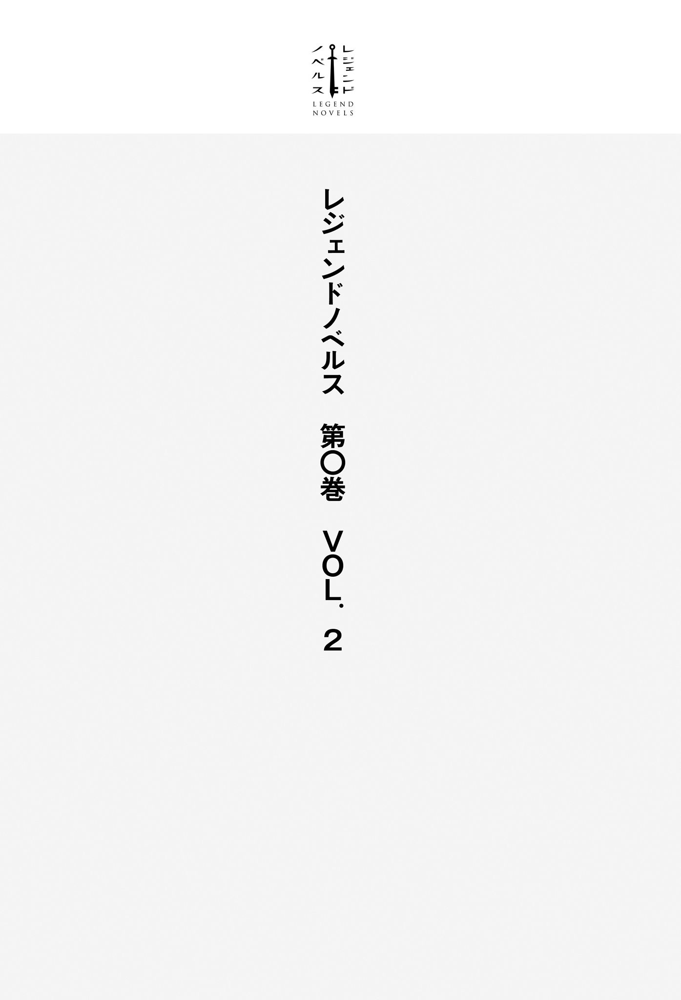

| レジェンドノベルス第０巻 ＶＯＬ．２ ２０１８年１１月版 | |
| のらふくろう & 浦賀やまみち & かすがまる & スフレ | |
| 講談社 (2018) | |
本作品は、縦書き表示での閲覧を推奨いたします。横書き表示にした際には、表示が一部くずれる恐れがあります。
ご利用になるブラウザまたはビューワにより、表示が異なることがあります。

「えっ!? 」
ふと気づいたら崖の上に立っていた。それも馬の背に乗って。
戸惑いに思わず声が漏れるが、すぐに今見ている光景が夢だと気づく。
なぜならば、見渡す限りの大自然なんて、今の日本にあり得ないからだ。
かつては秘境と呼ばれ、そこへ辿 り着 くだけでも四苦八苦の荒行で修験者しか訪れなかったパワースポットですら、今は気軽に行ける観光地と化している。
森を切り拓 き、必要とあれば山に穴を開けて、川や谷に橋を渡して、車が通れる舗装された道を敷き、そこでの不便がないように電線が張られて、旅館やホテル、土産物屋が作られてゆく。
だが、前方に人工物は一つも見当たらない。
目に見える色は大空の青と白、大草原の緑と点在する森の深い緑、大地の丸さを感じさせる地平の果てに在る山脈の淡い青の数色のみ。
「待て......。冗談だよな？ 止 めろって......」
しかし、これが普通の夢でないと俺は知っていた。
それだけに嫌な予感がした。馬が一歩、また一歩と進むたび、崖の高さが明らかになってくる。
前方の光景からある程度は予想していたが、それよりもずっと高い。
傾斜が辛 うじてある壁同然の岩肌を見せる崖斜面の下に豆粒大の人の姿が数千。距離にして、百メートル以上は確実にある。
崖縁に立った途端、吹き上げてきた強い風に前髪が舞い上がり、夢の中の俺が意味不明の言葉を一 吠 えして、まさかと息を吞 んだ次の瞬間だった。
「おおおおおおおおおおおおおおおおおおおおおおおおおおおおおおっ!? 」
嫌な予感は見事に的中。夢の中の俺は馬の腹を蹴り、その身を崖へ投げ出した。
馬は崖を走ると言うよりも凄 まじい速度で落下。岩肌へ着地して跳ねるたび、視界が激しく揺れて、ただただ悲鳴をあげることしかできない。
だが、夢の中の俺は見事な手 綱 捌 きで馬を操り、永遠にも感じた一瞬の後、崖下へ着地を決めると、その勢いのまま間髪を容 れずに雄 叫 びをあげながら右手に持つ槍 を振り上げて、数千の者たちへと斬り掛かっていく。
「ふぅぅ～～～......」
血煙が舞い、首が飛ぶ。
夢の中の俺が槍を振るうごと、返り血が俺の全身を赤く、赤く濡 らしてゆく。
剣を持つ者もいれば、槍を持つ者もいる。
最初こそ、崖上からの突然の登場にあっけに取られていたが今は違う。誰もが目を血走らせた必死の形相で武器を振り上げて、俺の命を奪わんと挑んでくる。
端的に言うと、ここは戦場のど真ん中。
普通なら逆 落 とし以上に恐れ戦 くところだが、俺は胸をホッと撫 で下 ろして溜 息 を漏らす。
「ああ、そうか......。久々だな」
その理由は先ほども言ったとおり、これが普通の夢でないと俺は知っているからだ。
夢とは時に突拍子もない光景を見せるが、それはあくまで過去の経験に基づいたもの。
例えば、空は身近にあるため、空を飛ぶ夢は見られるが、知識で知っているだけの存在の宇宙を飛ぶ夢は見られないし、空を飛んでいる浮遊感は高所から飛び降りた際の落下感覚か、水中を潜って泳いでいる感覚に酷似している。
それを踏まえて言うと、今見ている光景も、今抱いている感覚も俺は知らない。
俺は第二次世界大戦後の平和な日本生まれの一般的な日本人だ。殴り合いの喧 嘩 ですら片手で足りる経験しか持たない俺が戦場経験を持っているはずがない。
そもそも、実際に槍を手に持った経験すらない。
武道の経験は柔道と剣道を高校の体育でちょっと齧 った程度。槍をこうも軽々とは振れない。
言うまでもなく、乗馬なんて高尚な趣味は持っていないし、その経験すら持っていない。
子供のころ、両親に連れていってもらった動物園のふれあいコーナーにて、係員が手綱を引いてくれるポニーに乗った経験が一度だけあるくらいか。
だったら、これは過去に観 た映画などの架空の物語の影響かと言ったら、それは違うと断言ができる。
肉を斬り、骨を断ち、命を刈る感覚があまりにもリアルであり、血 飛沫 が飛び散り、首や手が宙を舞い、内臓が零 れ落 ちる様子があまりにもグロすぎる。今すぐ吐けるものなら、胃の中身すべてをとっくに吐き出しているところ。
恐らく、これは俺であって俺でない俺の記憶だ。
とんちのような言い方だが、そう表現するしかない。オカルト的に言うなら、前世の記憶か。
もちろん、根拠はある。
実を言うと、この俺であって俺でない俺の記憶を夢で見るのは今夜が初めてではない。
初めて見たのは小学校を卒業して、中学校へ入学するまでの間にあった二週間ほどの休みの最中だったと記憶している。
中学、高校のころは多いときで月に三、四度の頻度で夢に現れたが、二十歳を越えた辺りから次第に減ってゆき、今では月に一度見るか、見ないか。この前、見たのはもう二ヵ月半も前だったような気がする。
また、その見る内容は千差万別である。
今見ているような戦場の光景がほとんどになるが、何気ない日常の光景を見るときもある。
それこそ、どう足 搔 いても俺では縁すら持てない超美人とのラブシーンすら赤裸々にあるからたまらない。
しかし、本当の意味でたまらないのは翌朝だ。決まって、パンツが冷たく湿っており、その哀 しさたるや涙がホロリと零 れるくらい。
これがただの夢でないと断言ができる強い根拠の一つ。
俺は年齢イコール彼女いない歴を哀しくも絶賛更新中。風俗へ行った経験も持っていない。
今の世の中、インターネットを用いたら女体の神秘くらい手軽にいくらでも知ることは可能だが、それそのものは現実での体験がなかったら絶対に知り得ない。
それに俺の嗜 好 を前提にしているなら相手は同じ日本人のはずが外国人である。
容姿自体はアジア系に近いが、髪や瞳の色はヨーロッパ系。喋 っている言語は完全に聞き覚えがなくて、意味が解 らない。
おまけに、夢の中の俺であって俺でない俺はかなりモテモテらしい。
彼女以上の深い関係の女性が十人以上は確実におり、その容姿は可 愛 いロリ系から美人なスタイル抜群系まで幅広い。
それに引き換え、現実の俺は女性と手を繫 いだ記憶ですら遠く風化した過去であり、超幸運を味わった翌朝にパンツを洗っているときは殺意まで抱いてしまうほどだ。
ついでに強い根拠をもう一つ。
剣や槍、騎馬を戦争に用いている時点で解ると思うが、この夢の中の世界は文明、文化のレベルが明らかに古い。
プラスチック製品はもちろんのこと、鉄製品やガラス製品もほとんど見かけないところから考えると古代と中世の中間くらいの時代かもしれない。
「あっ!? 」
不意に霧が立ち込めて、それがどんどんと深くなり、目の前の光景が急速に白く染まってゆく。
これが現実なら慌てるところだが、俺は知っていた。これは現実世界の俺が目を醒 まそうとしているのを知らせるこの夢特有の合図である。
それだけに残念なことが一つあった。
この夢に登場する女性はいずれも可愛い、あるいは美人だが、その中でも特に俺の好みにバッチリと嵌 まる女性がいる。
三つ編みにした栗 色 の髪を腰まで垂らしている蒼 い目の女性だ。
もし、この夢に登場する女性たちでコンテストを開催したら、彼女は絶対に一位は獲 れない。
残念ながら彼女は胸が絶望的に薄いため、俺の贔 屓 目 の心証を加えたとしても、四位か、五位がやっとだろう。
だが、俺は彼女が気になって、気になって仕方がなかった。
彼女が夢に出てきたら、もう幸せ一杯。その仕草の一つ一つに胸はドキドキと高鳴り、その光景がラブシーンに及ぼうものなら翌朝の俺のパンツはとんでもない状態になる。
思春期真 っ只 中 のころは特にひどかった。
何かの病気を患っているのではないかと真剣に疑ったくらいパンツはとんでもないを軽く通り越して、悲惨な状態になり、その日は朝からグッタリと疲 労 困 憊 。学校をサボったのは一度や二度ではない。
それ故、これが夢だと解って落ち着いた際、彼女の登場を期待した。
だが、今までの経験から言って、彼女が登場するのは日常の場面のみ。戦場の場面で登場した前例はない。
「やっぱり、あの娘 は出てこないか......」
半ば諦めていたが、半ば期待もしていた。
落胆に溜息を漏らすが早いか、視界は真っ白に染まり、うるさかった戦場の音も遠ざかってゆく。
＊
「んあっ......」
携帯電話が奏でる目覚ましのメロディーに目が醒め、上半身をベッドから起き上がらせる。
口を大きく開け放ち、あくびを一発。今すぐにでも上半身をベッドへ戻して、至福の二度寝を決め込みたくなるが、そんな自分を先刻承知の俺である。
携帯電話はパソコンデスクの上にあり、ベッドからは手が届かない。
即 ち、目覚ましを止めたかったらベッドから下りて、パソコンデスクまで歩く必要があり、その三歩の間に意識は否 でも応 でも覚醒する寸法になっている。
しかし、今朝は二度寝以外にも目を醒ましたくない理由がもう一つあった。
つい今さっきまで見ていた夢は本当なら見てはならないモノとでも言いたいのか、目が醒めた途端に夢で見た内容は瞬く間に朧 気 な記憶となり、十分ほどで完全に忘れてしまうからだ。
以前、ノートを枕元に置いて、目が醒めたら即座に夢の内容を書き留めようとしたが、この目的も忘れてしまうために駄目だった。最終的に残るものと言ったら、奇妙な夢を見たというもどかしさだけ。
その癖、俺であって俺でない俺の目を通した光景を夢で見ているときは以前に見た内容の記憶が繫がっているのだから不思議でならない。
今、憶 えている先ほどの夢の内容もすぐに忘れてしまうのだろう。それが毎度のことながら惜しくて、どうすることもできない悔しさに舌打ちを鳴らそうとしたそのときだった。
『おはようございます！ 今朝は良い天気ですね！
今日は五月の第二日曜日、母の日です！ 皆さん、カーネーションは用意しましたか？ さあ、今日も張り切っていきましょう！』
「糞 っ......」
どうやら昨夜はテレビを点 けっぱなしで寝てしまったらしい。
目覚ましの喧 しさを凌 駕 して、朝を告げる女子アナの元気ハツラツな声が耳へ届き、俺の眠気は一気に吹き飛んで目が醒めた。
「はぁ......」
唯一の財産と言える軽自動車から降りて、溜息を漏らす。
最近、ローギアの加速が鈍い。気のせいか、エンジン音も少しうるさくなったような気がする。
ひょっとして、故障だろうか。そうだとするなら、再来月に巡ってくる車検の費用が怖い。
もっとも、情けない話ではあるが、その費用を用意するのは俺ではない。
俺は俗に言うニート。それも最後に金を稼いだのは四年も昔であり、それなりに蓄えていた貯金はとうの昔に使い果たしている。
さて、突然で申し訳ないが問題を一つ。
親のスネどころか、その骨まで齧 っているうえにしゃぶってまでいる厚顔無恥なニートでさえ、どうしても自宅にいづらい日がある。それはいつか。
『月曜日』と答えた諸君。君は一般人か、まだ学生か、あるいはニート超初心者だ。
学生なら何でもチャレンジして、一生懸命に頑張れ。社会人なら今の職を最後の最後まで手放そうとするな。
もし、ニートなら諦めてはいけない。おまえはまだただの無職に過ぎず、今すぐにでも現役復帰はやる気次第でいくらでも可能だ。
国が定める雇用保険制度はとても優れた制度ではあるが、それに胡座 をかいて余裕ぶっていてはいけない。失業給付が支給されているうちに何が何でも再就職をしろ。
『誕生日』と答えたおまえ。残念ながら、おまえはニート初心者だ。
だが、年齢を無駄に重ねている現実を恥じているうちはまだまだ間に合う。今すぐ、求人雑誌を買いに走れ。
今の世の中、給与面を筆頭に待遇が悪いところばかりだが、プライドは捨てろ。面接に落ちても気に病まず、自分を採用しなかった企業の愚行を笑ってやれ。
もし、『母の日』と答えたおまえは俺と同じニート中級者だ。
その日が迫ってくると、テレビが、ネットが、コンビニが、スーパーが、デパートが俺たちを責め立ててくる。
格好の話題として特集を組み、定番のプレゼント『カーネーション』が店頭に大々的に並び、大の大人がこの程度のプレゼントも買えないのかと情けなさを思い知らせてくる。
たとえ、買ったとしても貯金が尽きた今、そのお金は何 処 から来たのかと言ったら、母親の財布から。
子供ならまだしも、それをプレゼントと呼んでよいものなのか。まだ手作りの肩たたき券を渡したほうがマシな気がする。
当日ともなったら、その気まずさはマックスに達する。
今朝は朝食を食べた後、日課のネットサイトを軽く巡り、家をそそくさと出てきた。
しかし、財布の中身は野 口 さんが一人と小銭が数枚。夜までどう過ごしたら良いやら。
そう言えば、子供のころに読んだ伝記漫画によると、野口英 世 はとても母親思いだったらしい。それをふと思い出して、ちょっと鬱 になる。
余談だが、ニート上級者とニート神の答えは知らない。
さすがの俺もその境地にはまだ至っていないし、至ろうとも思っていない。
ニートがニートと呼ばれなくなる三十五歳まであと二年とちょっと。その年齢までには何とかしたいと考えている。
「あーーー......。うるさい」
そんなことを考えながら目的地の自動ドアの前で立ち止まる。
右手をタッチセンサーへ伸ばして、自動ドアがゆっくりと開いた途端、俺の悩みなど吹き飛ばすほどの喧 しさが中から溢 れ出 す。
思わず立ち止まって、辺りをキョロキョロと見渡すが、俺のことを気にする者など一人もいない。全員が全員、自分の目の前の出来事に集中している。
ここは老若男女が集い、絵柄や数字が揃 うのに一喜一憂して、天国と地獄を味わえる大人の社交場『パチンコ店』である。
ただし、ここへ来た目的は遊びではない。その昔、俺がまだブラック企業の社畜戦士だったころ、先輩から誘われて、初挑戦で大勝ちをして以来、足 繁 く通ったものだが、今はとっくに足を洗っているし、それ以前に遊ぶ金がない。
なにしろ、ここはたったの五分と保たずに野口さん一人が消えてしまう恐ろしい世界だ。
最近は世の中のニーズに合わせた低価格レートの遊戯台も存在するが、それでさえも三十分と保たない。
大当たりを引きさえしたらなんて甘い夢は見ない。
先ほども言ったが、財布の中身は野口さんが一人と小銭が数枚。今日の昼飯代と夕飯代であり、これがなくなったら家に帰るしかなくなる。
だったら、何を目的にパチンコ店へ訪れたのかと言ったら、お目当ては休憩室。
すべてのパチンコ店に存在するわけではないが、この店の休憩室はサービスが特に際立って素晴らしい。
店内の騒音が気にならない程度の防音処理が施されており、リクライニングチェアー、マッサージチェアーがそれぞれ五つ。
小さな漫画喫茶と言えるくらいに週刊誌やコミックが書棚にずらりと並んでおり、お茶やコーヒー、紅茶などのソフトドリンクが飲み放題ときている。
それこそ、某公園前派出所警察官の長寿漫画が全巻揃っている充実っぷり。
今日の俺の目標は某元暴走族サラリーマンの成り上がり漫画を全巻読破。これだけで一日は軽く潰れる。
そう、ここは誘惑に負けない断固たる決意を持ってさえいたら、暇潰しにもってこいの場所。
俺が住んでいる地域の最大店であるため、客の出入りはとても激しく、休憩室に入り浸っていても店員から白い目で見られないのも良い。
「ふぁっ!? 」
だが、その断固たる決意を揺るがす奇跡がそこに輝いていた。
休憩室へ向かう道中、客が比較的に疎 らなパチスロコーナーを歩いているとき、それが何気ない視界の中に飛び込んできた。
一旦、その場を通り過ぎるが、ありふれた光景の中にあった異常事態に気づいて緊急停止。慌てて後ろ歩きに一歩、二歩、三歩と戻る。
幸いにして、店内の騒がしさが俺の奇声を搔 き消 してくれたらしい。
辺りをキョロキョロと見渡すが、俺を注目する者は誰一人としておらず、胸をホッと撫で下ろしながら改めて視線を驚いた理由へ向ける。
「こ、これ......。あ、当たってね？」
一応の建て前上は違うが、パチンコ機も、パチスロ機もその実はギャンブル機なのは誰もが知る公然の秘密であり、金銭が大きく絡むギャンブル機故にはかない運命を持っている。
各開発メーカーから百機種以上のパチンコ機、パチスロ機が一年の間に発表されるが、客が付かない不人気の機種は店から即座に撤去されてしまい、発表されてから一年後に残っている機種はそう多くない。
逆に言ったら、人気がありさえしたらずっと残り続ける。
目の前のパチスロ機が正にそれだ。技術の進歩と共に演出が複雑化、派手化してゆく流行の中、昔ながらのドラムロールと音楽、ランプのみのシンプルさで根強い人気を誇り、パチスロ機のルールが上からのお達しで変わっても、それに合わせた後継機が作り続けられている。
こういった後継機は演出面も踏襲しているのが常だ。
開発メーカーは下手に弄 って、人気が落ちるのを恐れる。新しい部分を加えても大事な部分は絶対に変えようとしない。
だから、昔取った杵 柄 と言うか、何と言うか。
目の前にパチスロ機シリーズが置いてあったら、目が自然と行く場所がある。それがドラムロール左下の『ＧＯＧＯ！』ランプである。
なぜならば、そのランプが輝くときこそ、当たりが内部的に確定した状態だからだ。
次のゲームで大当たりか、小当たりを引ける合図を意味するソレが、パチスロ機の前に誰も座っていないにもかかわらず、燦 然 と輝いていた。
クレジットを確かめると、二つのゼロが並んでおり、入っていない状態。
パチスロ機からコインが吐き出される下皿にもコインは一枚も置かれておらず、トイレなどの所用の際に台の確保を意味する煙草 の箱やライターなども置かれていない。
つまり、この目の前のパチスロ機は誰も遊んでおらず、当たりが何らかの理由で放棄されたという証 に他ならない。
今一度、通路の前後をキョロキョロと見渡すが、ここのパチスロコーナーにいる客は二人。左側の列は四台先に、右側の列は六台後ろにいるが自分の遊戯に夢中でこちらへ視線すら向けない。
中央の通路に立っている店員は目が合ってもニッコリと微 笑 んで会釈するのみ。
もはや、偶然と偶然が重なって奇跡となり、客も、店員も、店自体も、この信じられない状況に気づいていないのは確実だった。
「い、良いんだよな？」
躊躇 いながらも椅子に腰掛け、なけなしの野口さんを震える左手で戦場へと投入する。
久々のパチスロである。貸出機から吐き出されてくるコイン五十枚の音を聞きながら備え付けの遊戯カードを凝視して、パチスロ機のドラムリール表を目に焼き付ける。
「ふぅぅぅぅぅ～～～～～～......」
心臓が痛いくらいにドキドキと高鳴っていた。
気持ちを落ち着けようと大きく深呼吸をするが、その吐き出した息さえも震えていた。
コインを投入。決意に頷 き、レバーを叩 く。
目の前でクルクルと回るドラムロールと脳内に焼き付けたドラムロールが次第に一致してゆき、赤い『７』の煌 めきを狙ってボタンを押す、押す、押す。
「７、７......。７っ!? 」
そして、ドラムロールに赤い『７』が三つ揃うと共に奏でられる軽快な音楽。
興奮と喜びは最高潮に達した。この店の換金率は忘れたが、これで野口さんが四人か、五人に増殖したのは間違いない。
ところが、ところがである。興奮も、喜びもまだ終わっていなかった。
母の日のプレゼントにカーネーションとケーキを買って帰れる。そう考えながら至福のボーナスゲームを終えて、席を立とうとした次の瞬間だった。
「えっ!? ......ええっ!? 」
またもや、『ＧＯＧＯ！』の演出ランプが燦然と輝き、思わず我が目を疑うと共にケツが驚きのあまり椅子から浮いた。
＊
「むふふっ......」
幸せを感じながら外灯に照らされたパチンコ店の広い駐車場を歩く。
顔が堪えきれずに緩み、笑みが自然と零れる。本音を言ったら、歌を大声で歌いながらスキップを踏みたいくらいの気分だった。
今、俺の財布の中には福沢様がなんと二十三人。
二回目の大当たり後も大当たりのラッシュが続き、その後は少し沈みかけるも大復活。大当たり街道を爆走まっしぐら。
昼飯も、夕飯も食べず、トイレのために立つ時間すらも惜しいと感じるくらいにひたすら打ち続けて、店員さんに肩を叩かれて気づいたら閉店時間。大当たり街道はまだまだ続きそうな気配で非常に名残惜しいが、その時点で終了となった。
福沢様がこれだけの人数いたら、カーネーションどころの騒ぎじゃない。最新型の洗濯機が余裕で買える。
最近、我が家の洗濯機は洗濯槽の共振音が近所迷惑な騒音レベルでひどくなり、夜間の使用は絶対禁止の代物になっていた。
とーちゃんとかーちゃんは『まだまだ使えるから』と笑って言うが俺は密 かに知っている。
自宅から車で約三十分の距離にある大型電器店の安売り広告チラシが新聞の折り込みに入ってくるたび、それを眺めてはもう二年近くも買い替えを悩んでいるのを。
それなら、母の日のプレゼントに買ってあげようじゃないか。
ただし、今の時刻は十一時ちょい前。当然ではあるが、こんな時間に営業しているのは居酒屋くらいのため、今日はさすがに無理だ。
だから、明日はとーちゃんとかーちゃんを誘って、洗濯機を買いに行こう。
その帰りの夕飯は寿 司 に決定だ。最近は寿司と言ったら、スーパーのパック寿司だが、明日は子供のころに何度か連れていってもらった寿司屋へ行き、思う存分に食べてもらう。
それとも、焼き肉のほうが良いだろうか。
どちらにせよ、とーちゃんも、かーちゃんも、きっと驚くに違いない。その顔が今から楽しみで仕方がない。
「くっくっくっ......」
洗濯機と明日の夕飯、その二つに散財しても福沢様はまだまだ残っているはずだ。
所詮はあぶく銭である。こういうお金はちびちびと使うより、大きくドカンと使ったほうが後悔は少ない。
何を買うか、実に悩んでしまう。
普段は欲しい物をいろいろと考えるが、いざ買えるとなったら迷う。
やはり、新しいパソコンだろうか。
最近、起動がすっかり遅くなって待っている最中にイラッとすることが多い。
それとも、最新型のスマートフォンか。
通話とメールの二機能だけしか使わない俺は今使っているガラケーで問題はないが、最近はスマホ専用のゲームが気になる。
それとも、それとも、今遊んでいるネットゲームに重課金をしちゃうか。
日頃は無課金主義の崇高さを訴えている俺だが、本音はレアが欲しくてたまらない。俺ＴＵＥＥＥがしてみたい。
なんと幸せで贅 沢 な悩みだろうか。
この瞬間が永遠に続けば良いのにと思いながら、駐車場の隅に置かれた自分の車へ辿 り着き、ズボンのポケットから車の鍵を取り出して、キーレスエントリーのボタンを押したそのときだった。
「んっ!? ......あぐっ!? 」
こちらへ近づいてくる駆け足の音が背後から聞こえ、反射的に振り返ろうとした瞬間、背中を固い棒のようなモノで殴られた。
その激痛と衝撃に仰 け反 りながら蹌 踉 めき、突き出した両手で車を支えに踏ん張ろうとするが、自分の足がまるで他人のもののように言うことを聞かない。
「うがっ!? 」
続けざまに脳天へ強烈な一撃。
視界が大きく揺れて、バランスを取るために片膝を落とすが、片膝を落とした体勢すらも堪えられず、その場に崩れ落ちる。
「はぁっ、はぁっ、はぁっ、はぁっ、はぁっ！」
「な、何を......」
誰かの荒い息遣いが頭上で聞こえる。
ぼやける視界で見上げると、駐車場の眩 しいライトを逆光に背負う男がおり、その顔に見覚えがあった。
パチンコ店へ現れたのは夕飯時を前に客が少し減り始めた夕方ごろだったか。
俺の五つ左隣の席に座っていた男で間違いない。悪態をつきながら台を何度も苛 立 ち気味に叩いていたため、記憶に印象強く残っている。
「うるせぇ～よ！ 昨日と今日で十六万だぞ！ 十六万！
おかしいだろ！ 普通、これだけ使ったら、一回くらいは当たりが来てもいいだろうが！
その癖、てめぇは簡単にぱかぱかと当てやがってよ！ 店とグルなんだろ！ 店に甘いもんでも渡してんのか！」
「ち、違っ......。ぐぐぅっ!? 」
どうやら、そのときの様子と唾を飛ばして怒鳴っている内容を合わせて察するに男は随分と負けたらしい。
それで何をとち狂ったのか、正反対に大勝ちした俺へ八つ当たりとは理不尽にも程があったが、それが解ったところで今の俺になす術はなかった。
反論をちょっと口にした途端、男は更にいきり立って、殴る蹴るの暴行。今の俺にできることと言ったら、せいぜい頭を抱えながら身体 を丸くすることだけだった。
「おら、俺の金を返せ！ さっさと寄こせって言ってるんだよ！」
「や、止めろ......。うぐっ!? 」
「うるせぇ！ 遠隔なんだろ！ こっちは知ってんだよ！ ダボが！」
挙げ句の果て、俺がせっかく摑 み取 った幸運を奪い取ろうと、男は財布が入っている右の尻ポケットへ手を伸ばしてきた。
慌てて財布を守ろうとポケットを右手で押さえるが、それがまずかった。ガードがガラ空きになった頭へ棒が振り下ろされて、目が飛び出そうな痛みと一緒に熱いモノが額から溢れ出てくる。
ここで今更ながらに気づく。
先ほどから何度も殴っている棒は木でもなければ、プラスチックでもない。
どう考えても、それは鉄の固さであり、鉄の棒を躊躇いもなく人の頭へ振り下ろせる人間がいるなんて、とても信じられなかった。
恐怖のあまり股間が生暖かくなってゆく。
もはや、抵抗する気力を完全に失って、されるがままに任す。今という瞬間が一秒でも早く終わることだけを願う。
「何だよ、これ！ やっぱり、おかしいだろ！
どうして......。ちっ！ まあ、良い！ いくらかは知らねぇ～が利子も貰 ってゆくからな！」
至るところを打たれて、何処が痛いのかが解らない。
とにかく、全身が痛かった。痛くて、痛くて、熱かった。
財布は奪われてしまい、小銭を除いた中身をすべて抜かれて、財布が投げ返される。
仕打ちが理不尽なら、捨 て台詞 まで理不尽であり、何かを一言くらい怒鳴ってやりたかったが、意識が朦 朧 として、頭も回らなければ、口も回らない。
「おい！ 何をやっている！」
「誰か！ 警察だ！ 警察を呼べ！」
「ちっ......。じゃあな！ 次、この辺りでまた見かけたら承知しねぇ～からな！」
その後、どうなったのかは解らない。
瞼 が急速に重くなってゆき、つい先ほどまでは痛くて、痛くてたまらなかった全身の痛みが不思議と消えていた。
不意に次々と浮かんでは消えてゆく過去の記憶。
自分自身ですら忘れていたソレが克明に蘇 ってきて、懐かしさを感じる。
「か、かーちゃん......」
最後に浮かんだのは『おまえはやればできる子だから』と俺を慰めるときにいつも浮かべるかーちゃんの苦笑だった。
それも高校一年の冬に赤点を取り、初めての大きな挫折に随分と落ち込んだときのもの。よりにもよって、これかと俺も苦笑を浮かべる。
「こいつはひどい......。救急車だ！ 救急車も呼べ！」
「えっ!? コンビニが何ですか？ しっかりしてください！」
うん、頑張るよ。黙っていたけど、実は来月からコンビニのバイトが決まったんだ。
この歳 でコンビニのバイトはちょっと恥ずかしいから、地元の連中と会わないように少し離れた場所だけど......。
うん......。今度こそ、頑張るよ。俺......。
「何 処 だ？ 何処にいる？」
鬱 蒼 とした森の奥深くを半日以上も歩き続けて、収穫は野ウサギがたったの一羽 。
その収穫量の少なさから『いる』という確信はあったが、それはどうやら正解だったらしい。
姿は見えないが視線を確かに感じる。
焦る心を落ち着けようと深呼吸を一回、二回、三回と繰り返して、四回目の息を素早く飲む。
杖 代わりに持っていた左手の樫 の木で作った身長大の棒の尻で大地を叩 き、それを手放すと同時に背後へ右回りで振り向き、腰の右脇に着けていた短弓を空いた左手に持ち、背負った矢筒から抜いた矢を右手に持つ。
「そこか！」
即座に矢を弓に番 えると共に弦を引き絞っての速射。
矢はやや弧を描きながら飛び、狙いを違 わずに十五メートルほど先に生い茂っている藪 の中へと飛び込む。
「ガウウゥゥッ!? 」
その瞬間、凄 まじい雄 叫 びが森に轟 いた。
俺の勘は正しかった。藪を激しく揺らして、その中から茶色い毛並みをした巨大なクマが現れ、俺へと猛突進してくる。
正面からは俺が放った矢は見当たらない。
ケツにでも刺さったかと苦笑しながら二本目の矢を弓に番える。
次は慎重に狙いを定めての精密射撃。
大地をドタドタと重く踏み鳴らす音だけを聞いたら鈍重そうだが、その実は思っているよりも素早く接近してくるクマに慌てず落ち着いて矢を放つ。
「ガウウゥ～～ッ！」
先ほどとは違って、弦を限界まで強く引いて放たれた矢は真 っ直 ぐに突き進み、鈍い音をブスリと立てながらクマの眉間に見事命中。
これにはさすがのクマも突進を止めた。四 つん這 いの状態から立ち上がり、その激痛を訴えるように両手を上下にバタつかせながら悲鳴をあげる。
予想していたより随分と大きい。まだ約五メートルは離れているにもかかわらず、見上げるほどの大きさだ。多分、全長四メートルは確実にある。
「行くぞ！」
だが、驚いている暇などない。
今こそ、絶好のチャンス。弓を投げ捨てて、まだ倒れずに隣で自立している身長大の棒を両手に持ち、今度は俺がクマへと突進する。
「うらああああああああああああああああああああっ！」
「ガフゥッ!? 」
そして、裂 帛 の気合を放ちながら棒をクマの喉元目がけて突き出す。
手応えは十分。棒を通して反動が伝わり、後方へと弾 き飛 ばされるが、クマも後方へとたたらを踏む。
「ふん！」
すかさず強く踏み込んでの一足飛び。
完全に悶 絶 して、防御がガラ空きになっているクマの土手っ腹へ全身の捻 りを加えた渾 身 の突きを放つ。
「ガブブッ!? 」
クマが巨体を『く』の字に曲げて、酸っぱ臭い反 吐 を撒 き散 らす。
だが、まだ終わらない。この森の王者にふさわしいタフさを発揮して、すぐに体勢を立て直すと、その豪腕を振るって反撃してくる。
常人が喰 らったら、命を簡単に散らしてしまう必殺の一撃である。
その力強さはもちろんのこと、鋭い爪が凶器となり、少し掠 めただけで肉を深く抉 られてしまう。
去年、それを俺は実際に喰らっている。
文字どおり命からがら逃げ延びたが、激痛と高熱にうなされる一週間が続き、その後は一ヵ月ほど寝込み、完全復帰するのに一季節もかかった。
あれから約一年。傷跡は未 だに四本の線を描いて胸元に残っている。
今、それが熱さと疼 きを放ち、当時の恐怖をまざまざと蘇 らせて、今すぐ背中を向けて逃げ出せと強く訴えてくる。
「だが、当たらなければ、どうということはない！」
「ガウガ！」
しかし、強気な発破をかけての自己暗示。俺は逃げない。
逆に前へ進み出ながら身体 を反らして必殺の一撃を避けると、クマは間髪を容 れず左腕の一撃も続けざまに振り落としてきた。
どうやら、クマはこれを最初から狙っていたようだ。
早すぎる二連撃はとても避けきれず、死中に活を求めて、反っている身体を戻した勢いを加えた棒の巻き払いを放つ。
「貰 った！」
その結果、カウンターが決まって大成功。
クマは左腕を外側へ弾 かれ、身体を左に捻り仰 け反 り、その一方で右腕は振り落ろしているために身体の右は沈み、今にもバランスを崩してしまいそうな左右がちぐはぐの体勢となる。
千載一遇の好機に勝利を確信して、前方へ踏み込みながら大地を棒で突き、棒高跳びの要領でホップ。
一旦、クマが振り落ろしている右腕を足掛かりにステップを取り、そこからジャンプ。クマの首へ左腕を回して摑 むと、その肩の上へ強引に飛び乗る。
慌ててクマが俺を振り落とそうとその巨体を左右に振るが遅い。
右足のブーツに仕込んである短剣を引き抜き、クマの喉へ深く突き刺すと共に斬り裂く。
「ガウウウゥゥ～～～ッ!? 」
おびただしい血が噴水のように噴き出して、周囲を真っ赤に染める。
クマは痛みと苦しさに巨体をより左右に震わすが、振り落とされる前にクマから飛び降りて、すぐさま十メートルほど十分な間合いを取る。
短剣はクマの喉へ突き刺したまま。
棒も、弓も、クマを間に挟んだ向こう側に落ちている。
これで駄目なら残る武器はこの身一つ。拳と蹴りしか残っていないが、まず大丈夫だろう。
「ガウ！ ガウウ！ ガウッ......」
案の定、クマはまだやれると果敢に吠 えて、俺へと向かってくるが三歩と歩かずに膝を折った。
首から噴水のように噴き出していた血が勢いを次第に弱め、それが止まると同時にクマは前のめりにゆっくりと倒れてゆき、その巨体の重さに森が小さく揺れる。
「はぁ......。はぁ......。はぁ......。はぁ......。よっ......。よっしゃあああああああああああああああああああああああああ！」
時間にしてみれば、数十秒程度の短い戦い。
急激に襲ってきた疲労感は凄まじかったが、それを上回る達成感は心に満 ち溢 れ、肩を激しく上下させる荒い息を無理やりに飲み込むと、両拳を天高く掲げながら勝利の雄叫びをあげた。
＊
「ふふふふんっ、ふふんっ！ ふんふんふんふんふっ！ ふんふふっふんふんふーんっ！」
どうしても堪えきれず、顔が自然とにやけてくる。
クマを短剣で解体しながら、ついつい口がハミングを勝手に口ずさんでしまう。
なにしろ、今いる山を丸ごと縄張りにする猛 者 を倒したのだから当然だった。
獲物の貴重さ、大きさもさることながら、これで今までクマの胃袋に収まっていた分の獣たちが生き延びることになるのが実に喜ばしい。
それは詰まるところ、山が獲物で豊かになることへ繫 がり、それらを狩るのを生 業 とする俺としては来年以降の生活が今以上に豊かとなるのが約束されたようなもの。嬉 しいに決まっている。
もちろん、いずれは新たな山の主が現れるだろう。
それが大自然の摂理というものだが、三年、四年は大丈夫なはずだ。うまくしたら、十年は安泰かもしれない。
ちなみに、今口ずさんでいるハミングはある魔法少女アニメのオープニングテーマ曲である。
深夜放送だったにもかかわらず、可 愛 い絵柄とは裏腹にダークな内容が世間的にも話題となって流 行 り、その当時は興味を持っていなかったが、俺が駄目人間な『ニート』となり、暇ばかりを持て余すようになってから随分とハマり、今でもご機嫌なときは口ずさんでしまうくらい好きだった。
もはや、この説明で解 ったかと思う。
アニメという発達した文明先進国『日本』の文化を知りながら、その『日本』ではまれになってしまった猟師という職業を猟銃も使わずにやっている俺はいわゆる『転生者』と呼ばれる前世の記憶を持つ者だ。
初めて、それに気づいたときは驚いた。
いや、戸惑ったと言ったほうが正確か。なんと金髪美人のお姉さんがいきなり胸元をはだけさせたと思ったら、桜色のポッチを微 笑 みながら『さあ、しゃぶれ』と差し出してきただけに。
しかし、こんなチャンスは二度と巡ってこないかもしれない。
当時、恥ずかしながら年齢と彼女いない歴がイコールで繫 がっていた童貞の俺は是非もなしと遠慮なく頂いた。それはもう全力全開のペロペロのレロレロで。
お姉さんが身体を震わせてむず痒 がり、甘 嚙 みした際に甘い吐息を漏らしながら身体をビクッと跳ねさせたときは感無量だった。正に『我が生涯に一片の悔いなし』である。
だが、お姉さんが首を不思議そうに傾 げて、俺の名前を呼んだ瞬間、すべてを直感で悟った。
パチンコ店の駐車場で死んだはずの俺が新たな人生を得ていると。その金髪のお姉さんが新たな人生における母親であり、自分が赤ん坊になっていると。
その途端、死の記憶がまざまざと蘇ってきた。
恐ろしさのあまり助けを必死に叫んだが、舌足らずな口はただただ泣き喚 くだけ。
本当にまさか、まさかの事態。生まれ変わりを題材とした漫画やアニメ、小説は数多く知ってはいたが、自分の身に起こるとは思ってもみなかった。
幸いにして、当時の俺は生きるための食事すら両親の補助が必要な赤ん坊。
時間だけはあり余るほど豊富だったため、いろいろと深く考えさせられた。お約束なオムツ替えの羞恥プレイに堪え忍びながら。
とにかく、過ぎてしまったことをくよくよと悔やむのは止めた。
そうでなければ、今の俺を自分たちの子供として愛を注いでくれた今の両親に申し訳なかった。
鼻が曲がるほどの大便をブリブリと漏らしても、それを嫌な顔一つせずに微笑んでかたづける両親を見ていたら自然とそうなった。
無論、俺の死後、前の両親がどうなったかは気になったが、気にしたところで知る術がない。世界そのものが違うのではどうしようもない。
どうして、それが解ったのかと言ったら、一目瞭然。
この世界の夜空には紅 い月と蒼 い月の二つが存在するからだ。
文明や文化の進み具合も違う。
地球の文明レベルで例えるなら、中世より少し前のような気がする。
製鉄技術は存在しても鉄製品は高価であり、生活用品は木製が主流になっている。
ガラスはもっと高価だ。小さいモノなら安い宝石扱いで見たことはあるが、窓と言ったら木窓でガラス窓は一度も見たことがない。
そして、ここが異世界だと断言ができる何よりの証拠。魔法が存在する。
正確に言うと、魔術と神術。その技術を知る者は世界の助けを借りて、地球上では起こし得ない奇跡を起こせる。
「さて、火を焚 くか。火打ち石はっと......」
当然、興味を覚えて、元神官だった過去を持つらしい母親に師事を申し出たが、その結果はご覧のとおり。
魔術、神術を教わるうえで初歩の初歩とされるライター程度の火すら灯 せない。前世からの夢は捨てるしかなかった。
才能は確かに感じるが、何かが邪魔をしている。
母親は首をしきりに傾げながらそう言ってくれ、それを当時は親の子を思う慰めと感じていたが、その意味が今なら理解できる。
俺が魔術、神術を使えないのは前世を持つがための弊害だ。
前の世界の常識に引っ張られて、最初からできない、あり得ないと思い込んでいるのが原因らしい。
以前、住んでいる村へ立ち寄った魔術師から似たようなことを言われて、なるほどと頷 いた。
話を詳しく聞くと、似たような思い込みを持っているために才能はありながらも魔術が使えない者は意外と多いのだとか。
さて、転生と言ったら、強くてニューゲーム的な転生特典。
生まれ変わりを題材とした漫画やアニメ、小説に欠かせないと言っても過言でない天 稟 と呼ぶべき何らかのチート要素である。
やっぱり、俺も赤ん坊から子供になり、今へと成長してゆく過程でそれをおおいに期待した。いつか、素晴らしい何らかの才能に目覚めるのだと。
まずは容姿がチートなのか。
前世の基準で評価すると、父親はイケメン、母親は美人で間違いない。
その二人の血を受け継ぎ、髪は父親譲りのアッシュブロンド、目は母親譲りの蒼い瞳。前世に比べたら、断然にイケメンと言える。
しかし、この世界の基準で評価するには、サンプルが少なすぎるために解らない。
テレビも、インターネットもないこの世界で俺が知っている世界は住んでいる村と猟を行っている幾つかの森しかない。村から二本の街道が延び、その先に二つの村が存在するが、俺はどちらも行ったことがない。
そのうえ、俺が住んでいる村は国の北西最端に位置する超ド田舎。
街道が延びる先以外の方向は決して越えられない険しい山脈が連なっており、そんな事情から旅人が村を訪れる回数は一年に両手で足りるほど。あとは季節の始めに訪れる行商人のおっさんしかいない。
要するに人口が二百人程度の小さな村の中で容姿はあまり意味を持たない。
極めて醜悪なら話は別だろうが、大事なのは性格であり、常々から真面目に働いているかどうかでもてはやされる。
では、出自がチートなのか。
これも残念ながら違う。俺の両親は俗に『冒険者』と呼ばれる何でも屋だった。
それも一つの場所に長く留まらず、各地を転々とする根無し草。今、住んでいる村に定住を決め、村の猟師を担うようになったのは俺が六歳のころだったと記憶している。
なら、天稟を持っていて、それがチートなのか。
残念ながら、それも違う。先ほど言ったとおり、まず魔術、神術が使えない。
今、こうして倒したクマを捌 き、その肉を焼いているが、これも実は大したことがない。
前世でなら、単独のクマ退治は大絶賛を浴びるにふさわしい戦果だが、俺の親 父 はもっと凄 い。短剣、棒、弓矢、この三つだけでクマどころか、マンモスを倒してしまう。
もし、マンモスと聞いて、動物園のゾウの親戚程度と考えているならそれは大間違いだ。
マンモスはあんなにのんびりとはしていない。大きさはゾウの二倍から三倍はあるのに驚くほど俊敏な動きをする。
最大の武器は二本の牙と巨体を活 かした突進。
その姿は正に暴走ダンプカーであり、大木すら薙 ぎ倒 す威力の前にヒトなど一 溜 まりもない。
今の俺が暴れマンモスともし遭遇したら、形 振 りを構わずに持っている荷物をすべて捨てて逃げ出す。
それを倒しきるまで結構な時間はかかっても単独で狩り遂げた親父こそ、チートと呼ぶべき存在だろう。
実際、俺は親父から剣術や棒術、弓術などを習ううえで手合わせを何度も行っているが、勝てたためしがない。
親父は全力を出しきっていないにもかかわらずだ。
いつになったら、親父の領域に届くのか、その想像すら付かないほど強い。
もっとも、前世の常識から見たら、チートな存在は割といる。
俺が住んでいる村は林業を主産業としているのだが、村の木こりたちは丸太を一人で軽々と肩に担ぐ。
その昔、俺も試してみたがこれっぽっちも上がらなかった。
木こり特有の熟練と言うか、コツみたいなモノがあるのだろうが、それを差し引いてもチートと言うしかない。
「しかし、久々に食べるけど......。クマって、苦労する割にうまくないよな。固いし、獣臭くってたまらんわ」
つまり、前世と比べたら、俺の新しい人生は『強くてニューゲーム』に違いない。
だが、俺は魔王を打ち倒すような勇者でもなければ、世界に関わるような運命を持った物語の主人公でもない。狩りが少し得意なただの村人Ａでしかない。
しかし、それで十分だ。
元ニートの俺が転生特典を得て、新たな世界でウハウハするなどムシが良すぎる。
新たな人生をくれた両親に感謝して、前世ではできなかった親孝行をする。
それで十分だった。それが幼いころに立てた俺の目標であり、それ以外は望まなかった。
ところが、ところがである。
今住んでいる村に定住を決めた後、母親はまもなくして流行り病に倒れるとあっけなく逝ってしまった。
せっかく転生したにもかかわらず、ロクな医学知識を持っていない自分を呪った。
魔術と神術が化学と科学の代わりに進歩発達して、迷信ばかりのこの世界を呪った。
「おっと......。忘れるところだった。他は捨てても、肝だけは持ち帰らないとな。たったこれだけで半年分の収入だ。だけど......。こんな物が万病に効くって本気で信じられているんだからおかしなもんだ」
十歳の誕生日を迎えた日から親父の後に付き従い、今年で四年目を数える猟師稼業。
獲物の解体作業など慣れたもの。初めてのころ、はらわたを見て、ゲーゲーと吐いたのは良い思い出だ。
そして、今日はついにこの山の王者だったクマを狩ることに成功した。
もう一人前を名乗ってもよいころと俺自身は考えるが、その判断に迷う。
なぜならば、その判断を下してくれるはずだった親父はもういない。
変な雑菌が入ってしまったに違いない。右足に負った小さな切り傷が原因で今年の夏に逝ってしまった。
親父が変な瘦せ我慢をするから発見が遅れてひどく化 膿 してしまい、傷口を火で焙 った短剣で焼き削 いだが手遅れだった。
うちの村は平和だが、ヒトが死ぬのは傷や病だけが原因ではない。
とにかく、この世界は取るに足らない理由で人が簡単に死ぬ。その多くが貧困によるものだ。
行商人のおっさんが村へ来るたびに教えてくれる。
うちの村は貧しいながらも豊かだと。村を治める領主様が良い人でうちの村人たちは幸せだと。
村以外を知らない俺にとって、外の世界のことは解らないが、土地による差が激しいらしい。
最近は物価が上がって苦しいところが多いとか、傲慢を絵に描いたような領主がいるという話も聞いたことがある。
いずれにせよ、俺はこの世界で大人と認められる来年の十五歳を目前にして目標を失った。
母親は二十代後半、父親は三十代後半、どちらも死ぬにはあまりにも若すぎる年齢だったと言うのに。
もしかしたら、これも前世で親不孝をさんざんした俺へ対する呪いだと言うのか。
そう、『これも』だ。俺には新しい人生を得た代償に神から与えられた呪いがかかっている。
それは......。
＊
「ふぅぅ～～～......」
歩き続けて、半日がかり。
ようやく見えてきた我が家に額の汗を右腕で拭 い、剝ぎ取ったクマの毛皮を風 呂 敷 代わりにした荷物を背負い直して溜 息 を漏らす。
その本日の獲物がたっぷりと詰まった重さが心を弾ませる。
顔が堪えきれずに緩み、笑みが自然と零 れる。本音を言ったら、歌を大声で歌いながらスキップを踏みたいくらいの気分だった。
余談だが、視線の先にある我が家は本邸ではない。
猟用の山小屋で春から秋にかけてはそこで過ごし、村へ下りるのは週に一回程度しかない。
「おっ!? 来てたのか？」
その山小屋に今日は珍しく来客があった。
薪 割 りをして、その腰まで垂らした栗 色 の三つ編みを揺らす後ろ姿はよく見慣れたもの。
彼女の名前は『コゼット』、一歳年上の幼 馴 染 み。
本邸の隣の屋 敷 に住んでおり、親父さんは村長を務めている。
「あっ!? おかえりなさい！ ニート！」
呼び声に笑顔で振り返ったコゼットが既に明かしているが、今更ながら自己紹介をしよう。
俺の今生の名前は『ニート』、これこそが新しい人生を得た代償に神が俺へ与えた過酷すぎる呪いだ。
＊
人族、亜人、魔族、魔物、その四種の異なる種が同居する巨大な大陸、パンゲーニア。
今日にまで至る大陸の長い歴史において、最も広大な領地を持ち、最も長く王朝が続いた国と言ったら、アルビオン帝国の名前が挙がる。
では、アルビオン帝国における英雄を三人挙げろと言われたら、誰の名になるだろうか。
まず一人目の名前は確定だ。誰もが第三十八代皇帝のエドワード八世の名前を真っ先に挙げるだろう。
大変な色狂いという欠点はあったが、エドワード八世ほど帝国の版図を拡 げた者はいない。
百戦百勝と讃 えられるほどの戦上手であり、色狂いの面も合わせて、エドワード八世に関する逸話はとても多い。
二人目もほぼ確定している。
彼なくして、その後に続く千年王国たるアルビオン史はあり得ない。アルビオン帝国の前身たるアルビオン王国開祖のエドモンド一世だ。
ただし、彼に関する記録はアルビオン帝国崩壊時に多くが失われ、あまり残されていない。
立志する以前は一介の町役人に過ぎず、討伐に出向いた先の山賊たちを最初の配下にして国を奪ったと言われているが定かではない。
そして、三人目。ここで多くの者が悩むに違いない。
前者の二人が国王、皇帝だった点に準ずるなら、中興の祖たる初代皇帝のジュリアスとなる。
半世紀以上にわたって続いていた周辺諸国との拮 抗 を大きく打ち破り、国号を王国から帝国へと変えて、その礎 を築いた功績は非常に大きい。
その結果、アルビオン文化が花開き、それが大陸全土へ拡がりを見せると、一般庶民の生活水準は大きく上がった。
しかし、前者の二人に準じず、国王、皇帝以外から選ぶとするなら、圧倒的な人気である一人になるに違いない。
『我が国の幸運はあの者がいたからこそだ。何なら試してみるが良い。もし、あの者の心を手にすることができたなら、私が座っている椅子など簡単に奪えるぞ』
そう、初代皇帝ジュリアスのその思想に多大なる影響を及ぼして、こうまで言わしめた男。
二人の王と一人の皇帝に仕えながらも民のために戦い、何色にも染まらなかった無色の騎士『ニート』、その人である。
「う～～～ん......」
生きるためと狩りのための必要最低限な物だけが揃 った山小屋。
その貴重なスペースを半分も占有しているベッドの縁に座って思い悩む。
どうして、女の子のパンツはこうも大きく伸び縮みするのだろうか。
伸び縮みさせるくらいなら、最初から大き目の採寸で作ったら良いのではないだろうか。両手で弄びながらオレンジ色のソレをまじまじと見つめる。
いや、問題点はそこではない。
もう確かめるのは不可能であり、うろ覚えの知識でしかないが、前の世界における中世の下着事情を考えると女性はノーパンだったような気がする。
「うむむむむ......」
しかし、この世界の女の子のパンツは俺が知る現代のモノに酷似している。
手作りのため、前の世界のような精巧さはないが、これは紛 うことなき、パンツ。あるいはショーツ、パンティーと呼ばれるものだ。
「どう考えても明らかにおかしい」
機能を追求する過程において、無駄を取り除いた結果、こうなったのなら解る。
前の世界の女性用のパンツに必ずと言っていいくらい飾られている正面の小さなリボン。
それが目の前のパンツにも飾られているのだ。デザインが進化する過程にて、ここまで一致するものなのだろうか。
また、それはパンツだけに限った話ではない。
パンツと来たら、ブラジャーである。パンツとお揃 いのオレンジ色のソレを手に取って、まじまじと見つめると、カップ縁にささやかながらもレースが飾られており、やはりデザインが現代のモノに酷似している。
残念ながら、俺は前の世界で実物を手に取った経験はない。
デパートなどの女性用下着売り場を通り過ぎる際、横目に盗み見たことがある程度だが、この胸を支えあてがう両カップの内側ポケットに入っているモノは、服の上から胸のボリュームを擬似的に増量させて見せる『パッド』と呼ばれるモノではなかろうか。
おっぱいは女性の象徴であり、象徴であるからこそ、その大小に頭を悩ますのは女性として当然の習性だろう。
だが、こうも俺が知る現代のモノに酷似するのはおかしい。金属が高価なため、ホックだけは存在しようがなくて、着用は胸元の紐 を結ぶようになっている点に安心感を覚えてしまうほどだ。
それくらいパンツとブラジャー、この二点だけが山小屋の中で異彩を放っていた。
それこそ、前の世界風に例えるなら、場違いな工芸品『オーパーツ』と呼んでも過言でないくらい。
「その癖、服はアレだ......。訳が解らん。どうなってんだよ？」
ところが、上着などの衣類は時代相応なのだから頭が混乱する。
女性の上着はチュニック一択。お洒 落 の要素は使っている生地の色合いのみ。
袖は手首まで、裾は足首まで、露出要素が皆無のデザインは基本的に古臭くて、野暮ったい。一目見た瞬間に『中世ヨーロッパ』の言葉が頭に浮かぶ。
だからこそ、パンツとブラジャーを初めて見たときの俺の驚きが解るだろうか。
しかし、周りをよく観察して深く考えてみると、今更ながらに『あれ？』と思うようなモノが他にもあったりする。
例えば、トイレや風呂と言った衛生観念。
前の世界の常識を持っている俺としては非常に助かっているのは事実だが、これがしっかりと根付いているのだから不思議と言うしかない。
もしかすると、俺という実例が正にあるのだから他にも転生者がいる、あるいはいたのかもしれない。
「な、何してるの！」
「あっ!? 」
そんなことを考えていたら怒鳴り声が間近から飛び、俺の手からパンツとブラジャーがかっさらわれる。
顔を反射的に上げると、羞恥と怒りに顔を真っ赤に染めた全裸のコゼットが両手を腰にあてがいながら目の前に立っていた。
どうやら、喉が渇いたから水を飲みに行くという口実で向かった用足しが済み、いつの間にか戻ってきたようだ。
言うまでもないが、俺は女装趣味を持っていない。今さっきまで観察していたパンツも、ブラジャーもコゼットの品である。
ちなみに、興味はないかもしれないが、俺も全裸。
詰まるところ、俺とコゼットは幼馴染みにして、将来を誓い合った仲で既にそう言った仲でもある。
「な、何度も言ってるけど！ し、下着を嗅ぐのだけは止めて！ ニ、ニートだって、自分の下着を嗅がれたら嫌でしょ！ お、お願いだから！」
ところが、コゼットときたら、ご覧のとおり。
お互いにすべてを知り尽くした仲にもかかわらず、この初々しさ。恥ずかしそうにパンツとブラジャーを背に隠して激高する姿は可愛くてたまらない。
しかし、止められない。止まらないのが、男のサガと言うもの。
それに前の世界の俺は年齢イコール彼女いない歴の童貞。いわゆる、魔法使いのジョブ持ち。
そんな俺にとって、女性の下着とはすべて遠き理想郷に存在する至上の宝にも等しい。どんなに求めても手に入らないモノだった。
何度、ネット通販の注文画面の前で悩んだことか。
何度、エロＤＶＤの販売ショップで実物を前に悩んだことか。
何度、ただの布きれにもかかわらず、それを渇望する欲求と戦ったことか。
それ故、コゼットが文句をどんなに重ねて積み上げようが無駄の一言。
なぜ、登るのかと聞かれて、登山家がそこに山があるからと答えるのと一緒だ。
なぜ、嗅ぐのかと聞かれても、コゼットのパンツとブラジャーがそこにあるからとしか俺には答えられない。
もちろん、それを馬鹿正直に答える必要はない。
お互いにすべてを知り尽くした仲とはいえども秘密は必要だからである。
それにパンツ一枚で世界を深く考察してしまう賢者タイムは終了した。
ここからは思春期真 っ只 中 にふさわしい猿並みな性欲がパンツ一枚で野獣と化してしまう時間。
なにしろ、今のコゼットは全裸。
下着を背に隠すがため、やや腰を突き出して立っており、成長途中の控えめな胸と薄い栗色に隠された秘所が余すところなく丸見え。興奮しないはずがない。
正しく、『頭隠して、尻隠さず』な状態。
コゼットからは見えないように隠した両手の下では俺の暴れん坊が辛抱たまらんと吠えまくり。
「いや、コゼットなら構わないよ？ 何なら嗅いでみる？」
「えっ!? ......キャッ!? 」
冗談交じりに切り返して、コゼットが戸惑った隙を突き、その腰を摑んで抱き寄せる。
コゼットは短く悲鳴をあげて拘束から逃れようと身を捩 らすが、きつく抱き締めて逃さない。
「駄目だってば......。もうすぐ、暗くなっちゃう。そうなったら、帰れなくなるから......。ねっ!? もう今日はおしまい」
お互い、全裸で密着している以上、俺の暴れん坊は今や白日の下に晒 された。
当然、コゼットは俺が何を求めているのかを承知しているにもかかわらず、もがきをより強くさせる。
こうなったら、強引に攻めるしかない。身体を右方向へ勢い良く捻り、自分とコゼットの位置を入れ替えながら、その勢いのままにコゼットをベッドへ押し倒す。
ただし、ベッドの中に詰まっているマット代わりの藁 草は去年のもの。
押し潰されて、弾力性はとっくに失われているため、強引ながらも優しさは忘れない。
「お、お願い。ニ、ニート......。か、帰らないと兄さんに𠮟られちゃうんだってば......」
それでも、コゼットは抵抗を試みるが、それは無駄な努力でしかない。
その理由は先ほど言ったとおり、俺とコゼットはお互いにすべてを知り尽くした仲である。
「こ、こらっ......。だ、駄目！ ぁんっ!? 」
即 ち、コゼットの何処をどうしたら断れなくなるかなんて、とっくの昔に知っているからだ。
＊
「ふっ！ はっ！ ほっ！」
まだ朝 靄 が立ち込める早朝。山小屋前の小さな空き地にて、気合を入れながら棒を振るう。
両親が冒険者を生業にしていた幼少のころから行っている毎朝の鍛錬だが、我ながらよく続いていると思う。
一子相伝の秘術とか、そういった類いの特別なモノではない。
今だって、棒を外側へ返す、棒を内側へ巻く、棒を前方へ突き出す。この三つの動作しか行っておらず、親父はこれしか教えてくれなかった。
剣も、弓も似たようなもの。基礎動作しか俺は知らない。
「ふっ！ はっ！ ほっ！」
ずっと昔、どんな武術にもある『型』というモノはないのか、教えてはくれないのかと親父に聞いたことがある。
そのときの答えは『基礎ができていない奴 は何をやっても駄目。逆に言えば、基礎さえできていれば、あとはおまけでおのずとすべてができる』だった。
それと時たま漏らしていた口ぶりから考えると、俺が十五歳の大人になったら『型』を教えようと計画していたらしいが、その前に残念ながら親父は逝ってしまった。
だが、この三つの動作ですら俺は未だに親父の域に至っていない。
親父が教えようとしていた『型』に興味がないと言ったら噓 になるが、今の俺にはまだまだこの三つで十分かもしれない。
「ふぅぅ～～～......」
そんな日課と言える鍛錬を終えて、大きく深呼吸する。
鍛錬を始めたときは肌寒かったが、今は暑くて暑くてたまらない。汗を吸った上着から湯気がホカホカと立ち上っている。
今の俺を前の世界の俺が見たら、よくやるよと斜に構えて皮肉を漏らしそうな熱心ぶりだが、実は他にやることがないという事情もある。
そもそも、この世界は娯楽に乏しいし、それ以前に娯楽に興じている暇などない。
幼い子供ですら物心が付いて歩けるようになると、親から何かしらの役割が与えられて、その家庭における大事な労働力となる。
蛇口を捻ったら、水が当たり前のように出てくる世界とは違う。すべてが手作業であり、水を得るためには村の共同井戸まで出向き、水を汲 み上 げた後は重い桶 を持って帰る手間がいちいち必要になってくる。
要するに『働かざる者、食うべからず』である。
この世界で暮らしていると、前の世界の俺がいかに恵まれた環境で育ち、どんなに親へ甘えていたかを思い知る。
だから、惰性で行っているとは言え、毎朝の鍛錬は俺の飯の種。手は決して抜かない。
手を少しでも抜いて腕が鈍ってしまったら、狩りの成果は落ちて、その結果として生活は苦しくなる。
そのせいか、どうしても鍛錬が行えない日は心がむずむずとして収まりが妙に悪い。暇を見つけて、ちょっとでも行うようにしている。
「んぐっ、んぐっ、んぐっ......。ぷっはーっ!? 」
それに身体を動かした後の水はうますぎる。
この山小屋の裏に作られた水飲み場は親父の自信作であり、近くの沢から地中に埋めた竹の水路で水を引っ張っており、常に新鮮で朝は特に冷たい。
ちなみに、水飲み場の排水路は隣のトイレと繫がっており、その先は沢へと戻っている。
沢の下流には村が在り、その村の中央を流れる川が村の生活用水になっているが、その点を深く考えてはいけない。
村のみんなだって、川沿いに設置された共同のトイレで用を足すのだから、やっぱり深く考えてはいけない。川の下流事情を考えるのはタブーだ。
もちろん、風呂もトイレと反対側に完備されている。
嬉しいことに温泉が近くに湧いていると言うか、それがあるから親父はここに山小屋を作ったのだろう。やはり地中に埋めた竹の水路で温水を引っ張っており、贅 沢 にかけ流しの温泉が楽しめるようになっている。
「むふっ......」
山小屋へ戻る途中、隣接して作られた物置へ立ち寄る。
昨日、狩ったクマの毛皮などが夢でなかった証 に鎮座しており、その光景に思わず顔がにやけてくる。
こんな山奥に誰かが盗みに来るなんてあり得ないが、今回の戦果は貴重なモノだけに何度も確認してしまうのは俺が貧乏性だからだろうか。
それと理由がもう一つ。
俺とコゼットは事実上の夫婦関係にあるが、対外的にはただの幼馴染みの関係でしかない。
これは俺がまだ十四歳の子供のため、正式に結婚するのは十五歳の大人になってから。コゼットの父親である村長がそう決めたからだ。
しかし、このクマの毛皮を見たら、村長は俺を一人前と認めてくれ、コゼットとの結婚を認めてくれるに違いない。
それに明後日 は秋の収穫祭が、俺とコゼットの結婚を公表するにはもってこいのイベントが行われる。絶対に認めさせてやる。
そうなったら、この山小屋で隠れて、コゼットとイチャイチャする必要がなくなる。
コゼットは俺の家へ移り住むこととなり、思う存分にイチャイチャし放題。退屈な冬も退屈でなくなる。
なにしろ、この辺りは冬がとても厳しい豪雪地帯。
最も雪深い時期は家の一階が完全に埋まってしまうため、どの家も冬用の玄関が二階に作られているほど。
街道の行き交いはもちろんのこと、村内での行き交いすら数日間にわたって途絶えることが多々あり、それぞれの家は陸の孤島化する。
そのため、どの家も冬が近づいてくると、雪解けになる春までの食料を貯 め込む。
冬季間は冬季間の生業がそれぞれの家にあり、猟師の我が家で例を挙げると、なめし革作りや領主様へ献上する剝製作りを行う。
つまり、家から外に一歩も出られず、暇を持て余すことが多くなる。
それに寒いときは身を寄せ合うのが最も手軽な暖の取り方のため、自然と『ムフフ』が唯一の娯楽になり、冬季間は老いも、若きも村中の夫婦が励む。
その説得力豊かな事実として、村の住人の大半が秋の生まれ。
今年の秋も出産を間近に控えた女性が二人おり、一人が男の子を産んでいる。
そんなバラ色の未来に手を腰にスキップを踏む。
「......って、どうしたんだ？ そんなに落ち込んで？」
山小屋へ入ると、ご機嫌な俺とは正反対にコゼットがベッド端にしょんぼりとうなだれながら座っていた。
「はぁ......。また朝帰り......。
絶対、兄さんに𠮟られる。約束したのに......。どうして、私ってば......」
「ぷっ!? コゼットがスケベなのは今に始まったことじゃないだろ？」
その頭を抱えた呟 きに思わず吹き出す。
昨日の夕方、家へ帰ろうとするコゼットを引き止めたのは確かに俺だ。
だが、俺の猛 りが収まったとき、外はやや暗くなり始めていたが、まだ十分に余裕はあった。少し足早に帰れば、陽が沈みきってしまう前に村へ辿 り着 けていたはずだった。
それをもう一回、もう一回と延長戦を申し込んできたのは他ならぬコゼット自身である。
俺が求めたのが二回なら、コゼットが求めてきたのは三回。いかに十四歳が若さを持て余しているとは言え、合計五回はなかなかキツいものがあった。
「なっ!? 」
たちまちコゼットは目を大きく見開きながら絶句。口も大きくアングリと開け放つ。
しかし、ここで手は緩めない。コゼットを更に追い詰めるべくニヤニヤと笑いながら次の一手を打つ。
「一度、火が点 いちゃうとびっくりするくらい積極的になるしなぁ～～......。それに昨日のアレさ。あんなの何処で覚えてくるんだ？ さすがの俺も驚いたと言うか、何と言うか......」
お題はコゼットがシテくれた昨夜のアレについて。
恐らく、コゼットは勇気を総動員させたうえで行ったに違いないが、正直な感想としてはちょっと引いた。
今後、再び繰り返されても困るため、そっちの方面に俺が興味を持っていない事実をソフトに告げる。
言うまでもないが、昨夜のアレとは何を意味するのかは教えられない。俺とコゼットの二人だけの秘密に決まっている。
「わ、私だって、恥ずかしかったんだよ！ だ、だけど、義 姉 さんが絶対にニートも悦 ぶはずだって！」
「そうか、そうか......。おまえの知識の仕入れ先はイルマさんだったのか」
「あっ!? 」
慌ててコゼットがベッドから跳ね立ち上がり、顔を真っ赤に染めながら弁明を捲 し立 てる。
その言葉に最近の謎がようやく解けた。実を言うと、最近のアノときのコゼットは妙に積極的というか、実に大胆であり、不思議で仕方がなかった。
それをどうしてなのだろうと考えたとき、俺は感動した。
思い返してみると、変化が生じたのは親父が逝ってしまった直後からであり、俺を元気付けようと頑張っているのが解ったからだ。
だが、同時に大きな疑問が残った。
ここはインターネットどころか、エロ本すら存在しない世界である。
いや、もしかすると都会へ行ったら、エロ本くらいあるかもしれない。
俺自身もそうだが、ヒトという生き物はエロ方面にかける情熱が凄まじい。昨夜のアレだって、その情熱が生み出したモノの一つであり、エロは常識やタブーを打ち破ってしまうパワーを持っている。
それはさておき、この世界では何事も知識や技術を欲するなら、本は非常に高額な品のため、ヒトからヒトの口伝が基本となる。
しかし、コゼットのアレな知識の仕入れ先がまさか、まさかイルマさんだとは考えもしなかった。青 天 の霹 靂 と表現したいほどの驚き。
なぜならば、イルマさんは美人にして、清 楚 。どんなときもコゼットの兄であり、夫の『ケビン』さんを立てるのを忘れない奥ゆかしいヒトだ。
そんなイルマさんが昨夜のアレやコゼットが俺にシテくれた最近のアレやらを知っているとは村の誰も思わない。とても想像が付かないし、真実を知った今でも信じられない。
今、この真実を知るに伴い、ふと重要な可能性に気づいた。
ひょっとして、コゼットが俺たちのアノ生活をイルマさんに相談しているなら、ケビンさんもイルマさんを介して何もかも知っているのではないだろうか。
もし、それが正しいとするなら非常にまずい。
俺から要求したわけではないが、昨夜のアレが知られたら、さすがにケビンさんも『妹に何てことをさせるんだ』と烈火のごとく怒るに違いない。
こうなったら、先手を打つしかない。
どの道、そのつもりはあったのだから、これは良いきっかけかもしれないと決意する。
そう、プロポーズである。
俺とコゼットが夫婦という関係なら、昨夜のアレも単なる苦笑で済む話だ。
「まあ、その......。だから、あれだ......」
「な、何よぉ～～......」
だが、その言葉をいざ口に出そうとするとなかなか出てこない。
今まで何度も今というときを想定して、プロポーズの言葉を考えて、考え抜き、ちゃんと用意してあったはずなのにそれが出てこない。
一方、コゼットはまた何かを責められると思ってか、瞳をちょっぴり潤ませながら唇を尖 らせている。
その俺の心を鷲 摑 みする可愛らしい姿に胸がドッキューンと高鳴り、緊張はより増して、口の中が急速に渇いてゆく。
今もニートだが、前の世界でニートだった俺が本当にコゼットを幸せにできるのか。
そんな心配が頭をよぎり、決意した心が萎えかけるが、言い訳ばかりを考えて、自分自身をごまかしたり、場を濁したりするのは前の世界から引き継ぐ悪い癖だ。
せっかく、生まれ変わった二度目の人生。
もっと前向きに考えて、何事も挑戦するべきだと改めて決意に頷き、コゼットの肩に両手を乗せて摑む。
幸せにできるのかではない。
コゼットを必ず幸せにする。それが両親を失った俺の新たな目標なのだから。
「あ、あんなことまでさせちゃったら、これはもう責任を取るしかないよな！」
「えっ!? それって......」
その決意が伝わったのか、コゼットが目を丸くしながらも輝かす。
正直、その輝きは眩 しすぎたが、目は逸 らさない。コゼットの目を真っ直ぐに見据えて、自分の心を言葉にはっきりと乗せて告げる。
「お、おまえは俺が貰ってやるよ！ コ、コゼット、俺の奥さんになってくれ！」
「ニート！」
それは事前に考え抜いた格好良い言葉ではなかった。
緊張に塗 れた泥臭い言葉だったが、コゼットは俺の胸へ飛び込んできてくれた。俺の胸の中で喜びに涙を流してくれた。
コゼットの背中に両手を回す。もう離さないと言わんばかりにきつく抱き締める。
頭の中で教会の鐘がリーン、ゴーン、カーンと鳴り響き、聖歌隊が賛美歌を声高らかに歌って、俺とコゼットの二人を祝福する。
俺は幸せ者だ。村一番の美人を奥さんにできるなんて。
つい先ほどまで朝食を摂 ったら村へ向かう予定を立てていたが、それは変更して昼食後にするとしよう。
どうして、変更するかは秘密である。
強いて言うなら、俺とコゼットは十四歳と十五歳の新婚夫婦。若さ故にとだけ言っておく。
「去年、ひどい目に遭った山の主を狩った。あれを見せれば、村長も、ケビンさんも納得してくれるはずだ。今日、正式に挨拶へ行くよ」
「うん......。うん！」
まさか、この俺が『リア充』になる日がやってくるなんて、不便も、苦労も多いけど『異世界、万歳！ 異世界、最高！』と叫びたい気分だった。
「あっ!? 」
コゼットと二人。お互いにここ数日の獲物を背負 子 に括 り付 けて背負い、更に山盛りとなった一輪車を押して、会話を和 気 藹 々 と交わしながら村へ向かう道中。
薄暗かった森を抜けた村の手前、木々の切り株があまたに並んだ伐採跡地。古びた切り株に腰掛けているその後ろ姿を見つけて、思わずコゼットと揃 って驚きの声をあげる。
「やっと帰ってきたか......。まあ、そこに座れ」
俺たち二人の声に振り返り、コゼットの兄『ケビンさん』が腰を切り株からゆっくりと上げる。
家が隣同士でコゼットが幼馴染みなら、今年で二十歳を数えるケビンさんは俺にとっての兄と呼べる存在だ。
村長の右腕として村を切り盛りしており、最近では近隣の村同士の会合に村長の名代として出席すらしている。
俺とは比べものにならないくらい村に貢献しているケビンさんだが、村同士の会合では圧倒的に若いせいか、どうしても威厳が足りず、最近はそれが悩みの種らしい。
約一ヵ月前、その悩みに『鬚 でも生 やしたら？』と適当に助言したのは俺だが、それは失敗だったと今更ながら思い知る。
一週間ぶりに再会したケビンさんは顎 鬚 がようやく生 え揃 い、威厳が本当に生まれて、怒っている表情は以前の倍増しの恐ろしさがある。
ここは黙って従ったほうが良い。
コゼットと諦めきった顔を見合わせて、無言の会話を交わした後、ケビンさんが指さす先へおずおずと揃って正座する。
「コゼット......。おまえ、俺と約束したよな？ 朝帰りは二度としない。家には陽が落ちるまでに絶対帰ってくるって」
「うん......」
「それが朝帰りどころか、昼帰りだと？ ......ふざけるな！」
「ひぃっ!? 」
暫 しの間を空けて、ケビンさんは腕を組みながら溜息をこれでもかと深く漏らすと、感情を押し殺した声から一変。腹の底から怒鳴り声を吠えた。
その凄みの鋭さに思わず身体がビクッと震えた。コゼットに至っては悲鳴まであげ、その様子を横目で窺 ってみると、早くも涙目になりかけている。
ケビンさんは温和な性格をしており、日頃はめったに怒らない。
だが、めったに怒らないからこそ、一旦でも怒ったときの恐ろしさは凄まじい。
五年前のとても暑い夏の日。
村を流れている川が前日の大雨で増水。駄目だと言われていたが、暑さに耐えかねて川遊びをした結果、俺とコゼットは川を流されてしまい、それを怒られたときは本当に怖かった。
本当なら怒る役目を担っていた村長がケビンさんを懸命に宥 め、俺たちの味方になってくれたくらい。前の世界での人生を含めたら、俺のほうが精神年齢は圧倒的に上だというにもかかわらず、子供の身体に反応が引っ張られ、コゼットと一緒に大泣きしたうえにお漏らしまでしてしまったのは赤面モノの恥ずかしい思い出だ。
今、その恐怖が再び。
今朝、ケビンさんにおびえるコゼットを笑ったが、どうやら俺は甘く考えていたらしい。
それに今回の一件は俺が大きく関係している手前、コゼットばかりを矢面に立たせてはおれず、たまらず口を挟む。
「あ、あの......。ケ、ケビンさん？」
「おまえは黙っていろ。今はコゼットの問題だ」
「は、はい！」
しかし、たちまちケビンさんから鋭すぎる睨 み付 けが飛び、慌てて口籠もる。
冷や汗が一瞬で噴き出してきた。心の中でコゼットに詫 びて、視線を伏せるしかなかった。
それでも、俺が口を挟んだのは小さくても正解だったっぽい。
ワンクッションを置いたことによって、ケビンさんは冷静さを少し取り戻した。
「コゼット、おまえも親父から聞いていると思うが......。
我が家の先祖は行商人だ。名主の家系でもなく、この村を切り拓 いた始まりのメンバーでもない。
それなのに北の名主の家が途絶えたとき、我が家が新しい北の名主に選ばれ、親父の祖父の代からは村長を代々任されているのはなぜだと思う？」
これ見よがしに深呼吸を大きく一回。再び感情を押し殺した声で説き問い、それにコゼットが小首を傾げながら答える。
「えっと......。読み書きができて、計算ができるから？」
そう、この世界と言うか、俺たちが所属する国に義務教育なんてない。
学問は選ばれた者の特権である。生家の役目や生業が理由で必須とする者か、自ら望んだうえに学ぶ余裕を持った者のどちらかしか学べない。
そのため、識字率は極めて低い。
計数も両手を使った一桁の単純な足し引きならまだしも、それ以上はお手上げの者ばかり。
だが、うちの村のような田舎に住んでいると、字の読み書きや算数ができなくても生活に不便はない。
村の中での取引は物々交換が基本。
貨幣は流通しているが補助的な役割を担っており、村の外から来る行商のおっさんとの取引でも同様だ。
余談だが、俺が喋 っている言葉は当然のことながらこの世界の言語である。
ただし、頭の中は日本語で考えていることがたまにある。例えるなら、日本人が英会話をしているようなものか。
前の世界にて、俺は英語を第一として、幾つかの外国語を大学で学んだが、その成績はとても褒められたものではなかった。
それが両親の会話を聞いていただけで完全なネイティブになってしまうのだから、赤ん坊の知識吸収率は驚異的と言うしかない。
ただ、日本語を基礎に持っていたせいか、言葉を憶 えて喋るようになるまでが一般的な子供より随分と遅かったため、両親は俺の行く末をちょっと心配したらしい。
また、読み書きに関してはいつの間にやら習得していた。
これは定住する以前、冒険者だったころの両親に連れられて、各地を転々とする旅の中、何かと文字に接する機会が多かったためだろう。
それに発音の違いはあるが、この世界の言語は母音が五つ、子音も五つ。日本語に似ている。
表記法則も日本語のローマ字表記にそっくりであり、パソコンのタイプをローマ字変換で行っていた俺としては簡単に理解して当然だった。
しかし、どう考えてもおかしい。
前の世界ですら、あれほど多種多様な言語が存在したにもかかわらず、こうも別世界の言語が日本語に似るものだろうか。
ひょっとしたら、俺以外にも転生者が、それも日本人だった者が大昔にいて、こう言語を定められるくらいの絶大な権力を握ったのではなかろうか。
だが、その真相が解ったところで今の俺には何の益もない。
そんなことよりも今は初めて聞いた村長家の歴史のほうが驚きだ。
なにしろ、この世界は俺が知る限り、王を頂点とする貴族社会。
血の古さが尊ばれ、新しい血は比較的に蔑まれ、その傾向は一般庶民にも強く根付いている。
正しく、その良い例として我が家が挙げられる。
両親が村に定住を決めて、二代目の俺が家を継ぎ、今年で八年目になるが、未だによそ者扱い。村長曰 く、親子孫の三代が住み着いて、ようやく仲間入りらしい。
日本人的に『郷に入っては郷に従え』の精神でそういうものなのかと半分納得はしているが、日常的に我が家の陰口を言っている者が数人いる点に関しては納得しかねている。
こちらは猟師としての役目を怠ったことは一度たりともない。村にちゃんと貢献している。
第一、文句があるなら直接言えば良いのにあいつらは決して面と向かっては言ってこない。
たまに耐えかねて受けて立とうと出向けば、俺と目が合った途端にそそくさと逃げ出すし、逃げられない場合は殴った、蹴ったと噓を並べて騒ぎ立てるから質 が悪い。
「それも大きな理由だろうが、それ以上に村のみんなが我が家なら任せても大丈夫だと信頼してくれているからだ！ そして、信頼とは約束の一つ、一つを守ってゆくことで得られるもの！ ところが、おまえときたら......。どうして、俺との小さな約束事が守れない！ そんな奴、村のみんなが信用してくれると思うか！ それとも、おまえは先祖が少しずつ積み重ねてきたモノを壊すつもりなのか！ どうなんだ！」
だからこそ、ケビンさんの𠮟責が心に染み渡る。
村長の右腕として、次期村長として、失敗はできないという重圧があったに違いない。威厳が足りないと悩んでいた真の理由が解ったような気がする。
「ううっ......。ご、ごめんなさい」
コゼットも俺と同じ心境に至ったのだろう。
目をハッと見開いた後、瞼 をワナワナと震わせながらもケビンさんの怒号を真っ向から受け止め、最後に涙を零しながら神妙な面持ちで頭を下げた。
「ニート！ 次はおまえだ！」
「はい！」
そして、ついにやってきた俺の番。覚悟は完了している。
正座をしたまま直立不動をするように背筋をビシッと伸ばして、軽く握った両拳を足の付け根に置き、ケビンさんを真っ直ぐに見つめる。
「俺はおまえのことを気に入っている。だから、おまえと妹の仲を反対するつもりはない」
ところが、どんな罵声が飛び出してくるかと思いきや、正反対の褒め言葉。
「ありがとうございます！」
一瞬、戸惑いに茫 然 となりかけるが、今夜はコゼットとの結婚を許してもらおうと村長宅へ挨拶予定だっただけにこれで勇気百倍。思わず顔がにやけそうになるのを堪えて、感謝を精一杯の声で返す。
「だが、しかしだ。どうして、その意思を周りにきちんと示さない？
昨日も様子を探っていれば、コゼットはこそこそと隠れて、おまえの所へ行くし......」
「それは......」
「去年の今頃、おまえがフィートさんを連れて、コゼットを嫁にと申し込んできたとき、親父がどうして渋ったのかが解るか？」
しかし、ここへ説教を繫げてくるとは思ってもみなかった。
たまらないバツの悪さに口籠もり、隣のコゼットの様子を横目で恐る恐る盗み見る。
実を言うと、俺は嫁取りに一度失敗している件をコゼット本人に告げていなかった。
その理由は絶対にコゼットとの結婚を許してくれると自信満々に申し込みに行ったが、村長からあっさりと断られて格好悪かったからだ。
ちなみに、ケビンさんの言葉の中にある『フィート』とはこの世界の俺の親父の名前である。
確かに『フィート』と『ニート』は響きがとても似ており、いかにも血の繫がりを感じるが、他にも響きが似た名前はもっとあるはずなのによりにもよって『ニート』を選んだのはなぜなのか。
両親を恨んだことは一度もない。
敢 えて説明する必要を感じないが、この世界に『今現在、教育を受けておらず、雇用もされておらず、職業訓練も受けていない者』を意味する『ニート』という言葉は存在しない。
名前とは大事なモノであり、両親はあれが良いか、これが良いかと悩んでくれたに違いないが、たまにボヤきたくなるときはある。
「えっ!? 何、それ？ 初耳なんだけど？」
「うるさい。おまえは黙っていろ」
「はい......」
コゼットは丸くさせた目をパチパチと瞬き、顔を俺とケビンさんへ交互に何度も向けるが、ケビンさんにあっさりと切り捨てられ、唇を尖らせながらも口籠もる。
その際、視線を伏して、ケビンさんからは見つからないようにこちらへ向けられた横目が『あとでちゃんと説明してよね』と強く訴えていた。
「もう一度、聞く。どうしてだか解るか？」
「それは俺がまだ子供で......。ちゃんと十五歳になってから......」
この公開弾 劾 裁判は何なのだろうか。
今さっき、ケビンさんが俺のことを気に入っていると言ってくれたのは噓だったのか。
隣から突き刺さる視線をひしひしと感じて耐えきれずうなだれ、涙がじんわりと潤み出した顔を見せまいとコゼットから背ける。
「はぁ～～～......。やっぱり、そのまま鵜 吞 みにしていたのか。あのときのアレはな。ただの方便だよ。完全に断って、おまえたちが思い悩んだ末に駆け落ちでもされたらたまらないからな」
「へっ!? 」
一呼吸の間を空けて、ケビンさんが疲労感の伝わる溜息を深々と漏らす。
その言葉に驚いて顔を跳ね上げると、ケビンさんは『どっこいしょ』と呟 いて俺たちが来るまで座っていた切り株に腰を下ろした。
「だって、そうだろ？ 自分の嫁取りに親を助 っ人 に連れてくるような情けない奴に自分の娘をやれると思うか？ しかも、肝心のもう一人の当人、コゼットは留守。イルマの里帰りに付いていって、村にいないときを狙い澄ましてだ。だから、親父はまず断って、おまえの気概を試したんだよ。それなのにおまえときたら、すごすごと引き下がりやがって......」
今、明かされるあの日の真相。
ケビンさんは舌打ちした後、最後に『どうなんだ？』と問いてきたが、こちらは驚きに目をこれ以上なく見開いて放心するしかなかった。
今にしてみれば、日頃のコゼットの様子から考えると心配する必要など全くなかったが、当時の俺はコゼットを誰かに取られまいと焦っていた。
その理由は単純明快。一歳年上のコゼットは今年で十五歳となり、大人と認められる年齢になると共に結婚適齢期となるため、その前に決着を付けたかったからだ。
更に後押ししたのが、近隣の八つの村が合同で実施する集団お見合い。
近親婚の蔓 延 を防ぐための知恵だろう。四年に一度、年齢を問わずに未婚者は出席するのが決まりになっており、それが今年の春にあった。
実際、俺が懸念したとおり、コゼットはモテモテで数人から結婚を申し込まれたらしい。
当然と言えば、当然だ。アイドル並みと言ったらお世辞が過ぎるが、コゼットの可愛らしさは前の世界で言えば、学校で一、二を争うくらいは確実にある。
朗らかな性格で社交性があり、跡取りでなくても村長の娘というステータスも付く。欠点を強いて挙げるなら、成長が乏しい薄い胸くらいしかない。
それだけに俺は必死だったが、親父はどう思っていたのだろうか。
あの日の夜、親父が夕飯を食べずにしょぼくれている俺へ言った言葉を思い出す。
親父は苦笑を漏らしながら俺の肩を叩いて慰め、『まあ、仕方ないよな』と言った後、『それでどうするんだ？』と繫げた。
その問いかけに対して、村長の言葉を額面どおりに受け取った俺が十五歳になるのを待つことを告げると、親父は顔を左右に振りながらこれ見よがしに溜息を深々とついて見せた。
当時、その反応に『溜息をつきたいのはこっちだ！』と声は出さずに腹を立てたが、今更ながらに解った。親父は村長の意図に気づいており、俺へ発破をかけていたに違いない。
失敗した。それも大失敗である。
当時の俺は落胆しながらも前の世界の価値観に大きく影響されて、十三歳での結婚はやっぱり早すぎると早々に諦め、十五歳になったらという半ば婚約する形で満足してしまった。
だが、この世界の結婚適齢期は十五歳から二十歳までと短い。
十三歳での結婚は早いかもしれないが、決して早すぎることはない。探したら、十三歳で結婚した者はそれなりに存在するはずだ。
大事なのは一つ目に男が女を食わせていけるか、二つ目に女が男を支えていけるか、三つ目に二人が子供をなせるだけ成長しているかだろう。
それ故、村長の意図に気づいて、俺に意気地があったら。
俺とコゼットは去年の時点で夫婦になっており、その晴れ姿を親父に見てもらうことができていたのだ。未来は誰にも解らないとは言え、親父が逝ってしまった今を考えると後悔は大きい。
今夜、村長宅へ嫁取りの挨拶をしに行く決意を改めて固めていると、ケビンさんが驚くべき忠告をしてきた。
「あれ以来、親父は待っているんだぞ？ おまえがコゼットを嫁にと申し込んでくるのを......。ところが、おまえらときたら、責任は果たさず、やることだけは一人前か？ もし、結婚する前に子供ができたら良い笑いものだぞ？ さすがの親父だって、昨日の夜は呆 れていた。一応、俺とイルマでフォローはしておいたが、今のままを続けていたら、親父はおまえたちの仲を本当に許さなくなるぞ？」
慌てて腰を限界まで捻り、右手の立てた親指で肩越しに背中の戦果を何度も指さして、それをケビンさんへ懸命にアピールする。
「これ、これ！ 俺の背中、見てもらえますか！」
「うん？ ......ちょっ!? おまえ、これっ!? 」
ケビンさんは眉を寄せた訝 しそうな表情を浮かべるが、俺の背中を見ようと腰を少し浮かせた途端。
その表情を驚 愕 に染めきって息を吞 むと、慌てふためきながら俺の背中へと駆けて、更に重ねて息を吞んだ。
その反応に手応えありと口の端をニンマリと吊 り上 げて笑う。
俺の背負子の一番上に載せてある品は昨日倒した山の主の毛皮。それも剝ぎ取る手間は随分とかかったが、頭部から全身繫ぎで剝ぎ取ってあり、そのアピール感はたっぷり。
なにせ、山の主はただのクマではない。
通称『大クマ』と呼ばれ、獣のクマとの違いは大きさしかないようにも感じられるが、種族としてはモンスターに属しており桁違いの獰 猛 さを持つ正式名称『ワイルドベアー』と呼ばれるクマである。
そうめったに見かけず、大抵は人里から離れた山奥の森を縄張りとしているが、数年に一度の繁殖期を迎えると縄張りを捨てて、伴侶を求める旅に出る習性を持つ。
これが実に厄介でこの旅の最中、ヒトの肉を一度でも喰らってしまうと『ワイルドベアー』は白目が真っ赤に染まった『ワイルドマッドベアー』へと変貌。ヒトの肉を求めて、ヒトを積極的に襲うようになる。
そうなったら、うちのような人口の少ない村は死活問題である。
猟師はワイルドベアーを発見して打倒する自信がないなら即時撤退が鉄則。発見を村長へ報告する義務がある。
村長は近隣の村々へ警告を促して、発見位置によっては寄付金を募り、冒険者ギルドがある街まで数日かけて赴き、ワイルドベアーを退治するための冒険者数人を雇う一大事になる。
そんな危険なモンスターに去年の俺は何故に立ち向かったのか。
それは言うまでもないだろう。一人前と早く認められて、コゼットと結婚したかったからだ。
だが、その焦りと頼もしすぎる親父が傍 にいたという甘えが油断に繫がり、完全復帰するまで一季節もかかる手痛すぎる代償を負った。
その事 もあって、親父が逝った後、村の猟師として跡を継いだ俺が若いのを理由に、村では少なからずの不安があった。
その不安は格好の材料となり、先ほど挙げた我が家の陰口を叩く者たちを勢い付かせてもいる。
特に俺とコゼットの仲へ対する不満は大きい。彼らにとって、新参者である我が家と村長の家が繫がるのは許されない現実らしい。
それまでは親父がいたからこそ、ワイルドベアーなどの凶悪なモンスターが出没しても村は安全だった。近隣の村からも頼りにされて、うちの村は大きな発言権も持っていた。
「今日、改めて話に行こうと考えていたんですけど......。これなら......。これなら認めてもらえますよね？ 村長も、村のみんなも......」
「ニート、おまえ......。ああ、認めるさ！ 認めるに決まっている！ もし、認めない奴がいたら、俺がそいつを認めない！ だから、待っているぞ！」
「はい、ケビンさん......。いや、義 兄 さん！」
「おおう！ 我が義弟よ！」
そうした声の数々を村長の右腕たるケビンさんが知らないはずがない。
俺たちは互いに感極まり、涙を潤ませながらも表情を輝かせて、熱い握手を両手で交わす。
もうすぐ、目の前のヒトが俺の義兄になる。
そう考えると、どんな文句も、どんな陰口も何も怖くはなかった。
「ねぇ～～......。さっきの話、聞かせてよぉ～～......」
そんな俺たちの熱い男の友情に付いていけない疎外感からか、隣では俺の嫁が口をこれでもかと尖らせていた。
コッ......。
小さく、柔らかく、そして硬質の音が耳に届いた。ティーカップが皿に着地した音だ。上品なことだ。俺ならガチャッとやってしまうだろう。
視界の六割方を地面に占められた姿勢で、春の野草に止まった蝶 を見ながら、俺はそんなことを考えた。
銀の盆を掲げた女生徒が俺ともう一人の間を通って、音のほうへ進む。慎重に視線を上げる。目前の東 屋 の中では、白いテーブルの上に二つのガラスの小瓶が並べられているところだった。
右の瓶には飴 色 の自社商品、左には黄色の競合商品が入っている。横に薄い長方形の焼き菓子を並べた皿が置かれた。生地の色からして、精白した小麦粉で作られて、黒砂糖は使われていないビスケットかな。なるほど、あれに蜂蜜を掛けて味を比べるという形か。
放課後の学校、中庭のお 茶 会 が事業の未来を左右する巨大なリスクになるとは、これだから身分社会は......。
給仕役が一礼して身体 を引くと、テーブルの中央奥に座る少女の、銀をまぶした青髪が見えた。青銀の髪を腰まで伸ばした少女は同級生だ。
左右に座る取り巻きのご令嬢や先ほどの給仕役と同じ、ミッション系を思わせる制服を着ていても、違う世界の住人だと錯覚させるだけの気品をまとっている。前の世界では美少女をアイドルのようと例える表現があったが、どちらかといえば美術品だ。
彼女がこのコンペの元凶。定義上は同級生でもその言葉一つで俺の〝首〟が飛びかねない。基本的コミュニケーション能力に不足があるうえ、身分社会ネイティブではない俺にとって、ボラティリティーが高すぎる相手ということだ。
だからこそ彼女には近づかなかった。向こうも公務とかであまり登校しないから、それこそしゃべったこともない。おかげでこの危機的状況で相手の情報が決定的に不足している。今回、彼女にしてみれば平民にすぎない二人の男子の争いに介入した理由は何だ？
俺がぎりぎりまで視線を上げ、少女の表情を確認しようとしたとき、
「少しは落ち着いたらどうだ。リカルド・ヴィンダー。御前で不作法だぞ」
目 聡 く咎 めてみせたのは、同じ地面の上で同じ姿勢で膝を突く隣の男子。俺より大分ランクの高い生地で仕立てた制服を、小太りの身体に着ている。栗 色 の髪の先まで不動を維持している彼だが、横顔には微 かに歪 みが見える。
彼もこの状況はよほど気に入らないのだろう。王国の商業組合 の中でも最大を誇る食料ギルド、その代表であるドレファノ商会御曹司としては、彼我の商品が同じテーブルに並ぶこと自体、あってはならない侮辱というわけだ。
突然のコンペに迷惑していることに関しては、俺もまったくの同感なんだけどな。いや、お坊ちゃま以上に深刻だ。もちろん、商品に自信がないからじゃない。我がヴィンダーの『銅の蜜』とドレファノの『金の蜜』は、末端価格で十倍は差がある。だが、純粋に商品の質だけなら差はない。
こちらがわざわざそう評判を誘導したのだ。
（王女殿下だか巫 女 姫 様だか知らないが、ウチの事業戦略も知らずに勝手なことしやがって）
俺は〝こちら〟の世界で養蜂事業を作り上げるまでの苦労を思い出す。
＊
約一年半前、初秋。王国西部辺境。
緋 色 の絨 毯 が初秋の草原を覆っている。車輪状の赤紫の花をつけた野草、王国レンゲと俺が勝手に命名した植物、の天然の花畑だ。満開の花々の上を羽音も忙しく飛び回る蜜蜂。彼女たちは腹に収穫を溜 めると、土手の陰に並ぶ重箱のような巣に戻っていく。
西に人間が踏み入れない赤い森 を見る辺境の地。王国のほとんどの人間が名前も知らない小さな村。森と村の間に広がる人 気 のない草原が、我がヴィンダー商会の主力商品生産地だ。
「うん、いい出来だ」
水車で遠心分離した黄金の液体を小指で口に運んだ。舌に染みこむのは、えぐみも癖もない濃厚な甘さ。精製された砂糖がないこちらでは超が付く高級甘味である蜂蜜だ。
土壌の質や水源に乏しく、農業に使えない土地でも野草は旺盛に繁茂する。そこに、広く薄く存在する天然産物である花蜜を、人手を掛けずに採取、濃縮加工する。これが養蜂の基本的なエネルギーコスト原理だ。
ここに再現された巣箱を始めとした近代養蜂の仕組みは、野外採取に頼る競合に対して、生産量と生産性で圧倒的な優位を誇る。さらに蜂蜜は重量単価において比類なく、おまけに長期保存可能だ。つまり、消費地から遠く離れた辺境で〝こそこそ〟生産しても採算が取れる。
大げさにいえば、経済価値のない草原を金鉱脈に変えたに等しい。
ちょっと前まで小さな村を回る行商人だったヴィンダー商会には最適の事業構造といってよい。だからこそ、四年の苦労の末、なんとかここまで作り上げたのだ。
「俺の手柄ってわけじゃないけどな」
巣箱の構造はもちろん、抽象的な経済モデルを描き出す知識も、元 の 世 界 のものだ。
空を流れる三角形の雲に、大学の恩師である髭 の老人を思い出す。
滑り込んだ地方大学の経済学部。なんとなく選んだゼミの教授は、とにかく変わり者で博学だった。口癖は「経済学は個人の物理学であり、人と人との化学であり、社会の生態学である」だ。普通の経済学者ならミクロ経済学、マクロ経済学というおもしろみのない分類で片をつける。
恩師にとって『経済学』とは世界をモデル化する切り口として、金の流れが最適であることを意味するにすぎなかった。
もっともその薫陶を三年もの間受けても、悲しいかな不肖の弟子だった。学んだ深遠な知識や概念を、実社会で活用することはできなかった。
頭の中にだけある知識など、目の前に物理的に積み重なっていく仕事の前には文字どおりの蟷 螂 の斧 。攻撃力ゼロの武器だ。素手に戻った俺にできることは、毎日朝から晩まで可能な限り頑張るだけ。もやが掛かったような頭で心身を削り続けるだけの日々だった。
降りかかる仕事の量と種類に押し潰された俺は、もともと乏しかった自分および対人関係のコントロール能力を失う。使えない人間のレッテルを貼られ、実際成果を上げられないのだから反論もできない。苦し紛れに『○○の仕事術』なんてビジネス書を読んでも、活用できない情報の水位を上げるだけ。
向こうでの最後の記憶は、机に打ち付けていた額の痛みで一瞬戻った意識と、積み重なった未処理の書類が頭を埋 める感触だった。文字どおり仕事に潰されたといったところか。
気がついたらこの村と赤い森の中間にある藪の中に倒れていた。雨上がりだったのか、水たまりに映った顔が小学校高学年くらいまで若返っていた。赤く腫れた右頰が小学校の運動会で派手にこけた後に撮った写真にっそっくりだったのだ。転移だか、転生だかの際に木にぶつかったらしい。
もっとも、そのときはそんなことを考える余裕はなかった。その木に巣を作っていた蜜蜂に追われて必死に逃げ出したのだから。
「おかげで夏休みに小遣い目当てで手伝った、祖 父 さんの養蜂を思い出したんだけどな。小学校の夏休みの工作課題で巣箱のミニチュア模型を作った経験がまさか役に立つとは......」
今や夢の中の幻にすら思える地球から、手の中にある蜂蜜の壺 の重さに意識を戻す。
皮肉なことに、大学で頭の中に修めた学問と、この手に重さを伝える実物を結びつけられるようになったのは、こちらに来てからだった。まったく異なる環境だからこそ、一つ一つの知識を現実に向けてかみ砕くことができたのだと思っている。
もはや机上の空論でないことは、この手にある重さが保証してくれる。
「もうちょっと森に近づければ、生産量が上がるんだけどな」
「ここでもギリギリですよ。先輩」
現実に戻った俺のつぶやきに答えたのは、いつの間にか隣に来ていた小柄な少女だ。帳簿を片手に持った黒髪のお下げの彼女は、空いた手で周りに生えている赤い葉の樹木を指差した。紅 葉 のように見えるが、紅葉 ではない。一年中あの色なのだ。
赤い森の影響が及んでいることの印だ。蜜蜂は気にしないが、村人は恐 がってこの土手の向こうには行かない。
「でもさミーア、魔獣の姿なんてこっちじゃ誰も見たことないんだろ？」
俺は未練がましく赤い森を見た。ミーアは黙って首を横に振った。この冷静な娘がこうも譲らないのでは、あきらめるしかないか。慣れてきたからといって、俺は向こうで二十年以上積み重ねた常識を引きずっている。
「ま、現時点で解決すべき優先課題は生産量より販路か。ベルトルドではもう限界だからな」
王国西方の中心都市ですら、高級品市場は悲しくなるほど小さい。しかも......。
「〝たまたま採れる〟はずの蜂蜜を定期的に出荷していることに、向こうの商人が苛 立 ち始めている。会長の判断です」
「義父 さんが言うなら間違いないな。あの程度の量でシェア荒らしになるんじゃ、やっぱり最大消費地に手を伸ばすしかないか。王都の学院に入学できるくらいの資金は貯 まったしな」
木を隠すなら森の中というように、生徒として紛れ込んで情報収集をしつつ、ゆっくりと人脈と販路を広げるという計画だ。何しろ、俺の考える最終的な蜂蜜の生産量は今の十倍や百倍ではないのだ。
「......村娘にすぎない私を王都の学院に送ってもらえるんですから、商会に損はさせない働きはします。うかつな先輩の管理も含めてですけど」
我が数学の弟子にして、すでに師を遠く超えた少女は、帳簿を目で観賞しながら言った。
＊
東屋を遠巻きにしている、お坊ちゃまより俺に近い生地をまとった学生たちの中に、小柄な少女を確認する。友人の少女たちに囲まれているミーアの瞳が、俺に前に集中しろと指示する。
テーブルではまずドレファノの黄色の蜜が小麦菓子に掛かった。お坊ちゃまの身体にわずかに力が入った。さすがに相手が王様の娘さんとなれば緊張するらしい。
ちなみに、王都進出を果たしたヴィンダー商会に立ちはだかったのが、彼の家であるドレファノ商会だ。
国内唯一といってよいまともな規模の高級品市場であり、国家の中心である王都だ。先祖代々の取引関係によってシェアがガチガチに固められていることは知っていた。まあ、日本の感覚を引きずっていた俺は本当の意味での理解をしていなかったが。
それでも、当然対策は考えていた。伝統と格式を誇る大商人により、顧客である貴族との間に取引関係が確立している貴族市場に食い込むのではなく、新しい蜂蜜のニッチを作り出すことで競合を避けることができると考えたのだ。
ヒントは生食用と加工用だ。例えば果物では生食用、つまりそのまま食べる商品と、ジュースやお菓子などに加工される原料では、同じ種類の果物でも値段の桁が違う。あるいは酒と調理酒の違いだろうか。蜂蜜は元の世界の基準なら超高級ワイン並みの値段だ。いかに物が溢 れていた地球でも、高級ワインをワイン煮に使ったり、カクテルの材料にしたりしない。
砂糖の代わりに酒に混ぜたり、お菓子の材料として使ったりという蜂蜜の新しい市場を作ろうとしたのだ。もちろん顧客も貴族ではなく、裕福な平民だ。超高級品市場に対して、ちょっと高級品市場は数倍の規模があるものだし、それをさらに広げてやろうという思惑もあった。
ドレファノの『金の蜜』に比べれば銀にも及ばぬヴィンダーの『銅の蜜』。名付けて逆ブランド戦略だ。無名の小商会が通常の十分の一の値段で蜂蜜を売ることに説得力を持たせる意味もある。
それでも、ぽっと出の新興商会が扱う商品としては高級品だ。一軒一軒、顧客を広げていくのには苦労した。それが実を結び始めたとき、突如として大商会の妨害が始まった。獲得した取引先の七割方──それも大きいところから──が一斉に取引を断ってきたのだ。
食品業界を牛耳るギルド代表であるドレファノの圧力だった。どうやらベルトルドのほうから情報が来ていたらしい。さすが、傘下に多くの商会を抱えるだけのことはある。
あのときは正直ぞっとした。王都に根を張るという意思表示として、借りていた小店舗を買い取った直後だったからな。
幸いというか、残ったわずかな取引先だけでもヴィンダーの王都での活動を賄 うのに足りた。利益率が高すぎるおかげだ。ただし、今後の発展は望めないという状態になった。
その後も、わざわざ割 増 料金を払ってまで規格を揃 えた壺の注文を妨害されたり、やっと届いたと思ったら割れていたり、本当にいろいろあった。向こうのシェアを荒らさないように気を遣ってこれだ。逆にいえば、対策していなければ店の命運はとぎれていただろうな。
まあ、勉強になったよ。おかげでこちらの商慣習というやつがいやというほど理解できた。この世界の商業システムの持つ長所も短所も、力も弱点も実感として理解できた。一年足らずで王都の市場とギルドのシステムに関して情報を得られたという意味では〝効率〟が良かったな。
現実を知ったということは、それを変えるポイントを見つけることができるということだ。俺の持つ知識と概念が、こっちでどう応用できるかイメージできるようになった。そのことに関しては冗談抜きで感謝している。
それにまあ、俺のほうも『イノベーションのジレンマ』のノリで高級品市場も含めてひっくり返そうかなって思惑もあったから、実際にドレファノの潜在的な敵だったしな。
その延長線上で学院において、ドレファノの御曹司が俺に絡んできたが、所詮は子供の喧 嘩 の範囲だった。新規顧客の開拓を控えていたおかげか、最近は妨害が下火になってたしな。
お坊ちゃまは牽 制 のつもりだろう。大量の穀物と広く高級食材を扱うドレファノの中で蜂蜜の占める割合は小さい。貴族向けのブランド価値と何より面 子 が主な動機だ。
ただ、だからといって限度はある。高級品市場の将来の顧客の歩いている学院の廊下で、ウチの商品を貶 めるとしても「色水で半分に薄めた」は言いすぎだ。伝統と格式という外観的評価や、味や風味という感覚的評価ならともかく、異物混入の言いがかりには反論せざるをえない。
商品を買ってくれた客への責任は商会の大小に関係ないんだからな。それも、お前のところの圧力に耐えて取引を続けてくれた大切な客だ。義理を欠くわけにはいかない。
引かない俺にいらついたお坊ちゃまが、例によって業界内での家の地位や有力者との繫 がりで威嚇した、そのときだった。
俺たちのそばを、普段あまり登校しない同級生が通りかかってしまったのだ。さらによせばいいのに、その十六歳にしてはいささか慎 ましい胸の奥を痛められたらしい。そういう演出かなと俺は疑っているが。
この状況、当事者二人とも望まなかった巨大な不確実性はこうして発生したわけだ。
テーブルの中央奥で、少女の白く細い指がカップを持ち上げた。平衡器でも仕込まれているのかという動きで移動した白い磁器が、小さな桜色の唇に触れる。そしてゆっくりと傾けられる。
立てるべきと決まっているんじゃないかという程度の音でカップが置かれ、その白くて細い指が飴色の蜂蜜──ウチの商品──を掛けた焼き菓子に伸びた。
さらさらの青い髪を耳に搔 き上 げ、嫋 やかな指から小さな口へ、生地と一緒に蜜が運ばれた。細い顎 がゆっくりと上下する。
思わず緊張する。贅 沢 品 など食べ慣れている身分階級の最上位に、ウチの商品がどう判断されるか。それはどうしても気になる。素の反応が表には出ないとわかっていても、間違ってもウチのほうがうまいなんて言ってくれるなと思っていてもだ。
固唾 をのんだ俺の視線の先で、整った顔がわずかにほころんだ。白磁の美貌にふっと差した歳 相応のあどけなさ。思わず状況を忘れて見とれそうになるほど可 憐 だった。
姫君の斜め後ろに控える赤毛のポニーテールの女生徒が俺を睨んだ。ちなみに彼女は制服の腰に細身の剣を下げている。慌てて頭を下げた。危ない危ない。高嶺の花なんて暢気に愛でてたら転落死するのがこちらの社会だ。
「堪 能 させていただきました」
王女様はもう一度カップを手にとり口を潤した。
一気に緊張が高まった。〝判決〟のとき来れりだ。純粋ビジネス的には「二番目の色の輝きがなく、風味も乏しい品は、格式あるドレファノの品には及ばぬものの、一応蜂蜜ではありますね」くらいがいい。
ソフトランディングを願う俺の前で、紅茶にぬれたつややかな唇が柔らかくも透明感のある声を発する。
「私には双方とも優劣をつけがたく、どちらもとても美味でした」
王女はそう言って、俺たち二人に公平に微 笑 みを向けた。
彼我の商品に明確な上下なし。こちらの自己評価と同じだ。評価された喜びがこみ上げる。
序列と格式に強固に支配された王都の高級品市場では、歴史と格式のある大商会の商品は、小商会の商品より優れていると〝決まっている〟のだ。そういった秩序構造のまさに頂点として君臨する王族が、中身を素直に評価するなんて期待していなかったからなおさら。
実際、お姫様の周りにいる取り巻きのご令嬢たちも戸惑っているように見える。
必要なこととはいえ、自慢の商品を二級品と位置づける苦行をしている俺に、純粋に評価してくれる言葉が甘く響いたのは仕方ない。
（......いやいや、そんな場合じゃないだろ）
そんな素直な反応をする余裕は俺にはない。
見ろ、さっきまで不動だった隣のお坊ちゃまの肩が震え、横顔が紅潮している。
引き分けは最悪じゃないが、十分すぎるほど問題だ。
「殿下。そろそろ聖堂に向かわれませんと。予言に向かわれるお時間が迫っております」
赤毛の女騎士が主 に耳打ちした。お姫様の顔が一瞬で引き締まった。
「春の祭典に向け、大事なお務めでご多忙の中、我らのために、真 にありがとうございました」
お坊ちゃまがなんとかそう言った。内心では俺同様に相手を呪っているだろうに、この切り替えは見事。俺にはないスキルには感心する。
「忙しいならわざわざ余計なことをするな」と聞こえるのはご愛 敬 。
こっちはそんな余裕はなかった。脳内で勝手に始まったシミュレーションにパニックになりそうになる。
貴族ではなく平民用の二級品と位置づけ、別のニッチで棲 み分けていた金と銅の蜂蜜。それが同等だと王女 にレッテルを貼られてしまった。評価したのが彼女でなければ、舌が貧しいで終わるのだ。一瞬動揺したご令嬢たちも、礼儀正しく沈黙を守っている。
逆ブランド戦略の破綻の危機だ。巨大資本、それも権力と癒着した業界代表──の圧迫が今後さらに強まる。金を出しても買いたかった向こうの油断が失われる。これだけでも全力で当たらなければならない問題だ。
加えて、俺にとっての対処の難しさという意味ではそれにも勝るもう一つの問題。
柔らかな笑顔を俺たちに向けて、席を立とうとしている青髪の美少女。まるで公平無私な公人の振る舞いに見える。
だが、実際は俺に〝大きな恩〟を売ったと思い込んでいるであろう、お姫様だ。ノウハウの欠片 もない問題に頭が痛くなる。
あと数日で春休みというタイミングでこれだ。苦り切った表情を隠すため膝を折ったままの俺。ドレファノが吐き捨てるように何かを言ってから離れていく。多分調子に乗るな的な発言だろう。乗ってないから。どうせならもっと現実的な助言をくれ。
ミーアが急いでこちらに来るのが見えた。
珍しく心配そうなその顔。俺は首を振って形のない不安を追い出しに掛かる。大丈夫だ。原因が環境だろうと相手だろうと自分自身だろうと、問題は問題だ。問題として対処すればいい。
やることはいつもと同じ。まずはこの二つの巨大な問題を、俺の脳内に収まる程度まで整理する。情報を集めて、そして問題の急所を一つ決める。後は、その一点を解決するために行動するだけ。ほら、単純な話だ。
「注文状況はほぼ変化なしか」
「はい、先輩」
コンペから三日後、授業が終わった教室から出る学生たちは、第二の本分のために中庭に急ぐ。社交と無縁の俺は、反対方向に歩きながら黒髪お下げの秘書殿に、ここ数日の注文の確認をしていた。
幼さが残る顔立ちにおとなしめの髪型が似合う。華やかさを良しとする上流階級の女生徒たちと比べると地味だが、野に咲く花のような可 憐 さと、野草のような逞 しさを持つ。ちなみに後者は特に俺に対して発揮される。
ちなみに俺のことを『先輩』と呼ぶが同級生だ。商会のメンバーとして先輩だから先輩らしい。生まれた年がはっきりしないから一、二歳年下なのかもしれないが。
ミッション系を思わせる制服をまとった姿は、村の孤児としてつぎはぎを着ていたときとは大違いだ。義父 などは悪い虫が付かないかと本気で心配し始めている。
ちなみに村に来ていた行商人で俺の計算能力と養蜂の話に興味を持ったヴィンダー商会の会長が、俺の養父ということになっている。身元も明らかじゃない少年には社会的に何の信用もないのがこの世界だ。
俺が商会の名で活動するために必要なのが、養子という形というわけだ。
ミーアも養女にという話もあったんだが、俺が結婚するまではと断ったらしい。なんでも、俺はダメな女性に騙 されそうなので、妹になったらその女性を義 姉 と呼ばざるをえないから嫌、だそうだ。理由が間接的すぎてわからん。
「あんなことがあっても変わらずか......」
「はい。取引を断ってきた店はなく、逆に新しく銅の蜜に興味を持った顧客、特にこちらが警戒していた貴族層からの引き合いはありません」
怪 訝 そうな俺に、ミーアが詳細を告げた。頭の中に帳簿を記憶しているのではないかというくらい優秀な秘書が言うことなら間違いない。
「断れない注文が大量に来たら対応できないからな。それに、ドレファノのシェアを荒らす形にはなってない。これまでの取引先に新しく圧力が掛からなかったのはそれが理由か？」
「しかし、息子のほうは今日も先輩を威嚇してました」
「そうだな、どうも新しく獲得したコネが自慢らしい。ロワンとかって名前の上級生と最近親しくしているそうだ。向こうから情報を持ってきてくれるんだから感謝しないとな」
俺はさっき教室を出る前のドレファノを思い出した。
「ロワン伯爵の公子ですね。伯は第二騎士団の副将です。ちなみに、あの女の父親、アデル子爵も第二騎士団の部隊長ですね」
あのコンペのとき、王女のそばにあって俺を睨 んだ赤毛の女生徒を思い出した。
「あの女ってクラウディアのことか、人前では言うなよ」
「ご心配なく、王女の前でギルド代表の跡継ぎに喧 嘩 を売る先輩とは違いますから」
ミーアは分度器を逆さにしたような目で俺を見た。
「コホン。新しいコネは軍絡みか。これまでは基本行政関係だったから、違う傾向だな......」
子供同士が繫 がっているということは必然的に親同士も繫がっている。この世界では家は法人に近い存在と考えないといけない。
政略結婚というとイメージが悪いが、要するに企業間の提携や合併の契約なのだ。そう考えれば、個人の好悪より家の利害が優先されるに決まっている。仕事相手を感情で選べるわけがない。親類縁者から先祖代々の家臣 を含め、家業で生きているのだ。
「騎士団の武力でヴィンダーを潰すって話じゃあるまいしな」
「ドレファノがその気ならもっと手軽に動かせる力がありますね」
ギルド代表の体面はもちろん、費用対効果を考えれば騎士団を使うなんて論外だ。虫一匹を潰すのにダイナマイトで吹き飛ばす奴 がいるわけがない。
俺はドレファノ会長の採算感覚は信用している。
「となると商売の話か。騎士団相手の商売に食い込もうって腹なのか？」
「すいません、そこまではまだ......」
「ああ、そりゃそうだ。軍事関係の情報なんてそう簡単に表に出ないよな」
「ただ、可能性はあります。王都の守護が役目の第一騎士団と違って、第二騎士団には東方の魔獣氾濫 の討伐という遠征任務がありますから」
東の端までの遠征に掛かる食料となると、嗜 好 品 である蜂蜜とは動く金の額が桁違いになる。
「その仮説を採用するなら、今はウチなんか相手にしている暇はないな。ドレファノ側の動きが鈍いのはお姫様の宣伝効果が小さいからじゃないってことか。となると、当面は大丈夫だが......」
「重大案件が片づいた後が問題ですね」
近い将来、さらに巨大化したドレファノと対 峙 することになる。
「悪夢だな......。いや、待てよ。別の方向から考えたらどうなる？」
対外戦争がなくなって約四十年。元は五つあった騎士団も三つ、規模で二つ半に半減。一番小さな第三騎士団に指揮官として王子が就任したって話題になっていたな。
軍縮は要するに人員整理だ。それも、騎士団となれば基本は貴族階級。となれば徐々に行われる。ガチガチの縦割りシェアで生きている商人にとっては、真綿で首を絞められている感じのはずだ。その果てに今回、最大手が無理やりの参入。それも、ギルド代表の権力で割り込むとなれば......。
「遠征任務の需要を担っていた商会があるよな」
「はい。食料ギルド第三位のケンドールです。ケンドールの会長はギルド代表をドレファノと争った経緯があります」
「なるほど、ドレファノには及ばずとも、ウチとは比べものにならない大物だな......」
ドレファノの敵の発見だ。今回の件でタイミング良くつつければ......。
「まだ確証はないとはいえ、覚えておく価値はあるな。仮に役に立つ可能性が10 パーセントでも、同じ条件の情報を十も揃 えれば......」
「０・９の10 乗ですから、ひっくり返して65 パーセントの可能性で役立ちますね」
関数電卓かよ。さすが数字が色つきで見え、数式は立体視形できるだけのことはある。というか、それを知ってスカウトしたんだ。ただし......。
「......」
「私、間違いましたか？」
ミーアは首を傾 げた。
「いや、計算は正しい。ただ現実ではその十の要件は独立していないことが往々にしてあるんだ」
向こうにいたときの最大級の金融危機を思い出す。複雑な金融商品で繫がった巨大銀行を独立した倒産確率として計算した結果、世界が倒産しかけたのだ。
タイヤのパンクは普通めったに起こらない。タイヤ一つがパンクする可能性が０・０１パーセントなら、二つ同時にパンクする確率は一億分の一だ。予備のタイヤ一つで修理工場までは持つ。
だが、道路に棘 が撒 かれれば関係ない。そして、高速道路で車間距離ほぼゼロで疾走している状況でそれが起きたら？
俺なんか比較の対象にもならない数学的天才たちがやらかしたことだ。現実はかくも複雑で経済学は極めて限定的な力しか持たない。
「話がずれたな。えっと、今の話はあくまで想像だから......」
「わかっています。ドレファノと第二騎士団。......そしてケンドールの情報を集めます」
「頼む」
数学能力に比べればおまけのようなものとはいえ、ミーアには俺よりも社交力がある。何しろちゃんと平民生徒同士のネットワークに参加しているんだから。
「すまん。友達の家を調べるようなことをさせて」
ミーアの友人は確かケンドール傘下の商会の娘だ。
「大丈夫です。お互い様ですから。それで......王女殿下のほうはどうしますか」
「いまだに意図が読めないんだよな。取り巻きあたりからそろそろ何かありそうなんだけどな。本人はそもそも、学院に来てないし......」
俺は思わずため息をついた。この状況を生み出してくれた美しき姫様だ。宣伝効果がなかったからといって放置できる相手じゃない。
「少し調べましたけど情報が入ってきません。春の祭典の準備で多忙だというくらいです」
「コンペのときに護衛役が何か言っていたやつか。巫 女 姫 って聖堂の役職だよな。どうせ名誉職だろうけど......」
「去年の春の祭典についてリルカたちに聞いてみます」
「頼む」
「いえ、こういう情報収集は私の仕事ですから。先輩は先輩の仕事をしてください」
ミーアは廊下の向こうをちらっと見た。俺たちは互いの仕事のために別れた。
「ただ、それにしても......」
ぼっちになった俺は、廊下の窓から見える庭の東 屋 の並びに視線を移した。多くの学生が表面上は楽しそうに放課後を過ごしている。前の世界の放課後にもありそうな光景だ。
だが、実は真剣勝負だ。教室や廊下での立ち話と違って週二回の社交解禁の日、あそこでの会話は半公式の意味を帯びる。
誰が誰を招いたのか、そこでどんな会話が交わされたのかが大きな意味を持つ。華やかな雰囲気に見えるが、社交という戦場だ。
そこで王女の名の下に行われたのが先週のコンペだ。
「四番目とはいえ王女殿下だよな......」
その影響の小ささは正直意外だ。
「まあ、こっちとしてはそのほうがありがたいけどな。さて、それよりも今は仕事だ」
華やかな中庭から人 気 のない廊下の先に目を移した。そこにある大きなドアを目指して歩を進める。俺がこんなめんどくさい場所に通うもう一つの目的だ。あそこはこの世界では貴重な知識の宝庫。要するに図書館だ。
俺が図書館のドアに手を伸ばそうとしたとき、内側からそれが開いた。中から出てきたのは、赤毛のポニーテールの女生徒だ。
さっと横に避 けた俺を見て、女生徒ははっきりと顔をしかめた。ちなみに俺は同じ表情になるのを必死に抑えている。よりによって「あの女」の登場だ。
王女の側近が一人というのは珍しい。なんでこんなところにいる。
「どうしてこんなところにいる」
「俺は常連だぞ。むしろ聞きたいのはこちらのほうだ」そう返せれば苦労はない。いや待てよ。俺は図書館のドアを見た。もしかして中に同級生殿下がいるのか？ となると撤退の一手だ。
「貴様に一つだけ言っておく。この前の件、おかしな勘違いをするなよ」
「何のことでしょうか？」
「姫様の御慈悲に、おかしな勘違いをするなということだ」
俺はあっけにとられた。いくら綺 麗 でも、一歩でも踏み外したら墜落死確定の高 嶺 の花だぞ。さっきまでミーアと二人で距離をとるための相談をしていたぐらいだ。
「あるいは、姫様のお立場を利用しようなどと......」
無言の俺に、クラウディアは別の疑念を思いついたらしい。どうも俺が王女の威光を笠 に着てうまい汁を吸おうという輩 に見えるらしい。
これには正直かちんときた。もちろん宣伝効果もなかったのによく言うなという意味ではない。
この国の秩序の形に圧迫されている俺が、それを俺好みに変えるという数十年規模のマイルドかつ部分的な反抗計画を準備中の俺が、よりによってその秩序に搦 め捕られたがっているだと。
「今のお言葉、何か根拠──」
「ヴィンダーじゃないか」
俺が冷静に相手の言葉の不備を突く、つまり何の利益もない行動に出ようとしたとき、背中から聞き慣れた声がした。
「ほう、この男がお前の言う籠 背 負 いの息子か」
さらに聞いたことがない傲慢そうな声音が続いた。ちなみに籠背負いというのは行商人に対する蔑称だ。
見知らぬ一人を含めた三人で包囲とは。ワーキングメモリーに無茶な負荷を掛けてくれる。
振り向いた俺の目に、ドレファノとその横で偉そうに腕組みしている男子学生が映った。
上級生だろう、なるほど三、四年の教室からだとこっちのほうが中庭に行くには近いんだよな。となるとドレファノ君の新しいパトロンというのは......。
「はいロワン様。水で......まがい物の蜜で庶民を騙しているのです」
水で薄めたと言わないのは、この前のコンペが効いているらしい。それでも、まがい物はないだろう。いや、俺は良 いんだ何を言われてもな。お前の油断をそんなことで買えるなら、あまりの超過利潤に後ろ暗さを感じるくらいだ。
実際、俺はお前の敵だし、お前が家を継いだ十年後あたりに無視し得ない損失を与えてやるつもりでいる。
だけど、お前の意識の中の俺はどうだ？ お前が俺を見るその目は敵に対するものじゃないよな。その歪 んだ目は、当然の権利を行使している人間のもの。俺が立場の上下を理解していないことに苛 立 ってさえいるんだろ。
別に俺を自分より劣ると判断するならそれで良い。こいつの中の俺の評価はこいつのものだ、好きにすればいいし、正確に評価されたら困るくらいだ。ただな、仮にお前が俺の百倍偉くて百倍優れていても、俺にとっては俺のほうが一万倍は大事なんだぞ。
さらに理解できないのは、今まさに俺に敵対しているのに、反撃されるリスクを意識していないことだ。自分は安全地帯にいる、と信じることができる精神に辟 易 とする。
もちろん現実的には、立場が強ければ強いほど反撃される可能性は減る。それは世の現実というもの。だが、どれだけ強い立場の人間でもリスクはゼロにはならない。
隙を衝 かれれば弱者に足を掬 われる。体勢が崩れたところで別の〝強者〟に攻撃されたらどうなる。巨大商会にも、無視し得ない敵はいるんだろ。弱り目は祟 り目 を呼ぶんだぞ。独立した確率じゃないんだ。
それに、持つ者だからこそ、時間と労力を掛けて狙われる対象になりうる。時間を掛けて騙す価値のある財産を持つ人間は、本当に手 強 い詐欺師のターゲットになる。
いや、もちろん商売としてまっとうにやるつもりだが。そちらが一線を越えない限りはだけど。
「おお、これはアデル様。......もしかしてまたこの男が王女殿下にご迷惑を掛けようとしているのですか」
ドレファノはクラウディアを見つけて初めて怯 んだ。
「そういうことがないように、今釘 を刺していたところだ」
「であろうな。巫女姫様は大変忙しいだろう」
ロワンがクラウディアに言った。クラウディアが目をそらした。共に第二騎士団の伯爵家と子爵家か。何かありそうだな。それにしても、二人続けて、好き勝手言ってくれるじゃないか。
俺にもし権力に媚 びる気があれば、まず最初にお前との関係を改善するだろ。どうしてそうしないのか少しでも考えたら、要警戒という答えが出るはずだ。いや、まあその答えを出されたら困るんだが。
さて、同級生の心配なんてしている場合じゃないな。この状況でやり合うのはまずい。欠片 の利益もなく、リスクだけがばかでかい。完全に採算割れだ。
だけど引き方がある、商品を馬鹿にされて無条件で引けば、それは大事な顧客を馬鹿にされるってことだ。それこそ、まがい物かもしれない蜂蜜を認めてくれた貴重な顧客をだ。
撤退戦略を考える俺の目が、廊下の陰からこちらに来る女生徒を捉えたのは、そのときだった。
見覚えがある。確かミーアの知り合いの......。なるほど、これならうまくやれば採算が取れるかもしれないな。
「確かに、私がアデル様と一緒にいるのは誤解を招くかもしれません」
俺はクラウディアに向かって頭を下げた。李 下 に冠を正さずというしな。
「王女殿下の側近であるアデル様としては、殿下の威を借ろうとする者に警戒するのは当然のこと。忠義厚き騎士の鑑 ですな」
「うむ。殿下をお守りする役目として当然のことだ」
一瞬意外そうな顔をしたクラウディアだが、自慢げに肯定した。そこで俺はもう一方を見る。奇 しくも同じく騎士団の幹部と商人の息子の組み合わせだ。
「今後こういった誤解を受けぬためにも、物を知らぬ小商会に教えていただきたいのですが......。アデル様。確かロワン様のご実家は第二騎士団の副将を務められる国軍の重鎮でしたね」
俺は厳 つい上級生をちらっと見て言葉を続ける。
「もし仮に商人がその威光にすがるならどういうことが考えられましょうか？」
確か、瓜 田 に履 を納 れず、ともいうよな。
途端に場の温度が危険なほど下がった。俺の言葉にクラウディアが詰まった。当然だ、アデル子爵令嬢がロワン伯爵令息にもの申すなど、できるはずがない。この国の秩序的にな。
「ドレファノ君は、どうしてロワン様と一緒に？」
固まったクラウディアを確認して、俺はドレファノに尋ねた。視界の端の女生徒が廊下の隅に身を隠しながら、こちらに注目している。
「が、学院は身分の異なる出自の学生同士が、交流をなすためにある」
明白に動揺している。そして、出てきたのは自分が信じてもいない建て前。これ自体がすでに情報、それもドレファノの跡取り発の生の情報だ。でも、あの娘の気を引くには足りない。俺はもう一人の上級生に首を傾げて見せた。ロワンの顔が歪んだ。
「馬鹿馬鹿しいことを。騎士団が補給に万全を期すのは当然の義務。食料を扱う商会の代表であるドレファノと意見を交換して何がおかしい」
「な、なるほど確かにそうですね。軍事のことなどまったく知らぬ無知な者に貴重な教え、ありがとうございます」
俺はロワンに頭を下げた。そう、俺は心から彼に感謝している、本当にありがとう。そのまま、微 かに顔を横に傾けた。
視界の端で、さっきの女生徒が目を見張っているのが見えた。はっきり確認してくれたよな。ドレファノと第二騎士団の重鎮の息子の間にある、そちらの親会社にとって決して捨て置けない関係を。
「わかれば良い。行くぞ」
俺が頭を下げていると、興が削 がれたようにロワンがドレファノに言った。少し心配そうな顔でドレファノが続いた。やはり中庭に向かうようだ。どんな密談をするのかな。
俺は残ったクラウディアを見た。ご協力に感謝します。これで今回の侮辱は忘れてあげよう。
「......」
クラウディアは無言できびすを返した。どちらに行くのかと思ったら、廊下のほとんど端にある図書館のさらに向こうだ。そっち、何があったっけ？
女騎士が廊下の角に消えるのを確認して、俺は図書館のドアに手を掛けた。おそらく今ごろ、誰よりも廊下を急いでいるであろう、さっきの女生徒のことを考えると笑みがこぼれる。
保身的にはちょっと危ない橋を渡ったが採算は取れたかな。今後はドレファノがこちらにかまう暇がないくらい、そちらでかまってやってくれ。
浮き彫りのドアを開くと、紙の匂いが鼻 腔 に届く。目の前には大学の大講堂くらいの静かな空間が広がった。真ん中に閲覧席が並び、その周囲を本棚が囲む配置。物音一つしないのは社交が解禁される日はほとんど人がいないからだ。
落ち着く......。なんてぼっち的安心感に浸る場合じゃないな。学院が閉まる春休みまでに、少しでも情報収集をしないと。
この世界では、最強の暗殺拳でなくても、ほんの小さな技術が一子相伝だったりする。情報伝達の基本は人から人であって、書籍にまとめられるものはごくわずかだ。識字率が低いうえに、技術と森林資源の乏しさで紙が高い。
ここにある本も、ほとんどは貴族の変わり者が自分の趣味をまとめたもの。記述の不正確さ、体系にまとめる努力の欠如。はっきり言えば気ままに想像で書いているものが多い。ＳＦと科学書の区別がないといえる。
それでも、個人が直接目にすることができる世界はあまりに狭いので、書物を頼ることになる。
そして、今俺の手の届く範囲でここ以上に書物が集まっている場所はない。俺がこの学院に通う理由だ。
ちなみに、元の世界で公表されていたようなマクロ経済情報はほとんどが国家機密。あるいはそもそも存在しない。貴族の脱税への警告か収穫量の粗いデータはあるが、どの程度の信頼性があるかは怪しい。
俺は目をつけていた一冊の本を手にすると、閲覧席に座った。
判断基準はこうだ。俺が直接知っている地域──例えば王国西部の一部の情報が正しく書かれている本を探す。その本の中に欲しい情報を探す。なければ同じ作者の別の本を探す。なければ、その作者が参考にしている本を探す。
判断基準は結局は人ということになる。
まあ、指先一つであらゆる情報を入手できた元の世界でも、本当に大事な情報を得るなら基本は一緒だったかな。「文章がうまい人間は事実を正確に書く人間よりも遥 かに多い」というのは恩師が繰り返し口にしていたことだ。論文を世に送り出す学者がそれでいいのかと思ったものだが、社会に出れば至言だといやでも知る。
ちなみに、正しいことや美しいことを言ったり書いたりする人間は、正しいことを実行したり美しい行動をする人間と比べてさらに絶望的に多い。
本を開くと、ところどころに詳細なスケッチが入ったページが続く。俺が求めているのは博物学、この世界の動植物の知識だ。
カカオ、カイコ、ゴムなどいわゆる商品となる動植物について調べているのだ。こっちに都合良く存在する保証はないが、可能性はある。この世界の人間を含めた動植物の由来は地球だと確信している。俺自身がそうなのと、生物としての基本構造が似すぎていることからの判断だ。
レンゲの花が春ではなく、夏から秋にかけて咲くように、まったく同じではない。こちらに転移してきてから進化したのだろう。進化は生物がＤＮＡにより環境を学習する過程だ。授業料は命だが。
地球との間で大規模な〝転移〟が過去に何度かあったのだろう。少なくとも地球の中世までに一回起こり、人間が来た。もっと古い時代にも何度か起こっている。地球では滅んだ巨大生物がいるのだ。ちなみにそういった古い時代に来た生物は、長い年月をこちらで経た結果としてよりこの世界に適応している。
俺はあるページに目を留めた。額に大きな石を付けた動物が描かれている。巨大な狼 。象の牙くらいありそうな長い犬歯を持ったトラ。こちらに来た巨大なイヌ科とネコ科の先祖の子孫だろう。
そして、もう恐竜というよりドラゴンだろうという巨大生物。記述を信じるなら炎を吐くらしい。本当に地球原産かちょっと自信がなくなる。さらにいえば、巨大なアメーバも生息しているそうだ。
魔力に適応したこれらの生物は魔獣と呼ばれる。普通の人間では決して対抗できない恐るべき存在だ。幸いにも、魔獣は魔力源から離れて活動できず、強力な魔獣ほど大量の魔力を必要とする。
その魔力は山脈に沿って流れている。この国の東と西に大きな山脈があり、魔獣の生息圏はその山脈と隣接する森林だ。
まるで紅 葉 のような真っ赤な葉の樹木が特徴であり、赤い森 と呼ばれる。レイリア村から西に見える山脈が西の魔脈だ。
一方、平野部には魔力はほとんど存在しない。
つまり、人間は平野部で魔獣は山脈部と棲 み分けられている。例外的に、東方では山麓の森から魔物の群れが現れることがあり、予兆が出るたびに騎士団が討伐に向かう。現在では軍の最も重要な仕事で、何年か前に王都から出発する騎士団を見た義父 曰 く、派手な出陣式と凱 旋 式 が行われるらしい。
騎士団が討伐したという巨大狼の首の剝製を見たことがあるが、牙や舌、そして食道などがちゃんとあることから、魔力と普通の食べ物の両方をエネルギー源としていると推測している。
それはともかく、仮に有用な動植物がそこにあったとしても、紛争地域にあるようなものだ。とてもじゃないけど手を出せるものじゃない。
ちなみに北西で大河を挟んで国境を接する帝国は、山がちの地形のため魔獣との関わりも多いらしい。そっちには別の知識があるかもしれないな。
「魔獣なんてある意味ロマンだけど。もっと手近な新しい商品の種を見つけないと」
純粋に経済的観点からヴィンダーを大きくするなら養蜂だけで十分だが、俺の目標はもう少し大きく広い。そもそも、蜂蜜事業を大きくするための交渉にも、第二第三の矢を用意していないと危ない。
交渉相手はこちらよりも立場が強いのだ。継続して利益を生み出す存在と思わせなければ交渉にならない。金の卵ではなく、金の卵を産む鶏と思わせないといけないのだ。それですら慎重に相手を選ばないと童話の結末になる。
対等な交渉など存在しない、そして対等じゃないと交渉は価値が低い。
立場が弱くても部分的にでも勝っている武器があれば、ある条件での対等を作り出せる。これは有益かつ継続的な関係を持つために必要なことだ。正しさの話ではなく、双方の実益のための話だ。
さて、無力な小商会がそんな武器を持つためにはどうするか。情報というものは無形だ。隠し持っていれば誰にもばれない最強の武器。
表に出せば簡単に盗まれるのが難点だが仕方ない、弱者用の装備は癖があるものだ。
「おっと。これは見覚えがあるぞ」
北方の大河を越えて、カカオらしき果物がもたらされたという記述があった。幸いスケッチが付いている。前の世界の産業資料館で見た果実と似ている。北からというのが怪しいが、無視はできない。俺は期待をもってページをめくった。
「なんだよ、肝心なところで記述がとぎれているじゃないか」
俺は立ち上がって本棚の奥に向かう。確か書庫に同じ作者の本があったはずだ。
書庫の扉を開けると、ほこりっぽい空気が鼻を突いた。明かり取りの窓の光だけの空間は薄暗い。普段から人の出入りのない場所だ。
無秩序に詰め込まれた本棚に目を凝らし、奥へと進む。やっと見つけた一冊の図鑑を確認するため、隅にある明かり取りの窓に向かった。微 かな擦過音が耳をくすぐったのはそのときだった。
足を止め、耳をすませた。まちがいない、ページをめくる音だ。まさかの先客だ。社交解禁日だっていうのに、こんな奥にまで踏み込んで情報収集とは見込みがあるじゃないか。
ぼっちの同志、じゃなくて情けない先輩である俺が初めて人脈を見いだせるかもしれない。俺は期待をもって、でも慎重に光源に近づいていく。その足が再びぴたりと止まった。
薄暗い書庫の中、天窓から降り注ぐ光に浮き上がる美少女。人知れず降臨した天使といっても通用しそうな光景が出現したのだ。
少女は小さなテーブルに一冊の本を広げていた。東 屋 で見たときと違って、長い青髪は束ねられ肩から前に垂らしている。細くて白い指がゆっくりと紙をめくり、無邪気な瞳を一心に注いでいる。
（なんでここに彼女がいるんだよ）
我に返ると同時に手が震えた。目の前の詩的な光景はとんでもなく危険だ。彼女は俺が今一番会ってはならない相手ではないか。
息を止めたままゆっくりと本棚に右手を置こうとした。だが、焦りと暗さで目測を誤る。古びた革表紙の本を倒してしまった。
「だ、誰ですか？」
ぱたりという音、少女は慌てて本を閉じた。
＊
「け、決して怪しいものではございません。王女殿下」
まるで痴漢に間違われたサラリーマンのように両手を上げ、本棚から一歩だけ前に出た。
「......確かリカルドくん、ですよね」
王女は俺を見て胸に手を当ててほっとした顔になった。よくもまあ、ろくに話したことのない平民の名前なんて覚えてたな。人の顔と名前を一致させるのが苦手な俺とは大違いだ。
「お邪魔するつもりはなかったのです。すぐに引き上げますのでどうかご容赦を」
「まあ、邪魔などと。図書館は誰でも使える場所ではありませんか」
柔らかい微 笑 みとともに、完全無欠の建て前が述べられた。そういう問題じゃない。こんな人 気 のない場所で王女と二人っきりという危機的状況の前に、建て前がどう役に立つ。
ちなみに中庭の東屋も共用施設だが、使う人間と場所は暗黙の了解として決まっている。貴女 が使っている中央の一番大きいのとかな。
「寛大なお言葉に感謝します」
いや落ち着くんだ。建て前を守ると言っているのだからそれを尊重しないとまずい。ちなみにさっきの言葉は「とっととここから去りたい」って俺の本音だ。
「あっ、ごめんなさい。どうぞ座ってください」
お姫様はテーブルにある空のイスを掌 で示した。間抜けな平民は退路を断たれた。まさかの同席だ。いや、東屋ではないから理論上はありではあるんだが、実在はしないシチュエーションじゃなかったのか。
「王女殿下はどうしてこのようなところに？」
俺がそう聞くと、途端に彼女の白 皙 の頰に朱が差した。まずい、早くも地雷を踏んだ。
「えっと、ですね。実は私はフルシー先生の講義を受けている時間なのです」
「フルシー先生......。確か図書館長の」
一度だけ廊下で見たことのある白い髭 の老人を思い出した。王女は背後を振り返った。奥に小さな扉が見えた。頭の中で各部屋の位置関係を思い浮かべる。なるほど、館長室からもこの書庫に通じているのか。
ということはさっきの赤毛の女騎士は、館長室のほうから回って安全確認をしていたのか。
「フルシー先生は研究のご都合があるので、お待ちする間はよくここで読書をしているのです。今はあまりこういう時間が取れないものですから」
恥ずかしそうに説明する。講義というのは巫 女 姫 としての役割に関わるものらしい。ところがその館長、王女を放り出して自分の研究だという。なんて有望な......、じゃなかった。命知らずなんだ。
「ご心配なく。今日のことは口外いたしません。えっと、そうですね。何しろここは学生なら誰でも使える場所ですから」
学生同士が図書館で会っただけ、そう伝えた。
「ありがとうございます。それでリカルドくんはどうしてここに？」
彼女の目は俺の手にある図鑑に向いた。
「私はこの本を探しに......」
本の表紙を見せた。次の瞬間、著者の由来を思い出して冷や汗が流れた。クアトル・フェルバッハは二十年前に王国に反逆したフェルバッハ公爵の一族なのだ。
反乱勃発時、王都の公園でキノコの調査をしていたところを拘束されたという、間抜けな逸話持ち。その逸話どおり反逆には関与していなかったらしいが、乱後は不遇のまま亡くなったはずだ。正直、惜しい人材だと言わざるをえないが、問題はそんなことではない。
フェルバッハの乱は安定を誇る王国の大事件。帝国との内通も噂 される歴史上の汚点なのだ。連座で潰れた家だけで十や二十ではない。その関係者の本をこっそり書庫に籠もって読む人間が、王族の目にどう映るか。
「我が商会の商品は、西方の気候や植生などと関わっておりまして」
「もしかしたらあの蜂蜜ですか？」
「......はい。もちろんそれだけではなく、西方の動植物が事細かに記されたこの書籍には、参考になる点が多々ありまして」
商会の秘密に繫 がりかねない情報を漏らしたくはないが仕方ない。ビジネスであることを強調するため、あえて素直に褒 めた。こういうときは真実をそのまま話すのが一番いい。
俺は慎重に彼女の表情をうかがう。
「そうですか。あの蜂蜜は西の産物なのですね......」
王女は嬉 しそうに微笑んだ。やはりこちらでも女の子は甘いものの話題が良 いのだろう。
おかげで俺もやっと緊張が解けてきた。何というか、本当に王女という肩書、そして見た目と違って、素直というかおとなしい性格みたいだな。
それに蜂蜜のことが話題になっているのに、コンペのことに触れもしない。まさか、先日のコンペは本当に同級生同士の喧 嘩 を心配しただけ......。
いや、まだそんなことを判断するような段階ではない。存在自体が政治である王族の感覚は俺とは違うはずだ。それを判断できる技能が俺にあれば、こんな苦労はしていない。
「それで、王女殿下はどのような本を？」
俺は話題を変えた。
「私はこの本です」
王女は栞 を挟むと、本の表紙を表にして俺に見せた。茶色の革表紙に、日に当たったこともないのではないかという白い手が眩 しい。
「『コーンウェル公子の旅』ですか。実は私も読んだことがあります」
「本当ですか」
少女の顔がぱっと輝いた。『コーンウェル公子の旅』は吟遊詩人の書いた旅行記的な恋愛小説だ。公爵公子が詩人に身をやつし、旅をしながら町々のヒロインを助けるという内容。やたらと色っぽい盗賊が出てきたり、食べ物に目がないうっかり者の下男がいたりする。
もちろん主人公は杖 で戦う元気な老人ではなく、レイピアを帯 いたイケメンの貴公子だが。
この世界の人間に受ける宣伝方法の参考にと読んだので、姫が期待するような同好の士とは違うのだが。
「舞台が西方ですからね、義父と行商で行った町や村も少しだけ出てきます」
「リカルドくんは西方のことに詳しいのですね。私は王都を出ることが......、出たことがありません。この本の中の『見渡す限り一面の赤紫の花畑』というのは本当なのでしょうか。昔、母から西部にはそういう色の小さな花が咲いていると聞いたことがあります」
目を輝かせて聞いてきた。さすが箱入りだ。王都の庭園に咲く薔 薇 や百 合 などの派手で大ぶりな品種のほうが野外では例外だ。ちなみに薔薇は青い。
「そうですね、小さな花ですが、中心から端へ向けて白から赤紫へと色が変化しているのは美しいですし、それが見渡す限り地面を覆う光景は見ものではあります」
本の記述にある色と形から、レンゲの花の可能性が高い。生育域は西方の一部に限られる。もちろん現地の村人にとっては珍しくもない花だ。そして、俺にとっては金のなる木ならぬ草だ。
「それはきっと夢のように美しいでしょうね......」
奇跡的に墜落を免れている綱渡りの気分の俺は、王女の表情の変化を観察する。......目を見開いて話に聞き入っている。どうにも調子を崩される。
「花畑とまではいきませんが、ベルトルドまで行けば見られるかもしれません」
「ベルトルドは叔母上の領地です......」
「そ、そうなのですか。それならば機会があるのでは......」
さすが王女だ、親戚も尋常じゃない。ベルトルドは西部では第一の都市だぞ。だが、彼女は寂しそうに微笑んだ。
「務めのある私が王都を離れるのは難しいですね。この学院に通うことも、叔母上のおかげでかなった我 が儘 ですから」
この脳内お花畑の姫様が俺にとって危険な爆弾になっているのは、その叔母上様が原因らしい。
コンコン、コンコン。
俺が顔も知らない大貴族を呪っていると、突然ノックの音がした。館長室に通じるほうのドアからだ。女騎士の鋭い目を思い出して身を硬くするが、ドアが開く様子はない。
「時間のようです」
王女は少し残念そうに言うと、本を手にゆっくりと立ち上がった。
「今日は楽しいお話を聞かせていただきありがとうございました」
衣 擦 れの音とともにわずかに腰を折り曲げる彼女に、俺も慌てて立ち上がった。ガタッとイスが音を立てた。高貴なる王女と平民の見事な対比だ。だが、彼女は咎 めることもなく、右手を差し出してきた。
「良かったらまたお話を聞かせてください。リカルドくん」
「......光栄でございます」
いやですとは言えない俺は白い手を握った。絹のような感触と温かな体温が掌と意識を侵食する。手が離れ、王女は扉の向こうへと去っていく。その背中を見ながら、掌の温かさが消えていくのをなぜか惜しいと思った。
閉まった扉を恨めしげに見ている自分に気がついた。やっと解放されたのに何やっているんだか。
「住む世界が違う女の子なんか気にしても、採算が取れないぞ」
大体彼女は十六歳の小娘だ。前の世界の年齢で考えると女子高生。一方俺は本当なら教師の年齢だ。そうだな、歳 の離れた兄の娘。俺にとっての姪 があれくらいか。時間軸が同じだったらだけど。
多少は人となりがわかって安心したが、彼女に対する基本的戦略には変わりはない。こちらからはなるべく近づかないことだ。
俺は本を持ってまっとうな出口へ向かった。春休みは学院には入れないから、今日が最後の調査の機会だ。これ以上時間を無駄にできない。
「......しかし恩に着せる気配すらなかったな」
実際には迷惑をかけられたわけだが、正真正銘の小心者としては、逆に居心地の悪さを感じるくらいだった。いや、まだ楽観するまい。少なくともミーアからの情報を待って判断だ。
それにしても、まさか王女様と野草の話で盛り上がるとはな。向こうじゃ何の変哲もない、村の子供たちが首飾りにする程度の花なんだけど。
「おっと」
後ろから追い抜こうとした男とぶつかりそうになって、俺は慌てて避 けた。
「人通りがすごいな」
「年に一度の祭典ですから」
春休みになり、俺とミーアは溜 まった商会の仕事を消化する毎日。今日、その合間を縫って大っ嫌いな人混みの中、王都の中央通りを歩いているのには理由がある。
「その祭典の主役が、あの王女様というわけか」
「今年の予言を発表するのが巫 女 姫 の役割ですから」
「予言なあ......」
非現実的な言葉にため息をつきそうになる。
「先輩」
「わかっている。誰が聞いているかわからないし。情報は必要だ」
大通りの向こうに、王宮が見えてきた。
普段は固く閉じられている門が開かれている。もちろん、開かれた王室を目指して中を観光させてやるというわけではない。
門の前は多くの兵士が警備し、その背後に見える王宮の前庭には立派な鎧 を着た騎士たちが立っている。白銀の鎧は微 かに光のようなものを帯びている。厳戒態勢だな。
前庭には中央に円形の祭壇、それに隣接するように階段席が設けられている。階段席の一番下、要は地面に豪華な服装の男たちが並び始めている。名誉貴族、各種ギルドの代表だ。
「ドレファノ......」
なんちゃって貴族たちの中央に恰 幅 の良 い男を認めた俺は、顔をしかめた。息子と違って奴 は俺にとっては明白に敵だ。
「いた、ミーア早くこっちに......げっ、ヴィンダー」
聞いたことのある少女の声が近づいてきた。オレンジのサイドテールを白い卵形のバレッタで束ねた女の子は、ミーアの横にいる俺を見て渋い顔になった。名前は確かリルカだったか。彼女の横には緑髪でそばかすの女の子、図書館前で俺とドレファノやロワンとのやりとりを目を皿のようにして見ていた女生徒、がいる。
両人とも王都の中堅商会、いわゆる銀商会の娘だったはずだ。ちなみにウチは銅商会。ドレファノはもちろん金だ。
平民基準でいえば十分お金持ちのお嬢様だが気さくな娘だ。ミーアにはだけど。彼女にとって俺はドレファノに逆らう身の程知らずで、その余波でミーアも危険にさらすダメ男だ。
「行ってやれよ」
俺はミーアを促した。ミーアの味方でいてくれるなら、俺を嫌っていることなど些 細 な問題だ。ミーアは少し心配そうに俺を見るが、友人に手を引かれて離れていった。ちなみに、銅の蜜の見込み顧客は彼女たちの親くらいの層だ。
中堅商会あたりが取り入れて新しい商品を作ってくれれば、これまでにない市場ができる。
「もっとも、そういうことをするためにはアレが邪魔だけどな」
姦 しい少女たちが去った後、俺は改めて前庭を見た。
この国、クラウンハイト王国は豊かな農業国だ。安定した気候と平 坦 な国土。最後の対外戦争は約四十年前。記録を見ても地震や洪水などの大規模な災害は起こっていない。さらにここ十年は豊作続き。
周りの庶民たちの顔は明るい。一番大切な食料と安全が確保されているのだから、これは道理だ。
だが、俺の感覚は違う。これだけの好条件が揃 っていて、いわゆる経済成長の兆しも見えないのはもったいないのだ。レイリアなど農村を見る限り、ほんのわずかだが農業の生産性は上がっている。いわばゴールデンタイムが来ているのだ。いつまでも続く保証はなく、放っておけば腐ってしまう歴史的チャンスだ。
理由として考えられるのは、目の前に視覚化されているこの国の硬直した体制だ。
政治、軍事的権力を独占する王族と貴族。そのほとんどが農業に従事する平民。これが基本構造だ。身分は固定といってよく、各身分内すら細かな序列がある。例えば商会を金銀銅に分けるようにだ。
極度に安定を重視した仕組みだ。
いや、統治が安定しているのは良いのだ。
元日本人としてはどうしても感覚が鈍るが、秩序が守られているというのは決して当たり前ではない。あれだけの科学技術──特に統治効率と範囲に影響の大きい情報伝達技術を使用できても最低限の秩序すら成し遂げられない国はいくらでもあった。
こちらの世界は知識も技術も人 伝 であり、情報の伝達速度は絶望的に遅い。地縁血縁重視はある程度仕方ないのだ。豊かといっても、ちょっと失敗しただけで飢えかねない余裕のなさを考えれば、そうそうリスクはとれないだろう。
つまり、政治や生産という分野は安定してもらわないと困る。すべてが実力主義なんて最悪だ。江戸時代に将軍の代替わりごとに関 ヶ原 をやったらどうなるかって話だ。
だが、だからこそ商業活動だけはもう少し柔軟であっても良いはずだ。商人とはリスクをとるのが役目だからだ。
生産者と消費者を繫 ぎ安定的な値段と供給を実現する。例えば、在庫というリスクでバッファーの役目を果たす。さらにいえば、需要と供給の間の情報経路という機能を活用して、新しい商品や市場を開拓する。それ自体の価値はもちろんだが、富の流れの多角化もまた安定を生む。
そうやって増えた安定が、社会全体に変化と成長のための余裕を生む。これが経済成長だ。
つまり、安定のためにリスクをとるのが商人の役割だ。そうでなければ、何も作らない商人が下手したら小領主以上の富を得る理由がない。
ただし、商人がリスクを引き受けるためには、柔軟に動くための行動の自由と、迅速な情報の流れが必要だ。だが、そういったすべてを前例と序列を保つために邪魔する存在がある。
泣けてくることに、商人の互助会たるべき商業ギルド、各種業界団体だ。
高価な生地の衣服を着こなす各ギルド代表をもう一度見る。食料、馬車、商隊団。前の世界なら食品、輸送機器、運送を代表する大企業だ。ＣＥＯたちの襟を立てた服装はまるで貴族だ。
一代限りの名誉爵位。任命するのは王で、各ギルドに利権を持つ大貴族の推薦者が必要。商会が代替わりすると、息子に新しく与えられることが多いのでほぼ世襲だ。
本来ならば名誉爵位は、平民である商人と政治権力の意思疎通を促進するための仕組みだったはずだ。
だがそれが長年続くと、商業の縦割り行政を各業界のトップ企業が差配する悪夢のような状態が生じる。各業界のトップ企業が集まって公正取引委員会を運営するようなものだ。
下段の中央、ドレファノの太鼓腹を俺は睨 んだ。政治権力への伝 があるなら、それこそ政治と生産の間に立ってリスクをとってみせろと言いたい。それで儲 けるなら全体のパイが増えるだろう。
それが無理なら、何もしなくてもいいからせめて邪魔はするな。間違っても立場を使って小商会を抑制するんじゃない。
大げさにいえば彼は俺の不 俱 戴 天 の敵といってよい。この場合の不俱戴天はそれほど憎いという意味ではない。もっと深刻だ。彼にとって望ましい現在の『天』、つまり環境では俺の存在が難しく、俺の望むような環境に彼の居場所はない。
ぶっちゃけ彼が間違っているとは言わない。安定を望むのは生物の基本だし、彼の立場では彼の行為は当たり前なのだろう。ただ、俺の目的も悪ではない。俺は俺にとって当たり前のことをするだけ。
今言っても負け犬の遠 吠 えにすぎないが、将来的にはこの国の商業体制を俺好みに変えてやるつもりだ。イメージしているのは前の世界の総合商社的存在の設立だ。
目の前の大商人たちはいわば専業商社である。業界ごとに人、物、金を制御することで安定させるが、広い意味での交流を阻害する。なら、俺は業界を跨 いだ人、物、金の交流を促進すればいい。
総合商社はそのための触媒というわけだ。これができれば、商業活動を通じた経済成長のためのエンジンになる。もちろん、こちらで地球の総合商社そのものを作るのは無理だ。
あくまで〝この社会と環境〟における同じような〝機能〟を果たす存在を作り出すということ。正直いえば、明確な形はまだ見えていない。
ちなみに、ミーアにこの大まかなイメージを説明したら「なるほど、国を一つ作るんですね」と言われた。とんでもないことを言う。確かに前の世界の総合商社は経済規模で下手な国を超えたりしていたが。政治なんてややこしいものには可能な限り関わりたくない。
そういうのは......。
階段の部分が埋まり始める。もちろん下からだ。やがて最上段一つ下まで席が埋まった。なんちゃってではない貴族様たちだ。
中央に老人、その左右に女性と五十代半ばくらいの男が立った。あそこに立てるのは当主だけ。女性が当主とは珍しい。しかも、高さからいって貴族の最上位だ。もしかして、あれが王女の言っていた叔母、ベルトルド大公か。
とすると中央の老人は宰相のグリニシアス公爵。反対側の男は東の大都市クルトハイトの大公だな。西と東、あんまり仲が良くないらしいのは俺にも聞こえてくる。
臣下が揃ったところで、最上段にきらびやかな一家が登場した。中央に金の王冠をかぶり、大きな紅玉の付いた杖 を持った王。王の左右に王子らしき若い成人男性が並ぶ。あれ？ 王のすぐ左が空いているな。確か左のほうが偉いから、あそこは後継者、王太子のはずだが。
右に細身の法服の青年。左一つ空けて、軍装で筋肉質の青年。王族にしか許されない青い薔 薇 の紋章を付けている以外は、対照的な二人だ。
「で、あの王女様はどこだ？」
俺は同級生の姿を探した。王族男性から少し離れたところに、豪奢なドレスの王妃と王女が三人並ぶが、その中にはいない。
俺がきょろきょろしているうちに、祭典が始まった。
最上段の王が円筒形に丸めた紙を手にとり、下の段の宰相に渡した。両手でそれを押し頂いた宰相がこちらに向けて紙を広げた。もちろん文字なんて見えない。
「王国の民たちよ」と宰相の読み上げが始まった。老人の声は通りが良く、魔術器らしきもので拡大されて俺たちの耳に届く。内容はおもしろみの欠片 もない。要するに「去年は神の祝福で豊作でした」ってだけだ。正確には東方は豊作で、西方はちょっと良かった程度だけどな。
前庭の貴族たちは、ドレファノも含め全身を耳にしたように神妙に聞いているが、城門の外では反応が薄い。
俺はあくびをこらえながら、視線を左右に動かした。お目当ての王女様はいまだ現れない。待てよ、祭壇のほうにイスが運び込まれている。簡素な木のイスだ。
宰相の読み上げが終わると、祭壇に神官衣の女の子が一人で現れた。飾り一つない紫の法衣は、宝石と刺 繡 できらびやかに覆われた向かいの階段席と比べて、あからさまに地味だ。
だが、それが却 って少女の清 楚 な美しさを引き立てている。
遠目にもつややかな青銀の髪。わずかに幼さを残しながら整った顔立ち。凹凸の主張は乏しいがスラリとした身体 の線。聖女というタイトルの等身大フィギュアのような、いやそれ以上の美少女だ。ドレスで着飾った第二だか、第三だかの王女たちより間違いなくずっと可 愛 い。
服装やイスの質素さは、形だけでも聖職者ということだろう。祭壇の下に控えている他の神官たちの衣はいろいろ派手だが、王族だからこその建て前かな。
さて、やっと俺の本命の登場だが、彼女は何をするのかというと。
「巫女姫アルフィーナ様より、本年の予言が告げられる」
宰相の声に、アルフィーナが立ち上がった。
「今年も大地はあまたの恵みを我々にもたらすでしょう。特に西方では......」
透き通る少女の声が会場に響く。民衆の視線が十六歳の女の子に集中した。ひな壇のお偉方よりも民衆は素直だ。宰相よりもずっと注目を集めている。
同じ茶番でも配役が美少女だと絵になるものだ。実際、予言とは茶番の極みじゃないか。この世界には魔力という地球にはない〝物理法則〟があるから完全に否定はできないが、目の前のこれは単なる儀式だろう。
調べた限り、先ほどの〝お言葉〟と同じで毎年ほとんど変わらないのだ。内容は農業国の国情に合わせて作柄が中心になる。それも、安定したこの国の天候を反映して毎年代わり映えしない。
王のお言葉が「去年はいい年だった」だとしたら、予言は「今年もいい年になります」というだけ。
というか、もし本当に予言なら公表できるわけがない。国が滅びるとか戦争が起こるとか出たらどうするんだという話。誰でもわかる。
実際、巫女役のアルフィーナの美しさに見とれている民衆とは対照的に、前庭には先ほどの緊張感はない。ドレファノも形だけ聞いている感じだ。
俺も向こうもこんなものを参考に商売することはない。大事なのは実際のデータだからな。予言が本当なら、降雨量や収穫との統計解析をさせてくれ。
「東方でも......」
巫女姫役の同級生の、ありがたくも予言らしく曖昧な言葉は続く。要するに東方は例年どおりの収穫、西方はやや豊作ということだ。
もちろん、民衆は雰囲気を盛り上げていく。めでたい祭典の日に高貴な美少女が告げる明るい未来だ。俺だって、商売じゃなければさっきみたいな空気読めないことは考えない。お役目ご苦労様と思うだろう。
問題なく明るい年の希望を持たせ、巫女姫役の同級生は口を閉じた。お仕事は終わりみたいだな。
民衆が歓声を上げるために身構える。行事が終わり、城門が閉じれば民衆は遠慮なく祭典を楽しむことができる。王宮から振る舞われる御 神 酒 を手に、街に繰り出すのだ。
俺も拍手の一つもしないとな。余計なお世話だとしても、彼女がウチの蜂蜜を褒 めてくれたのは確かだ。こちらも彼女の仕事を褒めるくらいはしてもいい。有益な情報が得られなかったのは、まあ想定の範囲だ。
俺が両手を構えたとき、巫女姫は心持ち下げていた瞳をまっすぐ前に向けた。さっきまでの聖女然とした神秘的な、悪く言えば作ったような雰囲気が崩れている。
彼女は一歩前に進んだ。ぎゅっと一度目を閉じて、それが再び開いたとき......。
「聞いてください」
先ほどまでの澄んだ声音とは違う、少女の必死な声が会場に響いた。
「水晶はもう一つの未来も告げています。......今年、西方より大いなる災厄が王国を襲うでしょう」
民衆が戸惑ったように左右を見た。中には先走って拍手をしてしまい、気まずそうに手を止める者もいる。
「おいおい、大丈夫か」
空気を読めない俺にも場の雰囲気が固まる音が聞こえた。ひな壇の貴顕たちは明らかに動揺している。引きつった顔をした貴族たち。法服の王子と三番目の王女は苦々しげにアルフィーナを睨んでいる。
王はさすがにどっしりと構えるが、さっきまでの笑顔が能面のようになっている。
宗教的意味があろうと、いやだからこそ公式に発せられる言葉が事前にチェックされないはずがない。
つまり、彼女の発言はこの国家行事の進行予定どおりではないということだ。手の届かないところにいる同級生は、祈るように両手を胸の前で握って集まる視線に耐えている。
自らの言葉が真実であると無言で主張するような姿だが......。
「災厄ってなんだ」「西方って......」民衆のざわめきが大きくなっていく。そう、逆効果だ。何しろ、彼女が告げたのは具体性ゼロの不吉な未来だ。情報公開の仕方としては最悪といっていい。
最初から茶番と思っている俺と違って、迷信深い大衆にこれはまずい。このままだと、騒ぎはどんどん大きくなるぞ。
着飾った鎧の儀 仗 兵 がアルフィーナに近づいていく。宰相が立ち上がる。その横の女大公がアルフィーナのほうに向かう。抗 うような仕草を見せた少女は、女性が何か声をかけるとあきらめたように肩を落とした。
「仮に災厄が訪れようと、王国はそれに打ち勝ち、平和と繁栄を守るであろう。これまでのように」
宰相の発言に、ひな壇の人間が一斉に大きな拍手を始めた。壇の周りの騎士たちから「王国バンザイ」という声が上がる。
遅れて城門前の民衆からパラパラと拍手が起こり始めた。王宮内から振る舞いの酒瓶が運び出される。歓声が上がり、吹っ切れたように拍手が大きくなっていく。
俺は図書館での彼女の姿を思い出した。上品で穏やか、王族とは思えないほど控えめな態度。こんなスタンドプレーをするタイプには見えなかったが......。
いや、考えてみればあのコンペはスタンドプレーといえばそうか。なぜあんなことをしたのかまったくわからないが、彼女の内面なんて俺に何がわかろう。大事なのは表に現れた行動だ。
「やっぱり危険な相手ってことか」
酒に群がっていく民衆に背を向けてため息をついた。
王国の西端に生産地を持つ俺には「西方」という言葉は気になるが、根拠ゼロの予言なんて相手にしても仕方ない。
「とにかく距離をとろう」
ただでさえ俺なんて簡単に吹き飛ばされるボラティリティーだ。それがさらに危険性を増したのだから。
一度だけ振り返った。やっかい事を封じ込めるように閉じていく王宮の門、その最後の隙間から肩を落とした少女が女大公に付き添われて祭壇を降りるのが見えた。
クソゲーな人生を送りつつ、マゾゲーをやりこむというライフスタイル。
やっぱりちょっと無理があったんだろうか。
「おんや、嬢ちゃん、まあたふさぎこんでるんかい？」
ボロボロな幼女になって皺 くちゃなお婆 さんに抱き締められる夢って、どうなんだろう。
どういうメンタルが影響しているんだ、これ。
「ええんよ。誰だって失敗するし、恥もかく。後悔もたくさん。そんなもんさあ」
割と励まされちゃうあたり、やっぱストレスなのかなあ。
最近休んでいないし。ゾンビみたく満員電車に揺られてさ。あれって現代の奴隷船だよなあ。
「泣かんでええのよ。悪口なんてものは、誰でも言われてしまうものだし、全員に好かれるわけにゃあいかんもんさ......神様だってそうなんだから」
そらまあ確かにね。うん。
「大丈夫大丈夫。あたしらはお互い様なんよ。だから人間なんよ。ひとりぼっちはさみしいもの。人ってえだけじゃ、悲しいものなあ」
うーん。ちょっと耳が痛いや。
だって、仕事はちゃんとやっているつもりだけど......プライベート、ひとりぼっちだし。
誰かの幸せを眺めるばっかりだもの。ずうっとさ。
特になにかに恵まれたわけでも、なにかに乏しかったわけでもなくて......ただなんとなく、いろんなものを見過ごし続けて。ぼんやりとしていて。
だから、また見過ごしちゃった。
お婆さん。あなたって、どんな顔をしていたっけ。
憶 えているのは、皺に囲まれた、白目の色だけ。薄闇の中にふたつまあるく浮かび上がって、冬空のお月様みたいでさ。
わななく唇で、きっと、伏せてとか逃げてとか叫ぼうとしていたんだよね？
そして突然の、閃 光 と轟 音 。衝撃と暗黒。
後はもうめちゃくちゃで......わけがわからなくなって。
うわ、息ができない。
苦しい。夢なのに苦しい。
どっちが上でどっちが下だよ。身体が重い。身体が痛い。つらいつらいつらい。
必死に伸ばした手に何かが触れた。硬くて、しっかりとした、大きなもの。それをつかむ。流れに逆らって、それへしがみつく。
流れ？
そうだ、流れがある。ここ、水の中だ。流されたら溺れちゃう。死んじゃう。
必死に登る。水中で木登りとか、どういうことだよ。
しがみついた幹が太い。ああ、これ、イチョウっぽい大樹だ。なぜかわかる。村の外れに立っていた、立派なやつだ。葉を黄色く輝かせていたやつだ。
水面を破った。
破るなり吐いた。吐かなければ吸えない。吸わなければ生きられない。今はとにかく生きなきゃならないんだ。しびれる身体 が死と苦を拒んでいる。
また大きな音。なんだ。雷だ。遠雷が轟 き渡 ったから。
見た。世界を、見た。
なんだよ......これは。
赤銅色の夕焼けを、遥 か遠い地平に望んでさ。
頭上には鈍 色 の雨雲が、眼下には墨色の洪水が、競うように稲妻と白波を閃 かせているなんて。
悪夢じゃん。
いや、それにしたって質 が悪いよ。どういうんだよ。理不尽すぎる光景だろ。
乱れた息のままに、見渡すと。
波間になにかある。小島が散在している。誰かいる。黒衣の男女。重そうな武器や鎧 をひけらかして、雄 叫 びを上げている。
あれは......ヴァンパイアだ。その軍隊。褐色の顔に黄色い瞳の。
濡 れた髪を払って、見上げると。
雲間にもなにかいる。人影が散見できる。白衣の男女。身軽そうな装いをゆらめかせて、悠然と宙に浮いている。
あれはエルフだ。その軍隊。白色の顔に細長い耳の。
「これで引き分けのつもりかしらね！ 戦場を台無しにして！」
高く響き渡る声。誰。あいつか。
小島のひとつに立つヴァンパイア。金髪の少女......え、あれって。あのデザインって。
「枯れ枝 なら枯れ枝 らしく、さっさと土へ還 るのが世界の道理というものよ！」
少女が鉄の棒を振るや、なにかが破ける音と共に、烈光。
まぶしい。放電。視界にひっかき傷をつけられたみたいだ。
でも、誰にも当たらない。大波にぶつかって消えた。未練げな残響が散らかる。
波の後ろにはエルフがいる。水面にたたずむ、紫髪の優男......って、うわ、あのキャラは。
「血吸い が道理を語るとは、笑止ですね。世を乱す元凶の分際で」
低く響いてくる声。やばい。なにをするつもりだ。村を沈めただけじゃ飽き足らずに。
音を立てて水が渦巻きはじめた。自然現象じゃない。あいつの力だ。
「溺れてしまいなさい」
水がせり上がる。そして跳ねる。水でできた大蛇。人間を丸 吞 みにできそうなほどの。
「嗤 えるわ！ こんな児戯！」
少女の棒で打たれて大蛇が弾 けた。まばゆい光の一撃。いや、雷撃。
もしかして、それか？
それでさっき、吹き飛ばされたのか？
それが、お婆さんを、消し飛ばしたっていうのか？
「底が知れるわよ！ 『水 底 』ともあろう者が！」
「ふ、『黄金』とは名ばかりのヒヨコ武者が、何やら鳴いていますよ」
少女と優男に『黄金』と『水底』に続けとばかりに、ヴァンパイアとエルフが騒ぎはじめた。
地上からは太鼓の音までする。うるさいほどに粗暴で、野蛮だ。
空中からは笛の音すらする。鬱陶しいほどに居丈高で、執 拗 だ。
あっちでもそっちでも、どんちゃん騒ぎで。どいつもこいつも、お祭り気分で。
「あっははは！ 死になさいな！ ほら、打ち砕いてあげるから！」
「結構です。速やかに沈みなさい」
雷光が閃く。水流が逆巻く。
とてつもない魔法の応酬の余波で、大樹が幾度も揺れる。枝葉が散る。きしむ。きしむ。
なんて夢だ。とんでもない悪夢だ。
歯を食いしばり、幹へ必死にしがみつく。樹皮に爪を立てる。
ん？ 身体が震えている......怖くも寒くもないのに。
これは？ この、熱いやつはなんだ？
腹の底から湧き上がるような、これは......。
「......みとめ、ない」
言葉が口をついて出た。幼い声だ。
「みとめない、ワタシは」
勝手にしゃべっている......いや、幼女自身が話しているのか？
だんだんと力が抜けてきた。身体の自由がきかない。
どんどんと操作しづらく......ん？ 操作していたのか？
これは、どういう夢なんだ??
手がかざされた。細く小さな手。幼い手。
騒々しくしているやつらと、明滅する世界へ向けて、真 っ直 ぐにそれは伸ばされた。
濡れそぼった身体で精一杯に胸を張って、素足で枝を踏みしめて、大きく口を開いて。
「ワタシは！ こんなせかい！ みとめない！ ぜったいに!! 」
涙が溢 れた。
幼女の頰を、熱いものがとめどなく流れ落ちていく。
どの耳にも届いていないからだ。
世界へ向けて放たれた幼女の言葉を、誰も彼もが聞いちゃいない。相手にしていない。
いや......そんなことないか。いるじゃないか。
ここにいる。
ここでちゃんと聞き届けているぞ。大丈夫だ。
泣けて泣けてしかたがないなら、もういっそ、泣き切ってしまえ。
一生分の涙を、今ここで。
お婆さんや他の皆が沈んでいるに違いないここへ、全部、捧 げてしまえよ。
「ささげる......うん、そうする」
おお、心が伝わってくる。
激情が幼女の身体を震わせている。
「なまえも、ささげる。おもいでもささげる。すきなのもきらいなのも、ほかのものも......ワタシのぜんぶを、ささげるから......」
目が、合った。
黒い黒い瞳の奥に、赤々と、火の色を潜ませているんだな。
こんなに寒々しい世界なんだ。正しいよ。それくらいでちょうどいい。ふさわしい。
「......だから、かみさま。ワタシにちからをちょうだい」
夢だ、これは。夢であるべきだ。
こんな幼女が神様に戦う力を乞い願うなんて、どうなのさ。
そんなの悲惨だ。そんなの誰も望んじゃいない。まったく、どこぞのマゾゲーじゃあるまいし。
うん......そうだよ。今はっきりとわかった。
この人間絶望の世界観。設定。デザイン。キャラ。魔法。
紛 うことなく、あのマゾゲーだよ。随分とやりこんだやつだ。
ドラゴンデーモンＲＰＧ。通称ドラデモ。
なんか、またやりたくなってきたな。
ダウンロード販売限定のデラックス版、買ったきり放置していたし。追加要素について調べていないのも、かえって新鮮でいいかもしれない。
よし、やるか。連休をつかって。
どうせなら、生実況でさ。
夢見の悪かった朝だけど......そんなことを思い立ったからか、なんだか胸が熱いや。
少し、震えてもいる。
ワタシは何も迷わない。
大いなる存在に救われ、愛され、導かれているから。
自販機前でどのコーヒーにするか悩む時間が癒やし。迷える幸せって、あるよね。
はい、というわけで！
はじめましてオアおひさしぶり！ いもでんぷんです！
今回の実況は「ドラゴンデーモンＲＰＧ・ＤＸ」をやっていきたいと思います。
視聴者の皆さんは知っていますかね、これ。この純外国産ゲーム。
オープンワールド形式かつフリーシナリオなアクションＲＰＧで、自由度もやりこみ要素もデータ量も半端じゃなくて......そして、制作チームの常識を疑いたくなる類 いのマゾゲーです。
ＰＶにある「剣と魔法の世界で大冒険を」なんて宣伝文句がバカらしくなる鬼畜仕様です。
まず、タイトルから罠 あり。
ドラゴンもデーモンもいるにはいますけど、敵として出会ったなら死にます。ぶっ殺されます。ほとんど強制死亡イベントです。味方であってもしばしば殺され......おっと、はじまりますよ。
あー、オープニングは素敵ですねえ。
さすがはデラックス版。ゴージャスでハピネスな感じです。イケメンが勝 ち鬨 上げたり、美少女がニコってしたり。
でも噓 。こんなの幻想。夢も希望もない世界設定ですもん。心 折 設計ですもん。
ま、そこがおもしろいんですけどねー。
さてと、操作キャラは......すぐ死んじゃうかもですけど、やっぱり美少女がいいですよね。とりあえずランダムメイクで......って、あれ？
これ......この子って......。
ま、まあいいや。なんか、すごくいい感じのが来ましたね。これにしちゃいましょう。
名前......名前は......クロイでいいか。黒髪だし。
君の名は、クロイ！ 君に決めた！
ところで、気づきました？ このゲーム、種族と性別と外見しかいじれないんですよ。
あとは全部運任せです。なんという博 打 仕様。「無限の運命が君を待つ」とか、ホント的外れなキャッチフレーズだと思います。
種族は見てのとおり人間です。超絶不人気種族です。
まあ、そのほうがこのゲームの魅力が伝わりやすいかと。絶望の海で溺れ楽しむ的な？
決定ボタンをポチッとな。
さあ、運命の「開始地点ロール」の始まりです！
これの結果で能力値やスキルも決まりますから超重要です。生まれでほぼ全部決まるとかホント夢のないゲームですよね。無駄なリアル仕様。余計なお世話ですマジで。
さてさて、何が出るかな？
貴族とか高級軍人とかだと、初期ステータスがいろいろとおいしくて、多少は攻略難易度が下がるんですけどね......あ、うっわオワタ。これはオワタ。
奴隷て。よりにもよって奴隷て。
人間で奴隷って文句なしの最劣悪スタートですよ。奴隷の二乗ですよ二乗。
だって、人間ってだけで基本的に奴隷みたいなもんですから。ゲーム内で抜群のマゾ度を誇る最弱種族なんですもの、人間ってば。
このゲーム、ドラデモ、世界設定が人間に対してえげつないんです。
大陸の四割はヴァンパイアが支配していて拡張傾向あり。
もう四割はエルフが支配していて絶賛防衛中。
残りの二割を人間が支配している......というか、緩衝地帯として住まうことを許されている的な感じなんです。被差別対象の隷属種族って感じで。言っていて悲しくなる酷 さ。
そもそも、生物としての戦闘力が違うんですよね。
身体能力としては「ヴァンパイア、人間、エルフ」の順に強くて、魔法能力としては「エルフ、人間、ヴァンパイア」の順に強いんですけど......こう説明すると人間も悪くないんですけども。
種族ごとの補正がバランスをブレイクしているんです。人間を徹底的に冷遇する方向で。
ま、おいおいその辺の理不尽さをお見せしていければ......って。
読み込み長いなー。どんだけー。
ちなみに奴隷スタートは確定ですけど、どんな奴隷かっていうのはこれまたランダムです。このゲームは自由度を履き違えているところが多々あります。
剣闘奴隷だと戦闘スキルが取りやすくていいんだけどなあ。鉱山奴隷でも腕力的に......ダメか。女キャラだとむしろ縛りプレイになるか。他種族の愛玩奴隷とかもいいな。ワンチャン狙えるし。運が悪いと開幕即ゲームオーバーだけど......あ、読み込み終わりましたね。
農奴かー。しょっぱいなー。体力あるけどスキルがなー。魔法の取得条件も満たしにくいしー。
おや、でも、初期位置がおもしろいですね。
人間の領域の外縁部なんで、割と早い段階でドラデモの醍 醐 味 をご紹介できるかも。魔物に苦労したり、エルフに虐待されたり、ヴァンパイアに殴殺されたり......うーん、ろくでもない。
よっしゃ、そうならないためにも、序盤は手堅く能力値上げですよ。
つまりはミニゲームの連続です。フッフッフ。匠 の技術をご覧にいれましょう。
ポチポチーの、ポッチポチっと。
そういえば皆さんって、ゲーム、攻略情報を予習するタイプですか？ それとも困ったときのヘルプとして利用するタイプ？
いもでんぷん的にはですね......おっと日暮れ。ヴァンパイア時間。いそいそと屋内へ移動です。
小屋の中でのお薦めミニゲームはー。
私が見るに、その少女は変わり者であった。
黒髪黒目で、細身で、無口で、無愛想で......働きものだった。
危険地帯の開拓など懲罰的なものでしかなく、事実、従事しているのは農奴と受刑者ばかり。不安も不満も諦観にぬりつぶされて、真面目に鍬 を振るものなど皆無であるのにもかかわらず。
彼女だけは手を抜かない。
懸命に耕す。黙々と働く。誰よりも成果を出す。毎日毎日、飽くことを知らずに。
そんな彼女は、不思議な習慣を持っていた。
重労働の合間の、ごくわずかな自由時間に、それは見られた。
ある時は薪を跳び越すことを繰り返していた。ある時は岩へ小石を投げ続けていた。またある時は桶 に張った水を瞬 きもせず見つめていた。延々と麦粒を数えていたこともあった。
細かなものも挙げると十数種類に及ぶそれら奇妙な一心不乱を、順繰りに行っていた。睡眠時間を最低限に切り詰めてまで。
月の夜、私は問うことにした。問わずにはいられなかった。
当時の私は他者に無関心で、中でも剣を握らぬ民にはまるで興味がなかったはずなのに、衝 き動 かされるかのようだった。
あるいは運命に引き寄せられたのかもしれない。今にして思えば。
「お前は、どこから来たのだ？」
「......そこから」
底から。
子売りか、それとも捨て子か。どちらもよくある話でしかなかったが。
「親兄弟は達者なのか」
「いない」
「孤児院育ちか」
「ちがう」
経てきた道程が、うかがい知れなかった。
星を仰ぐその横顔にはいかなる諦めもうかがえず、悲しさも感じられず、寂しさも見られなかった。迷いなき決意とでもいうべきものが、双 眸 の奥で静かに熱を発していた。
「いつも何をしているのだ？ いろいろと不思議なことをやっているようだが」
「準備」
「......何の？」
「生きるための」
「むしろ、疲れるなり飢えるなり、しそうなものだが」
「そうでもない」
「そ、そうなのか」
「うん」
「ううむ......そういうものか？」
話したところで、つかみどころのない少女だった。
彼女は周囲をすげなく拒絶しているように見えもしたが、実際には熱心な奉仕者だった。
並ぶ者なき勤労で、揺るぎなき有り様で、隠れなき美貌で、穢 れなき振る舞いで、彼女を見る者の心に爽やかなものを残した。
彼女は、あるがままに、彼女であった。
衆目に構わず、何も求めず、常に自分らしかった。もとより、彼女の目に映る世界は他人のそれとはまるで違っていたのかもしれないが。
つまるところ彼女は、この残酷なる世界で、力強く用意周到に暮らしていたのだ。
で、あればこそ。
いや......デ ・アレカシ と言うべきか。
森から魔物の大群が溢 れ出 てきたその日。悲鳴と怒号が空に満ちたそのとき。
人間の血肉と臓 腑 が地に撒 き散 らかされたその地で、彼女だけが有効に戦えた。逆境において勇躍した。彼女は人間の内の抜群だった。
神に愛されていた彼女の名は、クロイ。
後に「ドラゴンスレイ」と「デーモンキル」のどちらをも成し遂げる大英雄の、その記念すべき初陣を。その凄 まじさを。
私、アギアス・ウィロウは目撃することとなったのだ。
まさに敗死せんとする、弱き騎士のひとりとして。
ワタシは待つ。心静かに耳を澄ませて。
そうすれば、声が聞こえてくる。そして、身を任せればいい。
わたしはニンジャになりたい。ミーティング中に存在感消す忍法を、欲す。
はい、というわけで！ いもでんぷんです！
今日のドラデモＤＸ実況は気合入っていますぜー？
前回までは一心不乱の農奴ライフだったわけですが、今回はついにバトルだよ皆集まれー。このゲームの理不尽さを余すことなくお伝えしますよ。神回タグよろ。
あ、グロ耐性無き者はブラバ推奨です。スプラッタばけらったなので。
むーん、腕が鳴るなー。
パーフェクトなミニゲームポチポチで、能力値的には可能な限りに準備できていますからねえ。後はプレイヤースキル次第です。
奴隷種族の奴隷なクロイちゃん、生か死か！
いざ、ここに取り出したるＶＲマシンをば......脇へポイー。使いません。
よく訓練されたドラデモプレイヤーはＰＣプレイ一択です。
デスク周りに食い物飲み物マンガラノベは当たり前。ディスプレイは彩度も明度も落としてお目々にやさしくがデフォ。これで長丁場対策よーしよし。
で、サウンドはＢＧＭその他もろもろカットで環境音のみ大音量。今回、相手が相手だからー。
それというのも、このゲーム、基本的にリアリティの追求どころを間違っているからです。
戦争イベントがですね、なんとなんと、ほぼ半日がかりなんですよ。
戦況によっては日をまたぐこともしばしばだいたいよくある話。中には一週間も終わらなかったケースまで。聞けばその大半が山中行軍だったとか。
それ、もう、別ゲー通り越して別エンタメじゃん......旅ジャンルのさ？
もちろん、イベント中は中断セーブなんてできません。
もともと一時停止ボタンなんてないし、強制終了なんてすればセーブデータは自動削除。ゲームオーバーでも無論のこと削除。でろでろでぃんどんっていう例の伝統的ＢＧＭで。
ドラデモだからしかたないね、と納得はしていますけども。
明らかに殺しにかかっていますよね......プレイヤーの社会的立場を。
ＣＭだとアイドル声優が「超リアルな戦場では一瞬のスキが命取り！」なんて素敵笑顔でしたけど、ベータ版からのガチ勢は暗黒微笑ですよマジでおこだよ。
ま、古参兵いもでんぷんにスキはないですぜ？ だって明日から三連休だもの。
さーて、読み込み終了！ 戦争のお時間！
あ、やべやべ、手汗対策のタオルはどこだ？ あと、その、ペットボトルは。
急に襲われ、逃げて隠れて、もはや為 す術 のひとつもねえときた。
なんとも惨めなもんだぜ。
破門された魔術師にゃ、こんなしみったれた最期がお似合いってわけか。
大挙して現れたあまたの魔物......ゴブリン、シェルボア、マッドエイプ、ソードラビット、ポイズンラット......森の奥に生息しているはずのやつらが、揃 いも揃 って猛 り狂 いやがって。畜生め。
しかし、ま、駐屯軍もあっけなかったな。
所詮は中央から爪 弾 きにされた連中ってことか。なだれこまれやがって。
殺 戮 じゃねえか。
捕食ですらねえんだから......こりゃ魔法だろうなあ。
黄目どもの《恐怖》か、耳長どもの《狂気》か。どちらにしたってろくでもねえ。
目につく端からただ殺す。魔物同士でも殺し合う。同族すら考慮しねえってんだから、おぞましいわな。
死だ死だ。死しかねえ。
どいつもこいつも、死んじまう。
建物ひとつ残りゃしねえだろうな。この穀物蔵だって、納税用だからって頑丈になっちゃいるが、明日まではもつめえよ。
「ひっく......ひっく......」
「どうして......どうしてこんなことに......」
「おかあさん、おとうさん......」
「泣いちゃ、泣いちゃダメよ。静かにしてないと......」
籠もった顔ぶれにゃ女子どもが多いな。あーあ。悲惨な終わり方になりそうだぜ。
さあて、と。
鎧 戸 のそばへ行っとくかな。そんで早めにくたばっちまおう。
そうすりゃ子どもの悲鳴を聞かずに済むし......肉壁ひとつ分、わずかでも、死を遠ざけてやれる。生きていられる時間を、延ばしてやれるからな。
と、思ったところで。
そうら、来ちまった。死が。足音を立てて。
「ひぃっ！」
「ふぐうっ！」
おうおう、お前ら、まだ小せえくせして。
哀れにも呼吸を止めて。健 気 にも悲鳴を堪えて。自身をかき抱いて。身近な者と摑 みあって。目を見開くにしろ固く閉じるにしろ、涙して。顔面をひきつらせて。歯を食いしばって。
壁の向こうから、低く、息遣いの音。
そして、あーあー、鎧戸を削る音まで。
「うわあ！ 戸を喰 い破られるぞ！」
「ああああ!! 嫌だああああああ!! 」
「何か、何か壁になるもんを持って......ぐぽぺっ!? 」
扉が弾 け飛んだ。騒いだやつらの内の、中年男がグシャリと潰れた。
入り口で午後の日差しを背負うのは、猪 の魔物シェルボア。
豚っ鼻の息が荒い。ポイズンラットを踏み潰したのか。紫色のでかい鼠 、その残骸から、ブシュブシュと血泡が吹き出てやがる。
臓物の生臭。糞 尿 の汚臭。目に染みる瘴 気 。
何もかもがしびれちまうようなこの期に及んで......魔物め、コンニャロウ、睨 みつけてきやがる。値踏みしていやがる。涎 を垂らしやがる。
クソが。狂える殺意の行く先は、女子どもってか。
このオデッセンさんの前で、喰おうってのか。女子どもを。
「させねえよ、ド畜生が」
火を灯 した。魔法の火をだ。
手ぶらじゃ種火程度のもんだが、なあに、気を引けりゃそれでいい。
「死ぬにも順番ってもんがあるんだ。わかれや」
立ち塞がる。
曲がりなりにも三十余年を生きた大人として、ひとりの男として、これくらいのことはしなきゃなんねえ。これっぽっちかよと嗤 えるが。それでも。情けなくて泣きたくなるが。それでも。
哀れ、神に見捨てられて久しい俺たちだが。
せめて、年長者の背中くらい、信じさせてやりてえんだよ。バカヤロウ。
「かかってきやがれ、猪野郎め......ひょえっ!? 」
血が、飛び散った。
シェルボアの血だ。憤 怒 と苦痛の鳴き声。これもシェルボアのもの。
なんだ。なんだってんだ。
目の前に立つのは、黒髪の小娘。その手には大きな三つ又の鋤 。腹と背とに麻袋を結わいつけ、足下にシェルボアを踏み伏せて......いや、鋤で刺し貫いている。土床に縫い付けている。
落ちてきたのか。天井の梁 か何かから。
潜んでいたのか。俺たちがここへ逃げこむ前から。
ずっと機会をうかがっていて、今、致命の一撃を為したってのか。重い麻袋を抱えるなんていう、威力を増すための用意周到を見せつけて。
ゴキリ、と音がした。
小娘が全身を使って鋤を倒し、シェルボアの頸 骨 を砕いた音だ。
勢いあまってか柄が折れた。小娘は転がって、服と頰とを赤黒く汚した。すぐにも起き上がってシェルボアを見る。その眼 差 しは冷ややかだ。何の気負いも感じられねえ。
死が飽和したような、この、静寂。
動くことができんのは、その、小娘だけで。
小娘は周囲を見回すと、大きめの石片を拾った。
シェルボアの死骸に近寄り、顎の角度を整え、石片を叩 きつけた。何度も何度も打ち据えた。蹴りもして、最後にはつかんで捻 って。
大きな牙を、その手にもぎ取りやがった。
シェルボアの大牙、ゲットだぜ！
いやあ、うまくいきましたねー。扉カリカリ音に耳澄ませていた甲 斐 があったってもんですよ。目のほうはマンガ読んでいましたけども。
それにしても、幸先 いいなあ。
開拓地で蔵に籠もった場合、大概はポイズンラットかゴブリンなんですよ、入口破ってくるの。
今回みたいにシェルボアが来るのはレアケースです。壁からダイナミック侵入ってのなら、シェルボアさんの独壇場ですけどねえ。
で、戦利品たる大牙ですが。
初撃破ボーナスで、スペシャルな追加効果つきました！ イエイ！
このまま持っていても不思議パワーで筋力が増強されますし、ルート次第じゃ、後々凄 く便利な使い道があります。ぶっちゃけ、魔法もらえるかも。難易度確変のチャンスですよヤッター！
さー、ここからは動きますよ。
ドラデモがアクションＲＰＧだってことを思い出す勢いで。
なにせタイムリミットありますし。たぶん恐らく間違いなく。
なぜわかるかというと......開拓地名物なんですよ、このマッチポンプ戦は。
今回はどっちの正義の味方 が先に駆けつけるかなー？
神は降臨する。ワタシの背後に。
戦場を見下ろし、敵の能力を看破し、最適な手段と最善の行動を指し示す。
神は、死にました。
もしくは去りました。あるいは在りもしなかったのです。
よしんば人の歴史に奇跡と見 紛 う痕跡が認められたとしても、それは先人の努力と工夫の成果であり、決して超常の御 業 を今に伝えるものではありません。
人間の現実とは、救われることなき辛苦の道行きです。
そう理解したうえで、なお、僕は神官であり続けてきましたが。
なんとしたことでしょうねえ、あれは。あの有り様は。
黒髪の少女が戦っていますよ。
なんという強さ。なんというその速さ。瞬 く間にゴブリンを三匹も。
左手にひっつかんだボロ布を振って惑わし、回りこみ、右手に握りしめた手 斧 を叩 きつける戦闘技術......ポイズンラットもソードラビットもひらりかわしてザクリと断首。
なんという鮮やかさ。なんというその凄 まじさ。
人の領域を超えていますね、彼女は。
その膂 力 と身のこなしだけならば、騎士の中にも同程度の者がいるでしょうが......それでもああは戦えません。戦えませんとも。
そら、今の爪を回避します。背中に目があるかのよう。
おお、時の先をも見通しますか。奇襲に先んじて跳 び退 いていたとは。
そして攻撃。最小の手数にて最大の戦果。
斧振る先に首来たる。断首の連続。喊 声 を上げるでもなく。
まるで神懸かりではないですか。
人間が勝利するなどという、夢物語のようではないですか。
「御僧、どうした。援軍の旗は見えたのか」
「これはウィロウ卿 」
忘れていました。そういえばそんな理由を建て前に鐘楼台へ登ったのでした。いまや避難所と化した我が神院の、寒々しいばかりの愁嘆場に辟 易 して。
まあ、砦 までの距離を鑑 みますに、援軍など間に合うわけもないのですが。
「援軍については、残念ながら、馬 蹄 の上げる砂 埃 ひとつ見当たりません」
「そうか......では他の生存者はどうだ」
「魔物同士の殺し合いが始まっていることから察して、田畑や雑木林には皆無でしょうね。いるとすれば行政区か貯蔵区かでしょう」
「......行政区はトロールに襲われた。残った者たちは助かるまい」
あちらが囮 となってこちらが生き残っている、ということですね。さぞや苦い決断をしてきたのでしょう。端整なお顔をそのように曇らせて。
ふむ、ウィロウ卿も辛 い立場です。
名だたる武門に生まれながらも、跡目争いを嫌ってこのような場所へ。
それは正当なる権利の放棄。正統なる身命の遺棄。
しかしながら家名と能力への期待が義務のようにつきまとうのですからね。
いじましくも気高いものです。権利に比べて義務の大なる人間とは。
それが逆転した人間など腐り袋。幾つも幾つも、過去も今も、王城には飾られています。どれもこれも、これからも、おこがましい感傷に浸るなどして。
「御僧、魔 除 けの結界はあとどれほどもつものか」
「この瘴 気 です。明朝までは難しいかと」
「そうか......では、夜を待たずに脱出しなければ。我らが血路を開く。御僧には民と傷病者の引率を任せたい」
「いえ、それには及びません」
「む。曲げても引き受けてもらいたいが」
「いえいえ、どうも我々は救われるようですから」
怪 訝 な顔をされて当然ですね。いささか間の抜けた目と口の開きよう。
更なる想定外を示したならば、さて、どうなるのでしょうね。
「ご覧ください。あれなる様を......奇跡を」
おっと、指し示す手が震えているではないですか。
笑止。僕のごときが厚顔な。拝まず祈らずの悪党が今更に信徒の感動をなど。
おや涙まで。まるで童子。僕が。フェリポ・ヴァルキ・ミレニヤムともあろうものが。
それでも、それでも......ああ......なんという美しさなのか。
少女斬遊。破魔の舞。
踊るようにして魔物を殺す。悪夢を祓 うは黒髪の広がり。
妖魔を討つは白刃の閃 き。人間の絶望をかくも鮮やかに打ち破って。
「あれは......あの子なのか。黒髪の」
「ほう。どういう素性の方なのですか？」
「詳しくはない。一度話しはしたが」
「彼女の名を、お聞きしても？」
「クロイ」
素晴らしい。響きからして既に尊く。
「いかん！ 得物を失ったぞ！ 助勢を......」
「御心配には及ばぬでしょう」
「な、なんと！」
シェルボアに刺さり奪われた手斧を一 瞥 、少女は焦りも惜しみもしません。
ボロ布を振ったる後にはその右手に一本の鉈 。
群がるポイズンラットを薙 ぎ払 って残心。
マッドエイプに布を奪われたとて問題なし。
身をひるがえすや、左手に手 槍 が。拾った様子などなくも、刺突。さらには投 擲 。
瓦 礫 の上のもう一匹をしとめて、次は短剣を逆手にソードラビットへ。
魔法ですね。
虚空より武器が生ずる魔法。火水風土雷、どの属性でもない魔法。
それは、少女が特別であることを意味します。
選ばれた存在であることを明示します。
うふっ。
つまりは、彼女を特別に愛し、恩 寵 を授ける御方があらせられるということ。
うふふ......幸いかな......幸いなるかな！
神の実存が証明されているのですよ！
今まさに僕の目の前で！ まばゆいばかりの説得力でもって!!
うーん......むむーん？
《アセプト・ブレード》って、これ、人間に使えたっけ？
エルフやヴァンパイアならわかるけど......それにしたって超レア職用だろ......隠しイベント？
おっと、実況中に実況を忘れるとか、いもでんぷん汗顔の至り。
きりっと凜 々 しみ。顔出しＮＧですけども。
それはさておき。
クロイちゃん、魔法、使えちゃっていますね。これかなりの不思議現象です。
というのも、ドラデモ世界の魔法って習得条件とか使用制限が厳しいんです。特に人間だときっついマゾい。
まず、種族ごとに使用可能な属性が限定されています。
エルフは水と風の二種。ヴァンパイアは土と雷の二種。そして人間は火のみと謎の冷遇。
しかも威力のバランスまでおかしい。攻撃魔法に注目すると「エルフ、ヴァンパイア、越えられない壁をはさんで 人間」なんです。魔力値、人間は第二位のはずなのに。
その原因は「守護神」の存在にあります。
すべての魔法は守護神の加護の賜 物 っていう設定なんですよ、ドラデモ世界って。
エルフには竜神が、ヴァンパイアには魔神が、それぞれ神秘の神様パワーで恩恵を授けているわけですなー。
で、人間にだけは守護神がいません。なんてこったい。
だから魔法は弱いし、眷 属 の助けはないし、病気するし長生きできないしで、この世に絶望したような勢力と成り果てているのです。うーん。ドラデモっている。
まあ、エルフやヴァンパイアでプレイしたらしたで、また別方向でマゾいんですけどね。
守護神のご機嫌取りがね、超大変なんです。超。
理不尽なうえに無報酬なお使いマラソンさせられたり、唐突にクエスト始まったり、意味不明な供物要求されたり......そのくせ加護の力が安定しないんだからストレスフル。
しかも怒らすと洒 落 にならん呪 詛 よこすし。ダイレクトに殺しにくることすらあるし。
シェルボアの大牙、ゲットしたじゃないですか。
実はこれ、魔神に捧 げるつもりだったんですよね。
ヴァンパイア側へ従属して、加護のお零 れをいただこうと企 んでいたんです。雷魔法ほしさに。
それがなあ......まさか《アセプト》系に化けるとはなあ。召喚魔法ってレアものなのになあ。
っていうか、大牙、どっちに供物認定されたんだろ。
儀式なしで勝手にってあたり凄 く魔神っぽいですけど。奔放極まっていて。竜神は手順とか様式とかやたらめったらうるさいし......んへ？
え？ 「鬼神」ってなに??
うわ、なにこれ！ 攻略サイトでも見たことないんですけど！
すごい！ スレ立てして検証すべき!?
いや、でもでも、実況中は情報収集しないっていうマイルールが......!!
ワタシには、もう、生い立ちがない。
この身も、この名も、大いなる意志により定められてここに在る。
シラのお父さんは冒険者。大好きな、大好きな、お父さん。
でも、隊商の護衛としてでかけたっきりで、もうずっと戻らない。
数えきれないくらいの魔物に襲われたんだって、お仕事仲間のおじさんが教えてくれた。
そしてそれは戦争のせいなんだってことも。巻きこまれたんだってことも。
戦争。
黄色い目のヴァンパイアと、白い耳のエルフの、終わらない戦い。
どちらも強いから、魔物を駆り立てて敵へけしかけるんだって。
そうやって嫌がらせをするんだって。どちらも魔物なんてへっちゃらだから、少し困らせてやれってくらいの考えでそんなことをして。
それで、シラはひとりぼっちになっちゃったから。
だから、開拓地へ働きに出てきて。
今日、たくさんの魔物の群れが襲ってきて。
おじさんはシラを逃がしてくれて。きっともう会えなくて。
逃げこんだ神院も、たくさんの魔物に群がられちゃって。
ここまでかなって。
そう、思ったのに。
「皆さん、もう何の心配もいりませんよ」
小太りの司祭さんは笑顔。いつもの、形だけの、冷え切った眼 差 しじゃなくて。
今まで見たことのなかった、とろけるような本物の嬉 しさで。
「さあ、元気な方は弱気な方の手を握ってあげてください。大丈夫。大丈夫。僕らは神の家に集った敬 虔 なる迷い子。無邪気に信じて頼りましょう。なんとなれば、神はすぐそこまでいらしておられるのですから」
神様。人間のための神様？
祈っても、祈っても、お父さんをシラのところへ帰してくれないのに？
シラは誰にも手を握られたくないし、誰の手も握りたくないから、窓へ寄ってみた。
バカみたい。
外なんて見たってしかたないのに。お父さんもおじさんも帰ってこない世界なのに。
神様なんて、いるわけないのに。
ねえ、なんで？
なんで、あんなに魔物が死んでいくんだろう。
すごく弱いみたいに。そんなわけないのに。お父さんもおじさんも、食べちゃったくせに。
あの黒髪の人が、特別に強いの？
でも、変だ。
強いのに。あんなに魔物を殺せるのに。
どうして、あの人は嬉しそうじゃないんだろう。なんで笑わないんだろう。
だからって、大きな声を出したりもしない。怖がっても怒ってもない。すごく真剣。真面目で、熱心で、どこか透き通るような眼差し。
まるで、祈ってるみたい。
神様が、そこにいるの？
だから騎士さんたちも行くの？ そうやって、一生懸命に戦うの？
すごい勢いだね。いつもよりも強い気がする。魔物をやっつけられてる気がする。
それも神様が来ているからなのかな。
もしもそうなら、わかるな。
シラもお父さんが見ていてくれると、お料理やお洗濯、いつもよりもがんばれるから。
あ、れ？
黒い髪の人......誰よりも強い人......いつの間にか剣で戦ってるけど。
え、なんで？
その剣......持つところ、汗で滑らないようにって黒い革を巻いた剣......飾りもほしいねって、シラが赤い糸の房をつけた剣......それって。
お父さんの剣だよ？
それが、どうして、そこにあるの？ どうして、それで、戦ってるの？
すごい。すごい。
お父さんの剣が魔物を斬る。どんどんやっつけてく。
そのたびに糸飾りが揺れて、黒髪も舞って、魔物が死んで死んで死んで。
「待て。どこへ行く気だ」
肩をつかまれた。枯れ木みたいな指。
誰だっけ、この怖い顔をしたおじさんは。
そうだ、手品を見せてくれるおじさんだ。指先に火を灯 すから、そのまま燃えちゃいそうって思ったっけ。
「ここにいろ。魔物は、どこに潜んでるか、わかりゃしねえんだ」
震えてる。このおじさんは、怯 えてるけど。
自分のためじゃないんだね。誰かのために怖がってるんだ。
そういう目だって、シラにはわかるよ。ここへ駆けこんできたときも、怪 我 した人を背負って、その人よりも青い顔をしてたもの。小 っちゃい子の手も引いてたし。
お父さんに似てるね、おじさんは。
だから、シラは外へ行かないよ。ここで待つよ。
黒髪のあの人が、ここへ来るのを待ってる。お父さんの剣が帰ってくるのを、じっと待ってる。
それで、ちゃんと言うんだ。
少しだけおかえりなさい、お父さんって。
勝っちゃったんですけど。
うちのクロイちゃん、大勝利なんですけど。
凄 いなあ......そりゃ《アセプト・ブレード》あれば魔物相手くらい無双できるけど。作業ゲーに近いけど。それにしたって防衛成功なんて初めてですわ。はへー。
ぶっちゃけ、開拓地なんて壊滅前提でしたからね。この戦い。
だからこそ、ヴァンパイアへの従属を予定していたわけで。
ちょっとドラデモ的常識の話をすると、エルフとヴァンパイア、基本的には人間を攻めません。戦力的には併 吞 どころか皆殺しも余裕なんですけど、やらない。
なんでか。答えは簡単。
それぞれの守護神様が、そーゆーのを好まないんですな。
ヴァンパイアプレイでやらかそうとしたときには、魔神から神託下りました。なんかゴチャゴチャと𠮟られましたけど、要約すると「イジメカッコワルイ」という道徳的な理屈。ちなみに逆らうと物理的に殺されます。道徳とは。
他方、エルフだと裁判にかけられた末にダークエルフ化させられます。それって社会的に抹殺されるって意味でして、遠からずツミます。祟 られもします。怖い。
そんなわけで、人間の土地は緩衝地帯化するんですけど......抜け道があります。
魔物を使えばいいんです。
魔法やら眷 属 やらで魔物を追い立てて、ぐわーっと人間を襲わせるんです。
それで、しっちゃかめっちゃかになったところへ駆けつければオッケー。魔物を追い払って、保護の名目で駐屯すれば作戦完了。強気の善意で属領化待ったなし。
どう考えてもマッチポンプです。本当にありがとうございました。
開拓地は狙い目ですな。防衛力が低いですし。
今回のもまず間違いなくそんなイベントですわ。はてさてどっちが仕掛けてきたのやら。そのうち騎兵隊よろしく名乗り出てくるでしょうけど。
ま、それはそれとして。
クロイちゃんってば......なんなんでしょうねえ？
ステータスを見ると職業が「使徒」になっていますね。
はいこれレア職です。守護神に仕えるスーパーエリートのことです。なんてこったい。
そりゃ《アセプト・ブレード》くらい使えますわ。
信仰値稼いでけば《コール》系や《サモン》系もいける最強職だもの。エルフやヴァンパイアだったら爵位とか城とかもらえる最高職だもの。どうしてこんなことに。
鬼神......鬼神かあ。
それが人間の守護神なんでしょうねえ。
ＤＸ......デラックス版になって実装されたんですかね？
無印はともかく、こっちはやりこんでないから判断ムズイっす。新要素だとして、こんなおもしろな内容が話題にならないわけないんですけど。
でも、ま、未知を遊ぶワクワク感がありますね！
鬼神の使徒の黒髪のクロイ......なんかドキドキしますね！
なるべく生存する方向でプレイしていくとして、敵軍が来る前にやれることやっときますか。
まずはコンパニオン設定。「使徒」なら「従僕」をつけられますからね。信仰値が高いＮＰＣの中から選択ですよ。
さて、どいつにしようか......ありゃ、イケメン騎士はダメかー。こいつ鬼神のこと全っ然信仰してないなー。ステータスもスキルもいいのになー。
お、やたら信仰値高いのが二人いますね。これはおいしい。
ひとりは、チビでデブな神官か。うーん、笑顔が胡 散 臭 い。腹黒そう。
あ、でもステータスはかなりいい感じ。内政や謀略に強い感じの弁舌スキル持ちで......おっほ、何こいつ、ヴァルキ姓とか。王族なんですけど。なんでこんな最前線にいるのさ。
もうひとりは......はい決定。こっちに決まり。
銀髪の小 っちゃい女の子とか、もう選択の余地なしですわ。
シラちゃんね。
よし、設定完了！
世界は、素敵だ。
ワタシを介して、神が眺めているのだから。
「ウィロウ卿 、こちらでしたか」
幕舎に入ってくるなり、フェリポ司祭は汗をひと拭きした。
背負うた籠の中身はすべて書類か。精力的なことだ。先までは厭 世 の偏屈者と見ていたものだが。
「すまない。探させたようだ」
「いえいえお気になさらず。駐屯軍の再編は火急の要件ですからね」
再編か。言葉としてはそれで間違いないが。
トロール討伐の被害が大きすぎた。
一千名からいた兵卒が三百と少しにまで倒れ減った今、できることといえば指揮系統の整頓がせいぜいだ。補充の当てもない。
「物語でなし、魔物に打ち勝ったとてそれで一件落着とはいきません。外敵警戒、残敵掃討、傷者救助、瓦 礫 撤去、治安巡回、伝令早馬......さもあれ、軍隊とは非常時における最大の実行力。つまるところが人間の精鋭。感謝の言葉が尽きません」
相も変わらずよく回る舌だ。身振り手振りも大げさで。
「為 すべきことを為 すのみ。そも神院の働きなしには取り戻せまいよ。日常は」
「いやいや我々など馳 走 と唇をつなぐ木 匙 。名画と瞳をつなぐ灯明。恐縮恐縮」
この男がかくも上機嫌である。それはまったく非日常的ではあるが。
「我らは奇跡に照らされて生き長らえた、と御僧は言いたいのだな。駐屯軍の奮闘の結果ではなく、超常の力に救済されたからであると」
この男が弁論で人を惑わし、試す。それは実に日常的なことだ。
「承知している。わきまえているとも。開拓軍尉の代行をまかされたとはいえ、強引な軍政を敷くつもりなどない。英雄を気取るつもりもな。当面、軍と院は権限の上下なく協力すべきだろう」
「さすがはウィロウ卿。冷厳なる視界。怜 悧 なる思考。うふ、それでこそですよ」
ふむ。こうも尊大さを露骨にするとは。
酒に酔うているのか、それとも生存の興奮冷めやらぬのか......いや違う。違うな。これは。
「回天の志を同じくするに、貴殿ほどふさわしい軍人も稀 でしょう」
やはりか。
やはり野心を口にしたな、フェリポ司祭。
これは誘 いだ。
私を、武門の誉れ高きウィロウ家の人間を、この神官は共謀者にせんとしている。
それも不退転の覚悟をもってしてだ。
爛 々 たる眼 差 し。みなぎる覇気。それでいて胸襟を開いている。
私がうなずけばそのまま赤心をさらしてこよう。断金の交わりとなろう。
されど首を横に振れば......殺しにくるだろう。その手に聖 槍 を握りしめて。
先んじて斬るべきところだ。それが職務職責というものだ。
しかし、私は目を閉じるのだな。
暗闇を欲する。
己が内奥に瞬 く予感を見つめるために。ひとつの判断に命を懸けるために。
「天......天か。残酷なる天下にあって、その趨 勢 を論ずるか」
「はい。稀 有 絶妙の時を得ましたので」
「......クロイを、旗頭にするつもりか」
「うふ。少し違います。とてもとても似て非なる」
刮 目 した。確信の瞬間に備えた。
「祀 り奉るのですよ。神を。彼女という選ばれし者を媒介に......人間の神を」
神。
あまりにも腑 に落ちる言葉だ。
そのまま腹の底に居座り、灼 熱 し、心身を震えさせる。
父祖の武勇名誉を想 うときのようだ。しかも亡母のぬくもりをも思わせて、胸に沁 み入る。
「あれは......そうなのだな」
「ええ、そうです」
「そうであろうと、感じた。そうあってほしいと、願いもした」
「それこそが赤心。偽ることなき真心かと」
「偽りでもまやかしでもなく、寄 す所 とすることを、許されるのだな」
「無論。大いなる実存に臨んでは、むしろ敬 虔 な態度と言えましょう」
「そうか......」
こみ上げてきた熱いものを、頰に流れるままにした。
何を恥じよう。目の前の男とて白目を充血させているではないか。
「我らは、世界に、在っていい......！」
嗚 咽 を堪 えて、言った。宣言した。
なんという晴れがましさか。
戦っても戦っても、死んで死んで死にゆくばかり。それが人間の歴史だった。
祈っても祈っても祈っても、届かない。届く先がない。それが人間の世界だった。
勝ったぞ、我らは。
届いたぞ、祈りが。
今日というこの日に、人間は、望みの絶えた種族ではなくなったのだ。
「......結論から述べましょう」
穏やかな声音だ。こういうふうにも話せたのだな、この男は。
「クロイ様を王城へお連れするのは時期尚早。今の国家中枢は、素直に希望を抱けるほど純情でなく、英断して変革を行えるほど勇敢でもありません」
「潰されるか」
「ええ。困難は人を頑 なにするばかりか......鈍感にも残酷にもしますからね」
「......そうだな。そのとおりだ」
同意せざるをえない。
言外に証左とした事実が、ある。口にするのも憚 られる、忌まわしい現実が。生き残ってなお一層に呪わしい真実が。
開拓。
肥沃な土地を求めて、魔境のほとりへと人員を送りこむことを言う。
重大事だ。必要なことだ。人間の領域を押し広げていく、種族の尊厳をかけた国策事業だ。軍院民が一丸となって取り組む、種族の未来をかけた攻勢行動だ。
それが、そのはずが......実際のところは。
棄民だ。これでは。
魔物の爪 牙 をもってする、人口調整の手段と化しているではないか。
そればかりか、開拓団を生 け贄 にすらしている。その犠牲をもって後方に安全圏を確保している。
そうまでするのか。そこまでしないと秩序を保てないというのか。
憤 ろしく、哀 しい。どうしようもないほどに。
「畏 くも、神は奇跡を賜 うに際し、この地をお選びになられました......人間の悲劇であるところの開拓地を」
フェリポ司祭が私を見据えている。
目を逸 らしはしない。言葉を待つ。
「ならば我々は、ここよりはじめるべきではないでしょうか。抗 いを。戦いを。挑みを。試みを。行いを。救いを。つまりすなわち素晴らしき......回天の事業を」
愉快げに舌を回すものだ。
私とて、目が細まる。痛快さがある。
「風呂だな。まるで」
「突飛なことを言い出しましたね。して、そのこころは」
「世界はひどく寒かった。恩 寵 に浴し温まるのに、何も頭からである必要はあるまいよ。湯とは足先からそろりと浸 かるもの。じわりと過ごせば頰までゆだる。明日を生きる活力となる」
うむ、我ながらうまいことを言ったぞ。どんなものだ。
「ええと、なんと言いますか......俗っぽいというか若々しくないというか......ゴホン、まあ、あれです。我が神院の営業する洗霊風呂、ウィロウ卿におかれましてはいつもご利用いただきありがとうございます」
「む？ こちらこそだ。あれはいいものだからな」
「説法のほうにも参席してくれますと、湯の沸かし甲 斐 があるのですけどね......」
「よく言う。聖典を解釈してあげつらう、あれが説法か」
「これまでは。しかしこれからは」
「確かに。また風呂に入れる日が来たならば、拝聴しよう」
共に笑った。どんなにか問題が山積していようとも、この胸に希望の火が宿っているのだから、笑うことができる。
ひとしきり愉快を味わったところで、問う。
「ところで、背負うた籠の中身はなんだ。どれも正式な書状のようだが」
「各種依頼書ですよ。開拓軍尉代行殿の署名捺 印 をいただこうと思いまして」
「ふむ。御僧が必要性を認めたものなら、細かく吟味するつもりもないが......」
検 めた、その内容たるや。
開拓軍司令部の置かれた砦 への、物資補給申請および兵卒補塡申請に始まり。
各開拓地への援軍要請と注意喚起。有力商家複数への支援懇請。冒険者組合および傭 兵 組合への人員派遣依頼。魔術師組合への研究報告。新聞組合への取材提案。
どれにも漏れなく、今回討伐した魔物の種類と数とが記載されている。
宛名だけ記されたものが、二枚。
ひとつは大神院へのもの。
私の返答次第で内容を変えるつもりだったのだろう。それでいて先に署名捺印を求めてくる。つまりは院絡みのいろいろを白紙委任しろと主張しているのだな。
そして、もうひとつは......ウィロウ家へのもの。
覚悟を見せろということか。
「まずは鐘を鳴らしましょう。そして反響に耳を澄ませるのです」
こいつめ。澄まし顔で。
「ここからすべてをはじめる、そのために」
きっと、ワタシは火を宿して生まれた。
だから、ワタシは火を放って死ぬだろう。
「で、あんたらは俺にどうしろってんだ」
神院の祭務室ってやつは、どうにもカビ臭くっていけねえ。
しかもだ。名門騎士と腹黒司祭が雁 首 そろえてやがるんだから、きな臭えったらありゃしねえ。
軍と院との癒着なんざ、まずもってろくなもんじゃねえんだ。
「これは徴用ではなく仕官要請だ。そう構えてくれるな」
「まったくです。組合から追放されているとはいえ、オデッセン殿、あなたは魔術師だ。その見識と魔力とを活 かしていただきたいだけのこと」
「うむ。まさに」
「錬金術と火魔法、それら二種類の仕事をお任せしたいのですよ」
ようは従軍魔術師になれってことか。薬と火を扱う雑用係に。めんどくせえ。
「具体的には、ひとつに民への薬草採集と魔物解体の指導、および製薬と調剤を。もうひとつに民の魔法適性の検査、および火役要員確保と火役訓練を。役職としては開拓司魔になりますね」
「俸給は百金だ。副官をひとりつける。護衛としては一個分隊十卒を当てる」
「待て待て待て、待ってくれ、頼むから！」
冗談じゃない。尋常じゃない。
開拓司魔？ 部下つきの？ はあ？
こちとら金貨なんざ見たこともねえっつうの。つか、それよりなにより。
魔物の襲撃があったばっかじゃねえか。
昨日の今日だぞ。大勢が殺されて、俺も死にかけて、まだひと息もつけてねえっての。
行動早えよ。いや、ま、迅速なのはいいんだ。救助とか炊き出しとか凄 え助かったし。女子どもにゃ毛布も行き渡ったし。
だが、いくらなんでも早すぎだ。思い切りも良すぎだぜ。
剣 吞 だろ。こりゃもう陰謀の類 いだろうがよ。
「どうしました、魔術師殿。火の神秘を知る者が、震えて」
嫌な言い方を。腹黒司祭め。謀主はてめえか。
「......確かに俺は魔術師だ。ちったあモノを知ってるし、いろいろとできるっちゃできるだろうさ」
「期待している。よし、副官と分隊長を呼び出して──」
「ちょ、待て！ 待ってって！ 俺の話も聞いてくれ！」
強引すぎんだろ、こいつら。くそが。
「なんで俺を使う。仕事をさせようと考える。俺は破門されたんだぞ。教授連と喧 嘩 したどころの話じゃねえ。ぶっちゃけると犯罪者だ。死霊魔術師呼ばわりまでされた身だ。おいそれと公に出ていい身分じゃねえんだよ」
だから、開拓地に追いやられた。
ここしかなかった。人が人並みに暮らせる場所は......南の方は......どこも魔術師組合が影響力持ってるからな。働きようもなきゃ、物乞いもできやしねえんだ。
ある種の流刑だと思ってたが、考えが甘かったぜ。
魔物といいひもじさといい、まさか遠回しな死刑だったとはな。
どうせてめえらも、どっちかなんだろ？
疎まれて殺される側か、疎んで殺す側か......どっちにしたって、バカなんだよ。身から出た錆 でくたばるやつばらだ。くだらねえ。
「ほほう、死霊魔術とはまたおどろおどろしいですね。あれですか。聖典に記されているような、不死の怪物でも扱えるので？」
「んなわけあるか。疑いをかけられただけだ......人の死体を実験に使ったからな」
言ってやった。言ってやったぞ。斬るなら斬れ、権力者どもめ。
錬金術はなあ、気づかせてくれんだよ。
人間には本来、生まれついての貴 賤 なんざねえってことをな。切り開きゃ誰も彼も肉袋で、煎じ詰めりゃ何もかも物質だ物質。
錬金術の素材としちゃすこぶる優秀さ、人間は。魔物よりもな。
「これはこれは、随分と冒 瀆 的で、神をも畏れぬ告白ですねえ」
「阿 呆 め。神の奇跡を仰ぐ者ってのは、そんな程度にしか神を解せねえのさ」
「......ならばご教授願いましょうか。人体を刻むなり茹 でるなりして、何を見 出 しましたか。弱々しい火しか操れない、哀れな人間の魔術師殿は」
「力だよ」
目を見張ったな、二人とも。
そりゃつまり、てめえらが力を欲しているっつうことだ。
てめえらの企 みにゃ暴力が伴うってこったぜ。
いいさ、教えてやるとも。知って後悔しろ。そんで魔術師組合に殺されろ。
「ただの力じゃねえぞ。恐らくは、神が、人間の体にだけ混ぜこんだ力だ。他の生物でも、まあそれなりには採れるし、別の方法でも代用品は手に入るが......人体由来のやつにゃ遠く及ばねえ」
「ほう......察するに、素材ですか」
「そうだ。火塩、と名づけたが」
火塩。白く、粒が粗く、少々臭う。
人体ひとつにつき、おおむね、肺 腑 と同等の重さが精製できる。
「わかりませんね......それがどうして力なのです？ よほど強い薬になると？」
「触媒が魔法を強めるってのは、知ってんだろ？」
「もちろんです。私たち神官における聖印、あなたたち魔術師における杖 ですね」
「そりゃ魔力の焦点器だ。集中しやすくしてるだけさ。俺が言ってるのは消耗品のほうなんだよ」
書棚の埃 を寄せ集めて、取る。
手の中で魔力を馴 染 ませて......そら！
ビビったか。一瞬だがでけえ火だったろうが。
「今のは《放火》。燃えやすいもんを触媒にして火力を増した魔法だ。他に、木炭や油を使うやつもある。昔は盛んに研究されてたらしいが、今じゃ禁術の扱いだ」
「......聞いたことがある」
名門騎士か。ご立派な家紋をつけてる以上は、まあ、伝えられてっかもな。
「現在の国境線が定められた際、魔術師組合はエルフから特定分野の研究放棄を強いられたという。軍が弓矢と水堀を禁じられたようにして」
「屈辱と諦観のバルトリアル条約ですか。なるほどなるほど。つまりは軍縮の一環として破棄させられた力なのですね」
「燃焼魔法ってんだ。憶 えとけ」
そして狙われろ。知った以上は、もう共犯者だかんな。
「その魔法は、ヴァンパイアとエルフに対抗できますか？」
「......火塩を使うやつなら、うまくすりゃ、たぶん」
「言 い淀 みますね。あ、そうか、あなたの技術不足か魔力不足で自信がないと」
「ちっげえよバカヤロウ。今日日、俺以上に燃焼魔法を実践してるやつがいるもんかよ。理論上はやれんだ。理論上は。けどよ......」
手を、見る。
皺 だらけで、震えが止まんなくて、子どもの頭を撫 でるにも気を使うオンボロだ。
寒い日にゃ痛むし、雨降りゃうずくし、骨も脆 くなっちまったが。
「......あと一歩が、届かねえんだ」
拳を握る力だって、こんなにも弱っちい。
「嗤 えよ風呂屋。てめえの言うとおりさ。人間の限界なんだか俺の未熟なんだか知らねえが、現状、やつらの魔法と同じ威力は出せてねえ」
「......今までのところは、ですね？」
「あ？ そりゃまあ......だが現実は動かねえんだ。これからだって」
「いいえ。今は、もう、違っているかもしれません！」
うお、なんだこいつ、チビデブのくせに素早い！
腕をつかむな引っ張るな！ うわあ、走んのも速えぞこいつ！ 気持ち悪い！
「痛ったたた！ 痛えって、おいコラ！」
外へ出て、どこへ......なんだよ薪 割 り場？ 何か燃やせってか？
「あ、手品のおじさん」
「おう、シラか。どした、こんなとこで」
シラ。開拓地で下働きをする子ども。ちっちぇえくせに痛ましいぜ。
鞘 無しの剣を麻袋で包んで、肌身離さずに抱えてよお......親 父 さんの遺剣だと思いこんでんだろうな。んなわきゃねえのに。
「ん」
「ああ、そいつか」
シラが指差す先には、黒髪のクロイ。
大人でも子どもでもねえ、何を考えているかまるでわからねえ、命の恩人。
「......また、奇っ怪なことしてんなあ」
薪割り用の斧 を、フンフンと上下に素振りしながら。
並行に置いた三本の薪を、シュタシュタと反復して横跳びかよ。
相っ変わらず意味わかんねえ。
「さあ！ やってみましょうか！」
「う、噓 だろ、あれをやれってのか......何の拷問だ......」
「違いますよ。何を言っているのやら。クロイ様の邪魔にならないよう、ささ、もう少し離れましょう離れましょう」
クロイへの様づけ。なんだかなあ。
そりゃ凄 え戦士だったわけだが、どうもそういう扱いじゃねえんだよな。腹黒司祭といい名門騎士といい、丁重にすぎるぜ。
「さあさあ！ 特別な魔法を放つのです！ 盛大に！」
「いや、ねえから。火塩、あるわけねえだろが」
「んもう！ なんという用意の悪さですか！」
「いやいやいや、どうして持ってるって思うんだ......」
「ならば、これではどうだ」
気色悪い司祭に代わり、絵物語の王子様じみた騎士が渡してきたもの。木炭か。
「剣も魔法も、技術には違いない。ならば奥義でなくともいいはずだ。手応えを確かめられるものであれば、それで」
ふん、言ってることは間違っちゃねえな。何を感じ取るかは俺次第だが。
木炭を......人間の悲哀を押し固めたみてえに黒くごわついたやつを、ぐっと握る。手の平から魔力を流しこむ。
そして呼ぶんだ。火を。人間にだけ扱える、魔法の火を。
ん？ これは......この熱さはなんだ？ この、俺を勢いづかせるような、熱は？
い、いいのかな......このまま魔法にしちまって、大丈夫なのか？
うお、力をともなう視線。誰だ。クロイか。
いや、クロイか？ 本当にクロイだけか？
この気配は......この、大なる熱と巨なる圧は......！
「うおおおおおっ!! 」
炎を放った。
人ひとりを軽く吞 みこんじまうような火炎を。
やべえ。名づけるなら《猛炎》ってとこか。やべえよやべえ。異常極まりねえ。
「素晴らしいですね......これはもう」
「うむ。部隊単位の運用を目指すべきだ」
権力者どもが、何か不吉なこと言ってんな。嫌な予感しかしねえな。
そうとわかってんだが頭働かねえや。魔力の消耗かねえ。
で、クロイ、お前のそりゃなんだ？
俺を中心にして、シュタシュタぴょこぴょこと......不気味すぎんだけど？
奇跡の力は、望みの力。
乞うて授かり、願って叶 い、いずれ世界を変えるに至る。
仕事休みたいです。でも辞めさせないでくださいお願いします死んでしまいます。
はい、というわけで、いもでんぷんなんですけども。
今の火魔法、普通にすんごいですね。
思わず衝撃の反復横跳び円陣ですわ。シュバシュバッと。後ろの正面常にクロイちゃんですわ。へいへい魔術師ビビッてんぞい。
改めて結論。
ＤＸ版って、やっぱり人間救済パッチっぽい。
ステータスを見るに、この《猛炎》って魔法はヴァンパイア倒せます。並のやつなら一発で。
エルフだと魔法抵抗値と属性相性的に少し厳しいですけど、ダメージは通りますからね。そうなれば後は工夫次第だもの。
ん？ おお、見る間に魔術師の信仰値が上がっていく。
よしよし。鬼神の総信仰値も上昇継続待ったなし。
騎士も信仰値が跳ね上がったし、神官は相変わらずだし、一般兵や開拓民も徐々にだけど信仰値が増えていくし。とってもいい感じ。
でも、今、いもでんぷん的に注目株はシラちゃん。
この子やばいですね。そのうち「使徒」になれんじゃねってくらい。
だって、なんかもう《アセプト》系をゲットしているんですけど。「従僕」ボーナス込みの使用制限版とはいえ。
んで、我らがクロイちゃんはといえば......もどかしい。っていうかもったいない。
クロイちゃん自身の信仰値は既にＭＡＸで、「使徒」としてのボーナスを受ける条件はほとんど満たしているのに、肝心要の鬼神のパワーが足りてないんです。
ぶっちゃけ、鬼神さん弱いっすよ。竜神や魔神に比べると。
さすがはドラデモ。人間救済パッチでも人間冷遇を忘れない。
鬼神さんがこのままじゃあ......結局、人間滅ぶんじゃね？
まあ、ようは総信仰値の問題なんですよね。数字が低けりゃパワーも低い。
総人口としては、ヴァンパイアもエルフも人間もさして変わらないんですけどねえ......人間社会は宗教がうまく機能してない感じかな。祈り先を間違っている的な。
とりあえずクロイちゃんの周りはいい感じなんで、これを広げてくしかー。
うーん。能力値高いし《アセプト・ブレード》あるしで、クロイちゃんの生存はもう楽勝なんだけどなあ。開拓地守るってなると《コール》系がほしいのに......鬼神ェ...。
なんとかなんないかなー。なんとかしたいなー。
どうにかして、この開拓地を存続させたいですねえ。
いや、だって、魔物襲撃からのリカバリーが素晴らしいんですよね。
高速進行で飛ばし見していたんですけど、治安度の回復といい民満足度の向上といい、ちょっと目を見張るものがありましたよ。貯蔵物資がダメにならなかったってのが大きいのかな。
再軍備再防衛の流れも芸術的ですねえ。実にいい。
ええと......負傷兵は除いて数えるとして、兵数は三百二十八人か。軍馬はそれよりも多くて五百三十頭。よーしよし。
軍馬大事。人間で戦争するときは騎兵が鍵ですからね。
ドラデモの特徴として、種族により上手に扱える武器が限定されるって点があります。守護神の恩恵だか呪縛だかは魔法属性のみならずってことですな。
人間の場合は刃物系で、剣、槍 、斧 などにプラス補正入ります。
ヴァンパイアは鈍器系で、棍 、槌 、拳など。エルフは弓矢ほぼ一択。
これにヴァンパイアの怪力優遇とエルフの魔力優遇とを加味して考えると、おのずと戦闘方法も限定されていくって寸法です。
別に人間だと弓矢を使えないってわけじゃないんですけどね？
エルフ相手に矢射 っても、風魔法使われて当たりゃしません。逆に向こうのは最悪ホーミングして射抜いてきます。怖い怖すぎる。
ヴァンパイアと金棒で勝負してもいいけど、地獄絵図になります。子ども相手に力士がガチで張り手してくるイメージ。惨 い惨すぎる。
で、騎兵に望みを託すしかないわけです。
ヴァンパイアもエルフも馬に嫌われていて乗馬できませんからねえ。
まあ、それにしたって、どれだけ粘れるかって話でしかなく。
人間が負けるのは大前提......だった。過去形語り。
鬼神ありのＤＸ版は......もしかしたら......もしかするかなあ？
シラ、目が覚めちゃった。ぬくもりが離れちゃったから。
まだ夜明け前。寝台はシラだけ。
お父さんの剣は冷たくて硬いばっかり。やっぱりクロイ様がいないとダメみたい。
外へ出た。いた。すぐ見つかった。
クロイ様。
じっと遠くを見てる。
真っ暗な空。あっちは夜明けが隠れてる方だ。
なんだかクロイ様みたい。静かな黒の中にあったかな火。見えなくてもわかる、感じる、光。
あ、風。
クロイ様の、夜よりも真っ黒な髪がしっとりと流れた。
きれい。魔物の血をたくさん浴びて、吸い取って、一本一本が剣になるのかも。
袋で包んだ剣を、ぎゅって抱いた。
クロイ様が帰らせてくれた、お父さんの剣。
神様が、いるんだね。今も近くに。
うん。だからあったかい。お父さんの手のぬくもりが、戻ってきた。
シラをぎゅってしてくれる。シラの頭を撫 でてくれる。ほっぺたをぷにぷにするのは、ちょっと嫌だけど、お父さんの癖だからね。
ほら、クロイ様が見てるよ？ 変な顔にしないで。笑われちゃうよ。
「シラ」
ああもう、お父さんってば。クロイ様に呼ばれたよ？
「伏せて」
え？
クロイ様が跳んだ。わ、シラの肩を踏んだ？
ううん、重くなかったから、きっとお父さんの手を踏んだんだ。
それで、もっと跳んで、星空高くで──鳥を斬った。
夜なのに、鳥？ それとも？
「シラ、灯 りを」
クロイ様は斬ったものを見下ろしてる。手の細剣を消さないってことは。
まだ、何か来る？ それは敵？
走る。厨 房 へ駆けこんで、竈 へ。
灰の中の種火を掘り出して、干し草を乗せて、息を吹く。ダメ。強すぎた。落ち着かなきゃ。早く火を起こさなきゃ。
「シラ、どうしたってんだ」
手品のおじさん。いいところに。
「来て！ クロイ様、外、灯りを......！」
「っ！ わかった任せろ！」
おじさんは、たいまつだけじゃなく木炭もつかんだ。あれをやる気かも。
一緒に外へ。クロイ様のところへ。
「クロイ！」
バチンって音がして、たいまつが灯 った。今のも、おじさんの魔法？
クロイ様は、鳥か何かの死体のところに立ったまま。細剣も持ったまま。
その剣......どこの誰が、何と戦った剣なんだろう。銀色の蔦 草みたいな鍔 と柄 。
「これは......こいつは！」
たいまつが照らしたものを見て、おじさんが怖い顔をした。
やっぱり鳥。
煤 に汚れたような色の羽毛。黒いくちばしと脚。白く濁った目。
「忌 鷺 じゃねえか！ 耳長どもの使役する、眷 属 の！」
「うん。夜の物見」
え？ おじさん、耳長って。
それはエルフのこと。魔法の力の恐ろしい、白い肌の、森の主。
それに、クロイ様、物見って。それって。
「はあ？ なんだって、こんな、人間の開拓地に......」
「経過確認、です、かねえ」
小太りの司祭さんだ。
慌てて走ってきたのかな。息がムフムフうるさいし、帯も結んでない。
「エルフが夜に物見する。ムフ、ムフ。ヴァンパイア相手でもなしに。ムッフ。これの意味するところは明々の白々、我々がどれくらいに滅んでいるかを確かめたかったのでしょう」
「そりゃあ......そうか、魔物の......くそ！ 耳長め！」
「トロールのほうか群れのほうか、どちらかだけを打ち払っていれば、我々は三日ほど抗 って死に果てたでしょう。どちらにも叩 き伏 せられていたなら、一晩で滅んで、魔物同士の潰し合いがやはり三日ほどはかかったでしょうね」
「畜生が......随分と徹底的じゃねえか」
「そう、妙に徹底しているのですよ。東の方ではエルフに助けられた村もあると聞きますが」
大人が二人して難しい話をしてる。悪い顔。
あれ？ 十人も二十人もの兵隊さんが、いつの間にか周りに立ってた。守ってくれてるのかな。
クロイ様はうつむいてる。薄目でじっとして......何かを探してる？
「あっ」
声が出ちゃった。だって、剣が。
お父さんの手が、お父さんの剣を、シラの足下へ突き刺したから。
「どうした！ って、おお、お手柄じゃねえか」
「うふ、それもまたエルフの尖 兵 。本当に徹底していますねえ」
「怪 我 してねえだろうな、シラ。剣なんて重いだろうに」
剣は、一匹のトカゲを真っ二つにしてた。
水色の鱗 でひとつ目のトカゲを。冷たい血を流す、その魔物を。
もう何年も前の話になる。
幼稚園、小学校と、俺はイジメを受けていた。
身体 も小さく、気も弱い。
そんな俺が、イジメの標的になるのは必然だったのだろう。
子供というのは正直で、それが恐ろしいくらいに残酷だ。
気に入らなければ殴ってくるし、悪口だって当然のように連呼される。
抵抗すれば面白がられ、暴力が過熱する。
辛 くて悲しくて、たまらなかった。
助けて......と救いを求め、手を伸ばす。
でも、縋 れる希望はない。
俺の手を取ってくれる人など誰もいない。
気付けば自分の世界が暗く黒く染まっていた。
そんな日々が続く中、
「や、やめなよ！」
突然、光が射 し込 んだ。
「は？ なんだよおまえ？」
「オンナはあっちいってろよ！」
「い、いかないもん！」
女の子だった。たった一人で、子供とはいえ数人の男の子に立ち向かっている。
怖くないわけがない。だって少女は震えていたのだから。
「おまえも、なぐられたいのかよ？」
「っ!? 」
女の子が殴られる。
俺を助けようとしてくれたせいで、この子が傷付くのはいやだった。
そんなの許せなかった──だから、もう消えかかっていた勇気を振り絞った。
「う、うあああああっ！」
「うあっ!? な、なんだこいつ！」
そしてこの日、俺は初めて人を殴るという経験をした。
でも──喧 嘩 の結果は最悪で、俺はただボコボコにされて終わった。
「だ、だいじょうぶ？」
「......だいじょうぶじゃない」
泣きそうになるのを必死に堪 える。
この子の前で、涙を見せたくなかったのだ。
「......つよいんだね。わたしをまもってくれてありがとう」
女の子が微 笑 んで、手を差し伸べてくれた。
「っ......」
そのとき、必死に堪えていたはずの涙がボロボロと流れて止まらなくなってしまった。
「え？ だ、だいじょうぶ？ たたかれたとこ、いたいの？」
「ぐっ......うぐっ......」
本当はありがとうって伝えたかった。
でも、涙で声が出なかった。
このとき、俺がどれだけ救われたか。
手を差し伸べてくれたことが、どれだけ嬉 しかったか。
すぐにでも伝えたいのに、伝えられなかったんだ。
だからせめて──俺はこの出来事を一生覚えていよう。
生まれて初めて俺に手を差し伸べてくれた──たった一人の友達との出会いだったのだから。
＊
あの日から俺──宮 真 大翔 と、彼女──九 重 勇 希 は友達になった。
「ヤマトちゃん、だいじょうぶ？ なにかあったら、すぐにわたしをよんでね」
口にしたことはなかったけど、俺にとってこの小さな女の子はヒーローだった。
俺が困ってるときには正義の味方のように必ず助けに来てくれる。
俺にないものをいっぱい持っていて、憧れのような存在で、勇希と一緒ならどんな困難にも立ち向かえた。
だけど──別れの時は突然やってきたんだ。
＊
「......ぼくのうち、おひっこししないといけないんだって......」
親の離婚で俺は母方の実家に住むことになったのだ。
この土地や学校に思い入れなどなかった。
でも、勇希と会えなくなることだけは心の底から寂しかった。
「ぐすっ......うううっ」
このときはイジメられているわけでもないのに、泣いてしまった。
そんな俺に、
「ヤマトちゃん、なかないで。もしこまったことがあったら、いつでもわたしをよんで！ どこにいたって、すぐにかけつけるんだから！」
涙をいっぱい瞳にためながら、少女は言った。
泣きたいのを必死に堪えていた。
俺との別れを悲しんでくれていた。
ああ、そうか。ヒーローは泣かないわけじゃない。
辛いときや悲しいときだってある。
そんな【当たり前】のことに、俺はようやく気付いたんだ。
勇希にだって、守ってあげられる誰かが必要なんだって。
だから、俺の心の中にひとつの決意が芽生えていた。
「......ユウキちゃん、ごめん。ぼく、もうなかないよ。だいじょうぶだから」
「ぼく、つよくなる。いまはまもってもらってばかりだけど、いつかユウキちゃんをまもってあげられるくらいつよくなるから！」
少女は俺にとって、間違いなくヒーローだったけど。
守ってあげたい一人の女の子になっていたんだ。
そして、勇希は零 れ落ちる涙を拭って微笑んでくれた。
「──ヤマトちゃん、ありがとう。じゃあ【やくそく】だね！」
「うん！」
俺たちはゆびきりを交わし誓い合った。
この日から、俺は泣くことはなくなり──ヒーローとお別れをしてから、数年の時が過ぎた。
人間形成とは環境に起因する。
一個人が個性を得て、どんな人間になるか。
そのすべてが、生まれ育った環境で決まると言える。
だから、俺が【人間嫌い】になった原因は環境にあったと言えるだろう。
人は自分の利益のために人を裏切る。
人は自分の利益のために人を傷つける。
これは俺が、見て、聞いて、体験して得た事実だ。
同時に俺は自分の欠点を理解した。
俺は心が弱い。
身体 は鍛えれば強くなる。
でも、心は鍛えることができない。
精神的に未熟だと言われるかもしれないが、俺は傷つきたくない。
傷つくのが怖いのだ。
そして同じくらい、誰かを傷つけるのも嫌いだ。
多分、臆病なのだろう。
だったらいっそ、誰とも関わらずに生きることが俺にとっての安穏。
結論──。
「引きこもりになりてぇ......」
理想ではあるけれど、だがそれは現実的ではない。
「いきなりどうしたの？」
「え？」
右隣にいた女子生徒が、なぜか俺に声を掛けてきた。
「入学初日から、登校拒否宣言は感心しないよ」
「ぁ......」
しまった。
思わず心の声が漏れてしまっていたようだ。
「悩みがあるなら相談に乗るよ？」
「いや、今のはただの冗談だよ。早起きして、学校に来るのって辛 いだろ？」
適当な発言でごまかしておく。
真剣にこんな話をしたら社会不適合者もいいところだろう。
学校という場所において、弱みを見せることは実質的な死に繫 がる。
死──それはイジメの標的になることだ。
入学早々、ヒエラルキーの最下層になどなったらたまらないからな。
少なくとも俺のいるこのクラスでは問題を起こさないようにしたい。
余計なレッテルを張られる前に、冗談ということで済ませておこう。
今度こそ俺はうまくやってみせる。
誰も傷つけず、誰にも傷つけられず、安穏に。
学校とは社会に適応するための訓練施設なのだから。
「毎日が日曜日なら楽なんだけどなぁ」
「まぁ、気持ちはわかるけど──って、まだ自己紹介もしてなかったよね。私は九 重 勇 希 。これから一年間、よろしくね」
勝手に自己紹介されてしまった。
いや、むしろこれは自然な流れなのか？
だとしたら、俺も返事をするのが無難──って、あれ？
ココノエ、ユウキ......？
「......どうかしたの？」
呆 然 とする俺の顔を、九重が覗 き込 む。
（......まさか？）
いや......でも、そんな偶然あるか？
改めて彼女の顔を見る。
......似ている、気がする。
もう十年近くも経 っているから、面影くらいだけど......九重勇希──彼女は俺にとって大切な恩人だ。
でも、だからこそ──ここで再会したくはなかった。
「......大丈夫？」
「あ、ああ......」
「よかったら、君の名前を教えてよ？」
名前......か。
バレるだろうか？
一瞬、不安に思ったが......。
「......宮 真 大翔 だ」
「みやまやまと......？」
九重が俺を凝視する。
何かを探るように、俺の瞳を見つめた。
「あまりじっと見ないでほしいんだが......」
「......あ、ごめんね。ちょっと、昔のことを思い出しちゃって......」
もしかして、それは俺との約束を言っているのだろうか？
数年ぶりの再会。
でも俺の名字が変わっていることもあり、あのヤマトだとは思われていないようだ。
「ヤマトくんって、どういう漢字を書くの？」
質問が飛んできた。
こういうアクティブなところも変わっていないが、容姿は随分と女性らしくなっている。
美少女と言って差し支えないだろう。
（......まさか、勇希と同じクラスになってしまうなんて）
引っ越して以降、今日まで一度も顔を合わせていなかった。
再会できたことが嬉 しくない......と言えば噓 だけど、今の自分を知られるのは怖い。
複雑な心境を抱えつつも......俺はノートの切れ端に自分の名前を書いてみせた。
「大きいに翔 るかぁ。いい名前だね！ それじゃあ大翔くん、これからよろしくね」
「......ああ、よろしく」
俺は勇希に満面の笑みを向けられ、思わず顔を背けた。
変わらない。
そんな彼女を見ていると、自分が恥ずかしくなる。
彼女を守りたいと誓ったはずの俺は......少しも成長できていない。
昔と違って、泣くことはなくなった。
でも、今も俺の心は弱いままだ。
それが引け目のようになって胸の中をかき乱す。
思いがけない再会に頭を悩ませていると、ガラガラと教室の扉が開いた。
教師がやってきたのだろうか？
「......え？」
違う。
教室に入ってきたのは、白い翼の生えたクマの着ぐるみだった。
（......なんだ......これ？）
目を擦る。
だが、現実は変わらない。
「はいは～い！ ちゅうも～く！」
クマの口が開いた。
着ぐるみではないのか？
様々な疑問が渦巻く中、
「みんな～、まずは入学おめでとう。このクラスの担任になる春 日 美 々 で～す」
は？ 担任？ クマが？
「あれれ～？ 驚いてる～？ 驚いちゃってる～？」
ひたすらにテンションが高いクマがニヤッと微 笑 む。
それはあまりにも不気味な光景だった。
「なんで驚いてるのかは知らないけどさ～。これからみんなに、殺し合いをしてもらいます！」
「......え？」
思わず声が漏 れた。
このクマはマジでなんなんだ？
担任と口にしていたが......これが教育者であるはずがない。
だとしたら犯罪者？
俺は通報するために、ポケットからスマホを取り出す。
「おっと！ そこのキミ、ダメダメ」
その瞬間、
「......っ!? 」
手に持っていたはずのスマホが消えた。
まるで最初からなかったみたいに。
「この状況でも冷静に行動を選択したんだね。その判断は悪くないよ。キミは結構、いい感じだ」
なんだ？
なんなんだこいつは!?
「じゃあ早速、始めようか。今回の【ゲーム】はワタシが勝ちたいんだ。だから【担任】として──このクラスの皆には期待してるからね」
クマの着ぐるみが、また不気味に微笑む。
その直後──意識が暗くなっていった。
＊
「......や......く......」
ん？
「や......と......くん」
声......？
「大翔くん！」
「!? 」
「あ──やっと起きた!? 」
目を開くと、俺を心配そうに見つめる勇希がいた。
あれ？
なんで俺......こんなところで眠ってたんだ？
少し前の出来事を思い出す。
そう......確か、入学式が終わった後、教室にいて......。
「そうだ......担任──クマがいた、よな？ あのクマはどうしたんだ？」
「......わからない。でも、気付いたときにはもういなくなってたの」
「いなく......？」
周囲を見回す。
ここは確かに教室の中だ。
が、担任と名乗ったあのクマはいない。
それに......。
「窓の外が......」
「私が起きたときには、もうこうなってたんだ......」
快晴の青空が消え、暗闇に覆われていた。
この状況は夜ではない。
そんな中途半端な暗闇ではない。
窓に近付くが、外は闇一色。
何も見えない暗黒だった。
一体、何が起こっているのだろうか......？
ここは確かに教室。
だが、明らかに異常な世界がここにはあった。
「あ......そうだ。他のみんなも起こさないと......」
俺が状況を確認している間に、勇希は眠っている生徒に声を掛けていた。
徐々に生徒たちが目を覚ましていく。
「な、なんだか暗くない？ よ、夜になってる......？」
「え？ なんで？ ここ教室だよね......？」
「ね、ねえ、外の景色おかしくない!? 」
目覚めた生徒たちは、この状況に戸惑いの声を上げていく。
しかし、この状況を説明できるものは誰一人としていない。
「ねえ！ あの不審者は？ あいつはどうしたの!? 」
「そうだ......クマみたいのがいたよな？」
生徒たちが担任の姿を探すが、当然のようにどこにもいない。
「とりあえず、先生に報告したほうがいいんじゃない？」
「そ、そうだね。じゃあ僕が行ってくるよ」
見るからに爽やかでイケメンオーラを放った生徒が席を立つ。
自主的に動いてくれる奴 がいるのはありがたい。
何か情報が欲しいのは、この場にいる全員が同じだろう。
とりあえず俺は、しばらく様子を窺 って──。
「はいはーい！ 注目～！ クラス内放送で～す！」
教室に備え付けられたスピーカーから声が聞こえた。
あのクマの声だ。
「みんな戸惑ってる～？ 戸惑ってるよねぇ～？ そう思ったから、今から特別に説明してあげる！ 何せワタシは１組の担任なのですから～！ これも義務ってやつですよね～」
教室内に騒ぎが広がる。
が、そんなことはお構いなく、スピーカーの声は止まらない。
「まずキミたちがしなければならないこと。このクラスの目標を話すね。キミたちには、ダンジョンを攻略してもらいます！」
「は？ ダンジョン？ こ、攻略？ なんだよそれ!? 」
皆の疑問を代弁するように一人の生徒が声を荒らげた。
「そうだよ～！ 扉の先にはダンジョンが広がっています～！ モンスターもいっぱいいるから要注意！ 油断してると、本当に死んじゃうからね～！」
モンスター？
しかも、死ぬ？
意味がわからない。理解が追いつかない。
「ちなみにダンジョンの数は１００層。各階層を【攻略したクラス】には、特別ポイントが支給されちゃいます～。攻略した順番によって得られるポイントは変わるからね！ 特別ポイントでいろいろなことができるんだけど、今はその説明は省くね」
戸惑う生徒たちなどお構いなく、話はどんどん進んでいく。
「ここに来た時点で、キミたちには特別な力が芽生えていま～す。詳細はステータスを確認してみてね。ダンジョン内には装備とか、アイテムとかも落ちてるよ。このあたりもゲームと一緒！ あ、でも気を付けて、死んだら生き返ることはできないから！」
不気味な声は止まることなく、説明は続く。
「それと、他のクラスに負けないようにね！ ビリのクラスにはペナルティがあるよ～！ ちなみに教室の中は安全。モンスターは入れないの。だから休憩するなら教室でね！ じゃあこれで説明終了！ みんな──ダンジョン攻略いってら～」
気楽な声が響いた直後、スピーカーはぷつりと途絶えた。
かと思いきや、
「あ、ごめんごめ～ん。ひとつ言い忘れてた。さっきワタシがスマホを壊しちゃった子がいたよね？ キミにはサービスしておくから！ それじゃあね～ん！」
今度こそ、クマ女の放送が終わった。
スマホを壊しちゃった子って......俺のことか？
サービスっていうのはなんだ？
「い、意味わかんねぇよ!? 」
「だ、ダンジョン攻略って、死ぬって、どういうこと!? 」
疑問が尽きないのは、他の生徒も同様だ。
クラス内は大騒ぎが起こっている。
担 任 からの説明が終わっても、これが事実だと受け止めることは難しいだろう。
「......おいおい。ばかじゃねえの？ おまえら今の話マジで信じてんのかよ？ ダンジョンなんてありえねえだろうが」
「で、でも......」
「ビビッてんじゃねえよ」
髪を金髪に染めた柄の悪い男が立ち上がり扉に向かう。
「おら！ おまえらよく見ろ」
そして勢い良く扉を開いた。
「ほらな。ダンジョンなんて──ぇ!? 」
情けない声が漏れ、
「う、噓だろ......？」
「な、なんだよ、なんなんだよこれええええ!? 」
絶叫が室内に響いた。
扉の先には──物語に登場するような迷宮 が広がっていたのだ。
（......どうして、こんなことになってる？）
ただ俺は平穏に学校生活を送るはずだった。
それが、なんでこんな......。
「意味わかんないよ！ ダンジョン攻略って、本当にモンスターと戦うの!? 」
「た、戦うって......私たちが？」
現実を突きつけられた生徒たちは混乱し騒ぎが大きくなる。
いまだに状況を理解できないが、俺は混乱する思考を抑えつけた。
ここが本当にダンジョンなら、担任の発言は生きるために必要な情報のはずだ。
頭の中を整理しながら、覚えている限りの話をまとめていく。
それと同時に。
「九重......確認してほしいんだが、スマホの電波って繫がってるか？」
「ぁ......すぐに確認してみる！」
勇希は慌ててスマホを取り出し画面を見た。
「......ダメ......電波がない。アプリも......起動しないみたい」
「......そうか」
救助を呼べればと思ったのだが、どうやら不可能のようだ。
考えながらもノートにメモを取っていく。
担任の発言で気になったのは、ステータスという言葉だ。
（......ゲームと同じだとかなんとか言ってたよな？）
意識した途端──
＊
○ステータス
名前：宮真 大翔 年齢：15 歳
レベル：１
体力：38 ／38 魔力：28 ／28
攻撃：20 魔攻：20
守備：10 魔防：５
速さ：18
・魔法：炎の矢
・オリジナルスキル：一匹狼
＊
ステータスという言葉を思い浮かべただけで、頭の中に詳細が流れ込んできた。
そして、ステータス画面のようなものが視界に映る。
担任の言っていた特別な力というのは、これのことか？
俺は本当に魔法が使えるようになってるのか？
だとしたらモンスターがいるのも事実？
調べる必要はあるが......一人で教室の外に行くのは自殺行為だろう。
クラスメイト数人で行動したほうがいいかもしれない。
だが......こんな状況で冷静に行動を起こせる生徒はいないだろう。
彼らは今も阿 鼻 叫 喚 していて、騒ぎが収まる気配はない。
「──みんな、落ち着こう！ 気持ちはわかるけど、まずは状況を整理しないと！」
そんな中、生徒たちに呼びかけたのは、教師を呼びに行こうとしていた爽やかなイケメンだ。
冷静に生徒たちをまとめようとしているが......この状況でうまくいくだろうか？
「じょ、状況を整理って......」
「まずはスマホで助けを呼べないか確認してみよう」
「もう確認したけど、ダメだった。電波は届いてないみたい」
イケメンの言葉に、勇希が返事をした。
「救助は呼べない......か。もう少しいろいろと整理していこう。あ──名前だけは伝えておかないと不便だよね。僕は大 弥 秀 」
そして──この大弥を中心に状況の整理が始まった。
しかし、動揺していた生徒たちの中で、スピーカーの声を冷静に聞いていた者は少ない。
そのため、俺が紙に書きだしておいた情報すら伝わっていなかった。
情報がなくては行動を起こす生徒はいない。
（......仕方ない）
俺はクラスメイトに情報を提供することにした。
「......九重」
俺は小声で話し掛けた。
「ん、何かな？」
「これをみんなに伝えてやってくれ」
「え......？」
紙を手渡すと、内容を確認した勇希が目を丸くした。
「これって......」
「この状況を俺がわかる範囲でまとめた。担任が言っていたことも記述してある」
「だったら大翔くんが......」
「俺は人前に立って何か言うのが苦手なんだ。頼む......」
「......わかったよ。ありがとう、大翔くん！」
小声での会話を終えて。
「みんな、ちょっといいかな！」
そして勇希は、俺が紙にまとめた情報をクラスメイトたちに伝えた。
＊
１：スマホの電波は通じない。
このことから、俺たちは何かしらの要因で異世界に転移している可能性がある。
もしくはなんらかの実験的な施設？
２：ダンジョンの攻略は競争？
ダンジョンは全部で１００層。
各階層を攻略したクラスという発言から、ダンジョン攻略に参加しているのは、このクラスだけではない可能性が高い。
３：ダンジョンにはモンスターがいる。
モンスターは人を襲う？
【特別な力】を使うことで倒せるらしい。
この世界では、何かしらの力が生徒たちに芽生えている。
ステータスを確認すると、その詳細がわかる。
４：特別ポイント。
各階層を攻略したクラスにはポイントが支給される。
攻略順に応じてポイントの増減あり。
用途はまだ不明。
５：ペナルティの存在。
ダンジョン攻略が最下位となったクラスには、なんらかのペナルティがあるらしい。
６：教室内は安全。
モンスターが入ってこられないらしい。
＊
現在判明している情報を共有した。
「えと......ごめん、君の名前は？」
「自己紹介が遅れちゃったね。私は九重勇希」
「ありがとう、九重さん。こんな状況だけど、君のおかげで少しだけ考えが整理できたよ」
「ぁ......その......」
勇希がちらっと俺を見たのがわかった。
事実を伝えるべきか、一瞬悩んだのだろう。
（......頼むから余計なことは言わないでくれよ）
そんな俺の思いを察したのか。
「......うん。みんなの役に立ったなら良かったよ」
勇希は人当たりのいい笑みを浮かべた。
こんな状況だというのに、男子生徒たちが勇希に見 惚 れている。
徐々にだが、大弥と勇希を中心にクラス内のヒエラルキーができつつあるのかもしれない。
「ごめんね......大翔くん」
「いや、助かった」
小声で謝罪されたが、むしろ感謝だ。
こんな状況でも、俺はできる限り他人と関わりたくはないのだから。
だが本当にダンジョンを攻略するなら、一人でできることは限られている。
他者と協力しなければ生き抜くことすら難しいかもしれないが、人は裏切る生き物だ。
こんな状況では、自分が助かるためになんだってする奴もいるかもしれない。
なら、どう行動するのが最善か。
「みんな......こんな状況でなんだけど、まずは自己紹介をしないか？ 僕らはまだ、互いの名前も知らないだろ？」
クラスメイトが落ち着いてきたのを見計らって、大弥が口を開いた。
「何吞 気 なこと言ってんだ！ そんなことしてる場合かっての！」
さっき扉を開いた三白眼の男が声を荒らげる。
その言葉には、呆 れと焦りが混じっていた。
「今が異常な状態だってことはわかってる。でも、僕らを攫 った首謀者は、ここが安全ポイントだと言っていたよね？ つまり、ここで僕らは話し合いも含めて様々な準備をする時間を与えられていると思うんだ」
「話し合い？ 準備？ 笑わせんなよ。こいつらを信用しろってのかおまえは？ もしかしたら、オレらを攫った犯人が紛れ込んでるかもしれねえだろ？」
大弥と三白眼は互いの意見をぶつけあう。
どちらの発言にも一理あるが、無謀な行動が命取りになるのは間違いない。
ここにいる全員──教室の外に広がる異常な光景を目にしているのだ。
「......オレは一人で行かせてもらうぜ。モンスターなんて出るかっての」
「待ってくれ。一人で行くのは危険だ」
「大弥くんの言うとおりだよ。もし本当にモンスターがいたら......」
勇希も三白眼のクラスメイトを引き止めようとしたが、
「うるせぇよ。オレは勝手に行かせてもらう」
二人の制止を振り切るようにして、男は扉の外に出ていってしまった。
「......お、追いかけないと......！」
「ダメだ、九重さん。君にまで危険が及ぶかもしれない」
先に動くメリットはある。
紙には敢 えて記入しなかったが、ダンジョン内には装備やアイテムがあると言っていた。
もしそれが事実なら、道具の類いは有限と考えられるだろう。
それを先に手に入れれば、ダンジョンの攻略を有利に進められるようになるかもしれない。
だが、リスクを考えればせめて数名で行動すべきだ。
あの不良の行動はあまりにも軽率すぎる。
何があっても自業自得。
たとえ後味の悪い結果になろうと、割り切って考えるべき──。
「......でも、見捨てられないよ！」
俺が考えていると、偽善的な発言が聞こえた。
それは勇希の声だ。
「だ、だからってダンジョンの中に入るのかよ？」
「わ、わたしはいやだよ！」
誰か行け......と、周囲の目がそう訴える。
実際に行動を起こす者はない。
リスクが高すぎることはわかっている。
そんな中、
「九重さん！」
勇希が飛び出すように教室を出ていった。
（......あいつ!? ）
なんでこんなばかなことを!?
焦燥感が心を揺らす。
だが......よく考えればこの行動は当然だ。
俺の知っている九重勇希が昔のままなら、見捨てられるわけがない。
彼女の行動はあまりにもお人 好 し。
あまりにも考えなし。
危険を冒してまで他人を救おうとするなんて......普通ならありえない。
本当に、変わってない。
「──っ！」
「なっ!? 君、ちょっと待って──」
気付けば俺は、大弥の制止も聞かず教室を飛び出していた。
ばかな行動だ。
自分でもそう思う。
他人を見捨てることなんて簡単だ。
心は痛むかもしれない。
でもそれだけだ。
何も行動しないのが正しい。
それが賢い選択のはずだ。
そんなこと、わかってるはずなのに。
（......ああ──クソッ!! ）
俺はあいつのことだけは──見捨てることなんてできない！
守るって約束したから、だから──。
＊
俺は勇希に追いつくために通路を全速力で走っていた。
ダンジョンの通路は土色の石壁になっていた。
松明 のような薄明かりが設置されている。
通路には苔 が生えていて、じめじめしていてカビ臭かった。
俺はその通路をまっすぐに進んでいた。
というか、このダンジョンの通路は一本道だったのだ。
迷うことがないのはありがたい。
これならすぐに、勇希にも追いつけ──
「うあああああああああああああああっ!? 」
男の悲鳴がダンジョンに響き渡った。
さっきの三白眼の声か？
まさかモンスターに襲われて......──だとすると、勇希も!?
距離は近い。
頼む──せめて勇希だけは......！
視界の先に広いフロアが見えた。
そこには、
「くそっ！ クソがっ！ こっちに来るんじゃねえ！」
どうやら、無事のようだが──フロアにいたのは勇希たちだけじゃない。
（......あれは──!? ）
鬼の顔と小柄な身体──ファンタジー世界ではゴブリンと呼ばれる魔物が五体、三白眼を囲むように迫っていた。
「──勇希!! 」
「大翔くん!? どうして!? 」
「そんなこといいから、さっさと逃げるぞ!! 」
今なら逃げ切れる。
運がいいことに、モンスターは三白眼に集中しているのだ。
「ダメだよ！」
「なっ──」
手を引く俺を、彼女は拒絶した。
「何言ってんだ！ この場にいたら、おまえまであのモンスターに！」
「彼を見捨てられないよ！ なんとかして、助けないと！」
助ける？ この状況でばかかこいつは!?
「放っておけ！ 今は自分が生き残ることだけを考えろ！」
「ダメ！ 絶対に助ける！」
「助けるって、どうやって!? 」
「それは......わからないけど、でも助けないといけないの！」
戦う準備もしていなければ、手立てもない。
なのに勇希は、あの他人を助けるという。
無謀すぎる。
学生生活の中でなら人助けも結構だが、今は命が懸かってる。
この状況で、誰かを助けるなんて......その正義感は俺から見れば異常の一言だ。
「くそっ！ 来るな、来るんじゃねえええええっ!? 」
どうやら、悩んでいる時間はないらしい。
あいつが殺 られれば、次は俺たちだ。
無駄に時間が過ぎれば、このフロアに他のモンスターが集まってくる可能性だってある。
そうなれば──勇希を助けられる可能性はどんどん低くなる。
「──わかった。なら──まずはあいつを助ける」
「え......手伝って、くれるの？」
「助けたいんだろ？」
「──うん！」
即答だった。
このどうしようもない正義感こそ、九重勇希が九重勇希たる所以 なら、俺に選べる選択肢は一つだ。
彼女を助けるためにも迷っている暇はない。
「俺が魔物を引き付ける。その間に勇希はあいつを助けてくれ」
三白眼はモンスターに驚 愕 して腰を抜かしていた。
「わかった。でも、引き付けるってどうやって」
「うまくいくかはわからないが──」
ステータスを確認したときに見た魔法を使うことができれば、活路が見 出 せるかもしれない。
でも、どうやったら使えるんだ？
意識した瞬間──膨大な知識が一気に頭の中に流れ込み、魔法という力の使い方を理解していた。
炎の矢 の消費魔力は３で、俺の保有する魔力は28 。
問題なく放つことが可能だ。
「炎の矢 ！」
無詠唱で放たれた赤い閃 光 は、火花を散らしながらゴブリンに迫り──直撃。
小鬼は胸を貫かれ、地面に倒れ伏した。
（......イケる!! ）
炎の矢 はゴブリンを一撃で倒せるくらいの威力があるようだ。
武器もない状況でどうなるかと思ったが、なんとか切り抜けられるかもしれない。
「す、すごい!? すごいよ、大翔くん！ 今のって魔法!? 」
「驚くのは後だ！」
ゴブリンたちの視線が、不良から俺に集まった。
「こっちだ雑 魚 ども！」
言葉が通じるかわからない。
だが、敢えて挑発する。
意味がわからずとも、態度で意思は伝わるかもしれない。
「ゴブ、ゴブゴブ！ グガアアア!! 」
よし、成功だ。
フロアからは四方向に通路が分かれている。
勇希たちは教室の方向に逃がしたい。
なら──
「ゴブリンども、こっちに来い！」
俺は教室とは反対方向の通路に足を向けた。
一斉にゴブリンたちも動き出す。
「勇希！」
「──うん！ 君、起きられる？」
「あ、ああ......す、すまねえ」
腰を抜かした不良を、勇希が起こす。
「大翔くん！ 彼は助けたよ。だから、一緒に──」
「俺はもう少し時間を稼ぐ！ 先に行ってくれ」
「でも──」
「心配しなくていい。俺もすぐに戻るから。信じてくれ」
本当は、生きて戻れるかなんてわからない。
でも、こうでも言わなくちゃ勇希を納得させることなんてできないだろう。
「ゴブッ！」
モタモタしている間にも、モンスターの注意が勇希に向いた。
「おい、モンスター！ そっちじゃねえだろ！ ──炎の矢 ！」
俺は再び魔法を放ち、ゴブリンを威嚇する。
ゴブリンの注意が俺に戻った。
よし、これでいい。
今なら勇希を逃がせる！
「行けっ！」
「......必ずだよ！ 信じるからね、大翔くん」
「ああ」
駆け出す勇希を確認して、俺は教室とは逆の通路を突き進んだ。
＊
途中、通路は何本にも枝分かれしていた。
だが通路が複雑であるならそれでいい。
その分、勇希からこいつらを引き離すことができる。
「はぁ......はぁ......」
「グガアアアアア!! 」
小柄なゴブリンたちの動きは、想像以上に速い。
（......こいつら、どんな体力してやがるんだ！）
無尽蔵のようで、ただ走っているだけではすぐに追いつかれてしまう。
「炎の矢 ！」
「ゴブアアアアアアアアア!! 」
何度目かわからない魔法を放つ。
下手な鉄砲も数撃ちゃ当たると言うが、ゴブリンたちは高い身体能力と直感で炎の矢 を避ける。
「......デタラメすぎるだろ!! 」
「グガアアアッツ!! 」
ゴブリンが俺の服を摑 み力の限りに引っ張ってきた。
「うおっ!? 」
俺は体勢を崩し、その場に倒れ込んでしまった。
「ゴブ、ゴブゴブッ!! 」
ゴブリンが顔を歪ませ笑った。
命を摘み取ることが、楽しくて仕方ないと言っているみたいに。
そして、四体のゴブリンが一斉に俺に飛び掛かってきた。
逃げ場はない。
だが、
「それはおまえらも同じだよな」
俺は至近距離で炎の矢 を放った。
しかも一本だけではない。
「炎の矢 ！ 炎の矢 !! 」
魔力の続く限り撃ち続ける。
「ゴッ──グゲエエエエエエエエ!? 」
閃光がゴブリンに直撃すると同時に爆風が広がった。
ゴブリンたちは吹っ飛び、全身を通路の壁に打ち付けた。
そのまま崩れ落ちるゴブリンたち。
倒した......いや、気絶しているだけだろうか？
「──いっつっ～～～～～～～～」
一難は去ったが、俺自身も強烈な痛みに襲われる。
爆風の熱で、学生服とシャツは焦げ、肌が焼かれていた。
（......あの至近距離で魔法を使ったんだから、当然か）
念のため、止 めに炎の矢 を放とうとしたが発動しない。
どうやら、魔力切れのようだ。
「でも、なんとかなった......」
なれない戦いで、死ななかっただけ上出来だ。
「......今のうちに......」
『あなたはレベル２になりました。各ステータスが向上しました』
「は？」
頭の中に声が響いた。
『あなたはマジックポイントを５点獲得しました。あなたはスキルポイントを５点獲得しました』
れ、レベルアップ？ しかもポイントを獲得って......。
「いや......考えるのは後だ。今は教室に戻らないと......」
まだ全身は痛むが、立ち上がれないわけじゃない。
「......よし」
後は教室に戻ればいい。
そう思いながら重い身体を動かしたが......。
「ぁ......」
しまった......途中まで道を戻り、分岐点に差し掛かったところでようやく気付いた。
俺はあの場から離れることに必死で、枝分かれする通路を適当に進んでいたのだ。
これでは教室に戻れない。
「はぁ......」
思わずため息が出てしまう。
体力はかなり消耗している。
もしこのままモンスターと遭遇すれば、逃げる力すら残っていない。
（......少しだけ休もう）
モンスターの声は聞こえない。
俺はその場に座ると、通路の石壁に背中を預けた。
「いっ......」
全身鞭 打 ち状態なうえに火傷 も痛む。
（......勇希は助かったかな）
あのフロアから教室までなら、すぐに戻れたはず。
できれば無事を確認したいが......そのためにはまず、俺が生きて戻らなければ。
（......そういえば、さっきポイントがどうとか聞こえたよな？）
確認できるのだろうか？
考えた瞬間、頭の中にスキルツリーが浮かぶ。
その中には二つ──白く光ったものと、黒く染まったものに分かれていた。
どうやら、白く光っているほうは獲得可能な魔法やスキルらしい。
試しに白い画面に触れ──たわけではないが、触れるという意識をする。
『マジックポイントを５点消費して、魔法──雷撃 を獲得しますか？』
声が響いた。
そして──ＹＥＳ ｏｒ ＮＯの画面が出ている。
俺は一旦、ＮＯを選択した。
「......なるほどな」
レベルアップでポイントを獲得。そして、自らの持つ魔法やスキルを覚えられると。
何を選択するかはかなり重要になるだろう。
このダンジョンには本当にモンスターがいた。
戦いで死ぬことだってあるだろう。
慎重に行動しなければならない以上、生徒間で話し合い、役割を決めるべきだろう。
前衛、中衛、後衛、攻撃型、補助型、回復型──ダンジョンを攻略するのであれば、タイプを分けてパーティで行動するのが合理的だ。
得られる魔法やスキルは、個々人によって差があるのだろうか？
情報が少なすぎて疑問は尽きないが......。
「......悩んでいる暇も余裕もないわな」
まずこの場を切り抜けることを考えよう。
俺は獲得可能な魔法とスキルを確認していく。
＊
○獲得可能な魔法
・雷撃 １
消費魔力５。
雷属性の魔法。
敵に小ダメージ。
光速の雷撃 が対象を射貫く。
低確率で麻 痺 を付与。
・治癒 １
消費魔力３。
対象者の体力を小回復。
軽度の状態異常も治癒することが可能。
・速度強化 １
消費魔力５。
対象者の速さ５％上昇。
ただし、効果は重複しない。
○獲得可能なスキル
・自己回復１
自動回復速度向上。
ただし回復できるのは軽度の傷のみ。
・気配遮断１
自らの気配を絶つ。
スキルレベルで効果向上。
・剣技能１
剣を装備時に効果を発揮。
装備者の剣術を向上させる。
・槍 技能１
槍を装備時に効果を発揮。
装備者の槍 術 を向上させる。
・斧 技能１
斧を装備時に効果を発揮。
装備者の斧 術 を向上させる。
・弓技能１
弓を装備時に効果を発揮。
装備者の弓術を向上させる。
・盾技能１
盾を装備時に効果を発揮。
装備者の防御力をより向上させる。
・格闘技能１
格闘技術を向上させる。
この効果は武器装備時にも発揮される。
・風属性抵抗１
風属性に対する抵抗力を向上させる。
・鑑定技能１
対象の鑑定が可能。
対象のステータスや効果の確認ができる。
対象が自分のレベル以上の場合は鑑定はできない。
＊
現状、俺が獲得できる魔法と技能はこんな感じだ。
その中で俺が重視すべきは何かと言えば、現状を『生き抜く』ために最も適したスキルだ。
そうなると、武器技能全般と盾技能はいらない。今は装備がないからな。
風属性抵抗も候補から消す。もっと使い勝手がいいスキルを選択すべきだろう。
残ったものから選択するとなると......。
（......まずは回復手段を持つべきだろうな）
治癒 は軽度の状態異常を治癒することができるらしい。
俺の状態を考えれば、今最も獲得すべき力だろう。
「後はスキルのほうだが......」
自己回復、気配遮断、鑑定技能......どれも便利そうだ。
しかし、今回は自己回復は選択肢から消す。
回復魔法の治癒 を獲得するからだ。
とはいえ、魔法は魔力を使う。自己回復スキルは魔力を使わないため、その点は大きい。
「って......待てよ」
俺は、ゴブリンとの戦闘で魔力を使い切ってしまった。
そうなると治癒 を獲得しても、魔法が使えないんじゃ......。
気になってステータスを確認してみた。
だが、魔力は３／38 と表示されている。
（......あれ？ 確かに魔力切れしたはずなのに......？）
戸惑いながら、ステータス画面を見ていると。
「あ......なるほど」
魔力が４に増えた──いや、回復したのだ。
よく見ると、ゆっくりではあるが体力も回復している。
自動回復......なのだろうか？ って、あれ!? 体力がまた減った!?
なぜかと思ったが......おそらく、火傷のせいか？
「だとすると、早く治癒 で治したほうがいいな」
俺はスキルツリーを表示。
治癒 を選択した。
『マジックポイントを５点消費して、魔法──治癒 １を獲得しますか？』
再びＹＥＳ ｏｒ ＮＯの選択肢。
俺はＹＥＳを選択した。
『あなたは治癒 １を獲得しました』
頭の中に声が響いた。
獲得できたようなので、実際に使ってみる。
火傷している胸のあたりに手をかざして......。
「──治癒 」
魔法を口にすると同時に胸のあたりが光に包まれ火傷が徐々に癒えていく。
数秒ほどで傷が消えていた。
「......すごいな......」
痛みもほとんど引いている。これならすぐに動けそうだ。
ステータスを確認してみると、体力もすっかり回復していた。
代わりに魔力は３減っていたが、またしばらくすれば回復するだろう。
「獲得して正解だったかもな。後はスキルだが......」
気配遮断か鑑定技能か......。
いや──迷うことはない。
『今』を生きるために必要なものはと考えれば──教室まで逃げ切るための力だ。
俺は気配遮断を選択した。
使用するスキルポイントは５点。
構わず獲得する。
『あなたはスキル──気配遮断を獲得しました』
これで多少は、敵に察知されにくくなったはず。
「行くか......」
体力も回復した。
考えたいこともあるが、それは歩きながらでもいい。
俺は周囲の様子を窺いつつ、慎重にダンジョンの中を進んだ。
ダンジョンの中は広大で迷路のように入り組んでいる。
何か目印を残しておけば良かったが......。
（......あのときはそんな余裕もなかったもんな）
悔いても仕方ない。
歩きながらも情報を探る。
敵の姿は見えない。
仲間の姿も見えない。
声も聞こえない。
思っていたよりも、敵は少ないのか？
担任は１００階層って言ってたよな？
最初の階層にあたるここは、敵が弱く少ないと考えていいのだろうか？
だとしたら、俺が生き残れる可能性も高くなるのだが......。
いや、楽観視するのはよそう。
他に何か情報は......──あ、そういえば。
俺は足を止めて、もう一度ステータスを見た。
気になったのはスキルの項目。
そこにはスキルだけではなく、オリジナルスキルと書かれている。
「オリジナルスキル......？」
そうだ。
炎の矢 と共に、最初から持っていた力だ。
「オリジナルって......つまり、俺だけが持っているスキルってことか？」
だとすると、このスキルだけは他人は使えないってことだよな？
どんな力なんだろうか？
俺はスキルの欄から選択して詳細を確認してみた。
＊
○オリジナルスキル
・スキル名：一匹狼
スキルレベルアップの条件
レベル：０ 獲得済み（あなたはＦに選ばれました）
１ クラスメイトの協力なしで、階層のボスを討伐する。
２ ？？？
３ ？？？
４ ？？？
５ ？？？
・スキル効果
レベル１獲得から発動可能。
効果時間は十五分。
対象に対する自身の全能力値が10 倍。
発動状態は獲得経験値量10 倍。
レベルアップした際、獲得マジックポイント、スキルポイント10 倍。
各階層で一度しか使用できない。
スキルレベルが上がるごとに効果は大幅向上。
また、新たな効果を獲得する。
＊
「全能力値10 倍!? 」
しかも経験値と獲得ポイントも......？
これ、スキルレベル１での効果なんだよな？
レベルが上がれば、これよりもとんでもない効果になるのか？
だが......スキルレベル１に上げるための条件が厳しそうだ。
（......階層のボスを一人で......つまり、ダンジョンの中にはボスがいる？）
達成できたなら大きな力になりそうだが、ゴブリンに殺されかけた俺には縁遠い話だ。
（......そもそも......生きて教室に戻れるかわからないしな）
考えるのをやめて、俺は薄暗い通路を歩き続けた。
五分ほど歩いた先は、通路が左、右、正面と三方向に分かれている。
（......こんなところ、さっき通ったかな？）
似たような道が続いているせいか、完全に迷っている。
どっちに進むべきか......と悩んでいると──ぴょん、ぴょんと、正面の通路から跳ねるような音が聞こえた。
徐々にこちらに近付いてくる。
しかし先は暗くてよく見えない。
俺は暗闇を凝視した。
すると──薄暗い通路の中で、真っ赤な鈍い輝きが怪しく光った。
（......間違いない）
モンスターの瞳だ。
目が合った......少なくとも俺はそう感じて、慌てて左の通路に隠れる。
そして壁を背にして顔を出し敵の様子を窺 った。
近付くにつれて敵の姿がはっきりと見えてくる。
それは兎 を巨大化させたようなモンスターだった。
サイズは通常の５倍ほどだ。
赤い瞳が不気味に光り、頭部には一角獣 のような鋭利な角が生えている。
あれで攻撃されれば、人の身体 なんて簡単に貫通するだろう。
まっすぐに直進していたが、動きもかなり速い。
俺に気付いただろうか？
なら仕掛けるべきか？
しかし、こちらに気付いていない可能性もあるだろう。
周囲は薄暗いうえに、俺は気配遮断スキルを獲得している。
（......頼む！）
その効果を信じ、俺は身を潜めたまま様子を窺う。
すると──ぴょんぴょんぴょんと、巨大な一角兎が通路を直進して進んでいった。
（......気付かれなかったか）
早速、スキルの効果が表れたのかもしれない。
もっと試してみたいが、そのためだけにモンスターと接触する度胸もない。
戦闘が避けられたことで俺は心底安 堵 していた。
「......はぁ」
一角兎が見えなくなったのを確認した。
直後──。
「ちょ、マジっ!? ふざけんなし！ く、くるなっ！」
通路に響き渡るように、女の子の叫び声が聞こえた。
どうやら、あのモンスターと遭遇した生徒がいるらしい。
だが、向こうは教室のある方角ではないはずだ。
ダンジョンの構造は複雑なため、俺が気付かなかったルートがあったのかもしれないが......。
（......どうする？）
助けに行けば、モンスターと戦わなければならないリスクがある。
しかし、この先にいる生徒は教室までのルートを記憶しているかもしれない。
このまま一人で行動するより、生存の確率が上がるのではないか？
先を考えれば間違いなく戦力にもなるだろう。
メリットとデメリットを天 秤 に掛けた結果──
（......リスクはあるが......助けるべきか）
そう決めて俺は声の方向に走った。
＊
「マジふざけんな！ あっち行け！」
通路の先で、ギャル風の女の子が一角兎に睨 まれているのが見えた。
動物を扱うようにしっしっと追い払おうとしているが、モンスターには逆効果だろう。
「シャアアアアア!! 」
「ひっ!? 」
モンスターが毛を逆立て威嚇すると、びっくりしたのかギャルは尻餅をついた。
「や、やだ......こ、こないで、こないでよぅ......」
さっきの強気な態度はどこへやら。
泣きそうな顔で、ビクビクと震えている。
俺は周囲の様子を窺う。
他に生徒はいない。
あの女の子は一人でここまで来たのだろうか？
それともクラスメイトとはぐれたか？
何より気になるのは......あのギャルが【１組の生徒】ではないことだ。
（......まさか別のクラスの生徒と遭遇するなんてな）
可能性は考えていた。
あのスピーカーの声──俺たちの担任を名乗るクマは、【ビリのクラスにはペナルティがある】と言っていたからな。
（......さて、どうする？）
他のクラスと関わるデメリットはあるか？
現在の情報だけで言うのなら、おそらくほぼない。
強いて挙げるなら、最下位に課せられるペナルティの存在だ。
内容は不明だが──たとえば生死に関わることなら、他のクラスの生徒は敵同然と言っていい。
競争相手の戦力は少しでも減らしておくべきだが......。
現段階で最も驚異的なのはモンスターの存在だ。
内容不明のペナルティを気にして、ダンジョンから生還するための戦力を減らすのは得策ではないだろう。
「シャアアアアアア!! 」
ダンッ──と一角兎が地面を蹴った。
鋭い角を向け、ギャルに向かい突撃する。
「ひっ!? 」
グサ──と、ギャルの身体が貫かれたかに見えた。
が、角が突き刺さったのは、真後ろの石壁だった。
その衝撃で石壁が崩れる。
すると、その先に道が広がっていた。
（......壁の後ろに通路が!? ）
しかも、ちゃんと先に進めるようだ。
「う、うぅ......怖い。や、やだ......やだよぅ......パパ......ママ、たす、けてぇ......」
せめて逃げればいいものを......ギャルはただ泣いて、震えているだけだった。
しかしそのおかげで、一角兎の注意は少女に向いている。
「──炎の矢 」
焰 をまといし一矢をモンスターに放った。
不意打ちに、一角兎は動くこともできず──
「っ!? 」
その身体に炎の矢 が突き刺さった。
ぐだり......と、一角兎は倒れて、光の粒子と共に消滅した。
『ドロップ：ホーンラビットの角』
『ドロップ：ホーンラビットの肉』
システム音が頭に響く。
モンスターを倒したことで、アイテムを手に入れたらしい。
「無事か？」
確認するのを後回しにして、俺は泣いている女の子に声を掛けた。
「ぁ......」
ギャルは呆 然 としていたが、次第に助かったことを理解したらしい。
倒れそうになる女の子に駆け寄り、手を差し出す。
「え......ぁ──」
「立てるか？」
「......ぁ......ぅ......っ──ぐすっ......こ、怖かった。怖かったよぅ......！」
助かった安堵感からか、女の子が大泣きした。
涙と鼻水で顔がぐちゃぐちゃだ。
俺は彼女が落ち着くのを待った。
＊
「......怪 我 はないか？」
「う、うん......怪我はしてない。あの、ありがとね。あたし、モンスターに襲われて、気が動転しちゃって......もう、わけわかんなくて......」
「仕方ないだろ。いきなりこんなところに連れてこられたらな......」
「......やっぱり......キミもそうなんだ」
落ち着いたこともあり、女の子は笑みを見せてくれた。
第一印象はギャルと思ったものの、近くで見ると化粧はほとんどしていない。
だが真面目系というわけでもなさそうだ。
制服は着崩され、白いシャツのボタンは外れ、胸元が少しはだけている。
しかし、だらしないという印象は受けず似合っていると感じた。
それは彼女の容姿が非常に整っているからだろう。
明るめに染めたサイドテール。
ぱっちりと開いた二重の瞳が活発さと愛嬌を感じさせる。
だが......モンスターに襲われていたためだろうか？
容姿に似合わないおどおどとおびえた姿が、どうしても目に付いてしまう。
「あ......自己紹介がまだだったよね。あたしは三 枝 勇 希 」
「ユウキ......？」
「えと......い、いきなり呼び捨て？」
「あ、いや、すまない。知り合いと名前が同じだったから、ちょっと驚いた......」
「知り合いってクラスの人？ あたしの名前は漢字だと勇気に希望なんだけど？」
「......驚くべきことに、漢字も一緒だ」
もちろん、ユウキちゃん──九 重 勇希と三枝勇希は似ても似つかない。
泣き虫なところなんて正反対だ。
だが......単なる偶然だろうか？
こんな異常事態だからこそ、何かが仕組まれているのではないか？ と勘ぐってしまう。
考えすぎだとは思うが......。
「キミの名前は？」
「俺は......俺は宮 真 大翔 だ」
「ヤマト？」
「どうしたんだ？」
「ご、ごめん。あたしのほうも、友達の名前と同じだったから」
「......マジか？」
「マジ！ でも、名前だけね。ところでさ、あたしは２組なんだけど、宮真くんは......？」
「俺は１組だ。三枝は、クラスメイトとはぐれたのか？」
「あ、えと......」
俺が尋ねると、三枝は声を詰まらせた。
何か情報を得たいが......無理に聞き出して関係を悪化させたくはない。
「言いたくないなら、話さなくていいぞ」
「ぇ......ぁ......えっと......」
「そんなことより聞きたいことがある。三枝は教室の位置を把握してるか？」
雰囲気を悪化させたくないので、俺は話題を変えた。
「......ごめん、わかんない......あたしが教室を追い出された瞬間、扉が消えちゃって......」
「は......？」
「あ!? ──お、追い出されたっていうのは──」
「なあ、扉が消えたっていうのはどういうことなんだ!? 」
「っ──!? 」
声を荒らげる俺に、彼女はビクッと身体を震わせ身を硬くする。
「わ、悪い......。でも、説明してくれないか？」
「そ、そう言われても......あ、あたしもわけわかんなかった。でも、扉が消えただけじゃなくて、場所自体が入れ替わっちゃったような......」
つまり、ダンジョンの構造が変化しているのか？
だとしたら最悪だ。
一度教室の外に出れば、戻れなくなる可能性が高くなる。
俺は......このままダンジョンで、モンスターと戦い続けて──。
（......いや、諦めるな）
弱気になってどうする。
まだ死ぬと決まったわけじゃない。
真剣に助かる道はないか考えるんだ。
「なあ、三枝。情報共有をしないか？」
「うん！ ......あたしが知っていることは、少ないと思うけど......」
そして俺たちは互いに持っている情報を交換したのだが......有益な情報は特になかった。
担任から得られた情報は、１組も２組も同じようだ。
ただひとつ違ったのは、
「担任を名乗った人は、クマじゃなくてパンダだったよ」
これだけだった。
正直、あまり役立ちそうな情報ではない。
（......他の生徒とも合流して少しずつでも情報を得られたらいいが......）
どれだけの生徒がダンジョンの中にいるだろうか？
「ねぇ宮真くん。ここじゃさっきの怪物がまた出るかもしれないんだよね？」
三枝が不安そうな顔で尋ねてきた。
「......その可能性は高いな」
「あの......もし迷惑じゃなければ、しばらく一緒に行ってもいい？」
三枝がグッ──と身体を寄せて、窺うように俺を見た。
その瞳は不安そうに揺れている。
「ダメ、かな......？ あ、あたし、できることなら、なんでもするから......」
俺自身、最初から行動を共にするつもりだった。
俺が生き残るためにも、利用できるものはとことん利用するつもりだ。
「もちろん構わないぞ」
「あ──ありがとう！ ありがとうね、宮真くん！」
三枝の目がキラキラと光った。
そしてギューーっと俺に抱き付いてきた。
「ちょ、あ、あまりくっ付くな」
「だって、だってあたし、嬉 しくて......！ もう、ダメだと思ってたから......宮真くんは、あたしの恩人だよぅ......！」
喜んでいたと思ったら、ポロポロと涙を流す。
（......泣き虫な奴 だな）
俺の考えを知ったら、どんな顔をするだろうか？
もっと、泣くのだろうか？
そんなことを考えていたら......胸がチクチクと痛んだ気がした。
「......三枝、悪いが泣いている暇はない。いくつか確認したいことがある。まずはおまえのステータスを教えてくれ」
「ステータス......って、何？」
そこからか。
俺は三枝にステータスの確認方法を伝えた。
「あっ......す、すごい!? これがステータス？」
「そうだ。どういう感じなんだ？」
「え、え～と......」
彼女の口から伝えられたステータスは、こんな感じだった。
＊
○ステータス
名前：三枝 勇希 年齢：15 歳
レベル：１
体力：23 ／23 魔力：０／０
攻撃：12 魔攻：０
守備：７ 魔防：３
速さ：11
・魔法：なし
・スキル：なし
＊
一言で言うと......雑魚だった。
全ステータスが俺以下。
魔法もなければ、オリジナルスキルもないらしい。
俺以外に比較できる者はいないが、これが普通なのか？
そうなるとなぜ、俺は最初から魔法とオリジナルスキルを覚えていた？
ステータスとはどう決められるのだろうか？
たとえば──筋力のある生徒なら体力や力が高かったりするのか？
もし教室に戻れたなら、調べてみてもいいかもしれない。
「ねぇ、宮真くん。兎みたいなモンスターを倒すときに使っていたのって、もしかして魔法？」
「ああ」
「やっぱりそうなんだ！ すごいよね！ 一撃でモンスターを倒しちゃったもん！ あたしも使えるようになるの？」
「レベルを上げて、マジックポイントを獲得していけば使えるようになると思うぞ」
「レベル？ どうやって上げるの？」
「モンスターを倒すことで上がるみたいだ」
「え？ も、モンスターを......」
三枝は顔を伏せた。
モンスターに襲われたときの恐怖を思い出したのかもしれない。
「......怖いとは思うしリスクもあるが、生き抜くためにはレベル上げは必須だと思う。俺も一緒に戦うから......がんばってみてくれないか？ 危なそうなら逃げられるようにサポートもするからさ」
「......そ、そうだよね。怖いけど......宮真くんと一緒ならあたし、がんばってみる！」
よし。
とりあえず納得してくれたようだ。
これで探索を続けられる。
「三枝、俺たちの目的は教室に繫 がる扉を見つけること、次にモンスターを倒してレベルを上げることだ。このダンジョンにはアイテムもあるみたいだから、見つけたら報告してくれ」
「わかった、がんばろうね！」
「ああ」
そして俺たちはダンジョンの探索を開始した。
浦賀やまみち （うらが・やまみち）
新潟県出身。高校卒業後に上京。CGデザイナー、ゲームセンター店長などを経て、現在は地元の新潟在住。とあるサイトの管理人に小説の感想を送っていたところ「あなたも小説を書いてみませんか。一緒にサイトを盛り上げてください」と言われ、作文は苦手だったが1998年から創作活動をはじめる。2014年より「小説家になろう」への投稿を開始。本作がデビュー作となる。
のらふくろう
1974年生まれ。山口県出身。地方国立大学大学院修了。小説投稿サイト「小説家になろう」で異世界転生や知識チートの魅力に触れ、2016年8月から投稿を開始。本作がデビュー作となる。
かすがまる
1979年生まれ。東京都出身。大学在学中に学習塾を設立し、数学、国語、小論文を担当する。ネット小説を読み漁るようになり、「小説家になろう」に投稿を開始。「小説家になろう大賞2014」でMFブックス部門優秀賞を受賞し、2015年に『火刑戦旗を掲げよ！』（MFブックス）でデビュー。
スフレ
栃木県出身。アニメ制作会社の制作進行を経て、現在はフリーのシナリオライターとして活躍中。読み手と書き手が集まる場所がWEB上にあるということに衝撃をおぼえ、2015年8月より「小説家になろう」へ作品の投稿をはじめる。2016年2月、『職業無職の俺が冒険者を目指すワケ。』（カドカワBOOKS）でデビュー。ほかの著作に『おっさん、聖剣を抜く。 1 ～スローライフからそして伝説へ～』『魔王に育てられた勇者の息子の俺が、お姫様の専属騎士に任命されました。』（ともにアース・スターノベル）がある。
本作品は二〇一八年一一月、小社よりレジェンドノベルスとして刊行の『無色騎士の英雄譚 １』『予言の経済学 １ 巫女姫と転生商人の異世界災害対策』『ゲーム実況による攻略と逆襲の異世界神戦記 １』『ダンジョン・スクールデスゲーム １』のそれぞれ一部を抜粋し、電子書籍化したものです。続きは、製品版でお読みください。
レジェンドノベルス第０巻 ＶＯＬ．２ ２０１８年11 月版
二〇一八年一一月一日発行
著 者：浦 賀 やまみち／のらふくろう／かすがまる／スフレ
© Yamamichi Uraga, Norafukurou, Kasugamaru, Souffle 2018
発行者 渡瀬昌彦
発行所 株式会社講談社
東京都文京区音羽二‐一二‐二一
〒112-8001
◎本電子書籍は、購入者個人の閲覧の目的のためにのみ、ファイルの閲覧が許諾されています。私的利用の範囲をこえる行為は著作権法上、禁じられています。
18O1026E
02